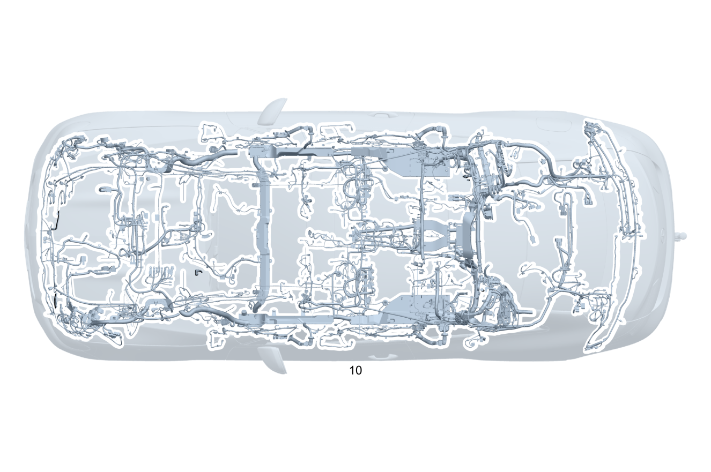

| № | Артикул | Название | Кол. | Примечание | Ограничение |
|---|---|---|---|---|---|
| 10 | A 253 540 42 16 | Электрический жгут (ELECTRICAL WIRING HARNESS) | 1 | Основной жгут электропроводки системы рамы и пола [001660] В ЖГУТЕ ЭЛЕКТРОПРОВОДКИ ИМЕЮТСЯ СООТВЕТСТВ. СПЕЦ.ИСПОЛНЕНИЯ СОГЛАСНО ЗАВОДСКОМУ НОМЕРУ АВТОМОБИЛЯ [622] ПРИ ЗАКАЗЕ УКАЗАТЬ ИДЕНТ.№ | |
| 10 | A 253 540 43 16 | Электрический жгут (ELECTRICAL WIRING HARNESS) | 1 | Основной жгут электропроводки системы рамы и пола [001660] В ЖГУТЕ ЭЛЕКТРОПРОВОДКИ ИМЕЮТСЯ СООТВЕТСТВ. СПЕЦ.ИСПОЛНЕНИЯ СОГЛАСНО ЗАВОДСКОМУ НОМЕРУ АВТОМОБИЛЯ [622] ПРИ ЗАКАЗЕ УКАЗАТЬ ИДЕНТ.№ | 700 |
| 20 | Q 000000000002 | - Возможен заказ только отдельных компонентов жгута проводов | 1 | ESP® Рулевое управление: Влево | |
| 20 | Q 000000000002 | - Возможен заказ только отдельных компонентов жгута проводов | 1 | ESP® Рулевое управление: Вправо | |
| 20 | Q 000000000002 | - Возможен заказ только отдельных компонентов жгута проводов | 1 | ESP® Рулевое управление: Влево | 800 |
| 20 | Q 000000000002 | - Возможен заказ только отдельных компонентов жгута проводов | 1 | ESP® Рулевое управление: Влево | |
| 20 | Q 000000000002 | - Возможен заказ только отдельных компонентов жгута проводов | 1 | ESP® Рулевое управление: Вправо | 800 |
| 20 | Q 000000000002 | - Возможен заказ только отдельных компонентов жгута проводов | 1 | ESP® Рулевое управление: Вправо | |
| 20 | Q 000000000002 | - Возможен заказ только отдельных компонентов жгута проводов | 1 | Пневмоподвеска Рулевое управление: Вправо | 489+808 |
| 20 | Q 000000000002 | - Возможен заказ только отдельных компонентов жгута проводов | 1 | Пневмоподвеска Рулевое управление: Вправо | 489 |
| 20 | Q 000000000002 | - Возможен заказ только отдельных компонентов жгута проводов | 1 | Пневмоподвеска Рулевое управление: Влево | 489+808 |
| 20 | Q 000000000002 | - Возможен заказ только отдельных компонентов жгута проводов | 1 | Пневмоподвеска Рулевое управление: Влево | 489 |
| 20 | Q 000000000002 | - Возможен заказ только отдельных компонентов жгута проводов | 1 | Пневмоподвеска Рулевое управление: Влево | 800+489 |
| 20 | Q 000000000002 | - Возможен заказ только отдельных компонентов жгута проводов | 1 | Пневмоподвеска Рулевое управление: Влево | 489 |
| 20 | Q 000000000002 | - Возможен заказ только отдельных компонентов жгута проводов | 1 | Пневмоподвеска Рулевое управление: Вправо | 800+489 |
| 20 | Q 000000000002 | - Возможен заказ только отдельных компонентов жгута проводов | 1 | Пневмоподвеска Рулевое управление: Вправо | 489 |
| 20 | Q 000000000002 | - Возможен заказ только отдельных компонентов жгута проводов | 1 | Пневмоподвеска Рулевое управление: Вправо | 489 |
| 20 | Q 000000000002 | - Возможен заказ только отдельных компонентов жгута проводов | 1 | Регулировка уровня кузова Рулевое управление: Влево | 459 |
| 20 | Q 000000000002 | - Возможен заказ только отдельных компонентов жгута проводов | 1 | Регулировка уровня кузова Рулевое управление: Вправо | 459 |
| 20 | Q 000000000002 | - Возможен заказ только отдельных компонентов жгута проводов | 1 | Регулировка уровня кузова Рулевое управление: Влево | 800+459 |
| 20 | Q 000000000002 | - Возможен заказ только отдельных компонентов жгута проводов | 1 | Регулировка уровня кузова Рулевое управление: Влево | 459 |
| 20 | Q 000000000002 | - Возможен заказ только отдельных компонентов жгута проводов | 1 | Регулировка уровня кузова Рулевое управление: Вправо | 800+459 |
| 20 | Q 000000000002 | - Возможен заказ только отдельных компонентов жгута проводов | 1 | Регулировка уровня кузова Рулевое управление: Вправо | 459 |
| 20 | Q 000000000002 | - Возможен заказ только отдельных компонентов жгута проводов | 1 | Натяжитель ремня безопасности Рулевое управление: Влево | |
| 20 | Q 000000000002 | - Возможен заказ только отдельных компонентов жгута проводов | 1 | Натяжитель ремня безопасности Рулевое управление: Вправо | |
| 20 | Q 000000000002 | - Возможен заказ только отдельных компонентов жгута проводов | 1 | Натяжитель ремня безопасности Рулевое управление: Влево | 299 |
| 20 | Q 000000000002 | - Возможен заказ только отдельных компонентов жгута проводов | 1 | Натяжитель ремня безопасности Рулевое управление: Вправо | 299 |
| 20 | Q 000000000002 | - Возможен заказ только отдельных компонентов жгута проводов | 1 | Натяжитель ремня безопасности Рулевое управление: Влево | 299+(494/460) |
| 20 | Q 000000000002 | - Возможен заказ только отдельных компонентов жгута проводов | 1 | Распашная дверь багажного отделения с автоматическим приводом | 890 |
| 20 | Q 000000000002 | - Возможен заказ только отдельных компонентов жгута проводов | 1 | Распашная дверь багажного отделения с автоматическим приводом | 800+890 |
| 20 | Q 000000000002 | - Возможен заказ только отдельных компонентов жгута проводов | 1 | Распашная дверь багажного отделения с автоматическим приводом Рулевое управление: Влево | 800+890 |
| 20 | Q 000000000002 | - Возможен заказ только отдельных компонентов жгута проводов | 1 | Распашная дверь багажного отделения с автоматическим приводом Рулевое управление: Влево | 890 |
| 20 | Q 000000000002 | - Возможен заказ только отдельных компонентов жгута проводов | 1 | Распашная дверь багажного отделения с автоматическим приводом Рулевое управление: Вправо | 800+890 |
| 20 | Q 000000000002 | - Возможен заказ только отдельных компонентов жгута проводов | 1 | Распашная дверь багажного отделения с автоматическим приводом Рулевое управление: Вправо | 890 |
| 20 | Q 000000000002 | - Возможен заказ только отдельных компонентов жгута проводов | 1 | Система центральной блокировки замков Рулевое управление: Влево | |
| 20 | Q 000000000002 | - Возможен заказ только отдельных компонентов жгута проводов | 1 | Система центральной блокировки замков Рулевое управление: Вправо | |
| 20 | Q 000000000002 | - Возможен заказ только отдельных компонентов жгута проводов | 1 | Система контроля давления воздуха в шинах Рулевое управление: Влево | 475 |
| 20 | Q 000000000002 | - Возможен заказ только отдельных компонентов жгута проводов | 1 | Система контроля давления воздуха в шинах Рулевое управление: Вправо | 475 |
| 20 | Q 000000000002 | - Возможен заказ только отдельных компонентов жгута проводов | 1 | Связь по шине данных LIN Рулевое управление: Вправо | 808 |
| 20 | Q 000000000002 | - Возможен заказ только отдельных компонентов жгута проводов | 1 | Связь по шине данных LIN Рулевое управление: Вправо | |
| 20 | Q 000000000002 | - Возможен заказ только отдельных компонентов жгута проводов | 1 | Салон, двигатель Рулевое управление: Влево | M642 |
| 20 | Q 000000000002 | - Возможен заказ только отдельных компонентов жгута проводов | 1 | Салон, двигатель Рулевое управление: Вправо | M642 |
| 20 | Q 000000000002 | - Возможен заказ только отдельных компонентов жгута проводов | 1 | Акустический генератор Рулевое управление: Влево | 801+B53 |
| 20 | Q 000000000002 | - Возможен заказ только отдельных компонентов жгута проводов | 1 | Акустический генератор Рулевое управление: Влево | B53 |
| 20 | Q 000000000002 | - Возможен заказ только отдельных компонентов жгута проводов | 1 | Акустический генератор Рулевое управление: Вправо | 801+B53 |
| 20 | Q 000000000002 | - Возможен заказ только отдельных компонентов жгута проводов | 1 | Акустический генератор Рулевое управление: Вправо | B53 |
| 20 | Q 000000000002 | - Возможен заказ только отдельных компонентов жгута проводов | 1 | Акустический генератор | 800+B53+(494/460/498) |
| 20 | Q 000000000002 | - Возможен заказ только отдельных компонентов жгута проводов | 1 | Акустический генератор | B53+(494/460/498) |
| 20 | Q 000000000002 | - Возможен заказ только отдельных компонентов жгута проводов | 1 | Акустический генератор | B53+(494/460/498/835) |
| 20 | Q 000000000002 | - Возможен заказ только отдельных компонентов жгута проводов | 1 | Акустический генератор Рулевое управление: Влево | 809+B53+(494/460) |
| 20 | Q 000000000002 | - Возможен заказ только отдельных компонентов жгута проводов | 1 | Акустический генератор Рулевое управление: Влево | 809+B53+(494/460) |
| 20 | Q 000000000002 | - Возможен заказ только отдельных компонентов жгута проводов | 1 | Акустический генератор Рулевое управление: Влево | 800+B53+(494/460) |
| 20 | Q 000000000002 | - Возможен заказ только отдельных компонентов жгута проводов | 1 | Акустический генератор Рулевое управление: Влево | B53+(494/460) |
| 20 | Q 000000000002 | - Возможен заказ только отдельных компонентов жгута проводов | 1 | Акустический генератор Рулевое управление: Влево | B53+(494/460/835) |
| 20 | Q 000000000002 | - Возможен заказ только отдельных компонентов жгута проводов | 1 | Акустический генератор Рулевое управление: Вправо | 800+B53+498 |
| 20 | Q 000000000002 | - Возможен заказ только отдельных компонентов жгута проводов | 1 | Акустический генератор Рулевое управление: Вправо | B53+498 |
| 20 | Q 000000000002 | - Возможен заказ только отдельных компонентов жгута проводов | 1 | Стык моста, слева | M642 |
| 20 | Q 000000000002 | - Возможен заказ только отдельных компонентов жгута проводов | 1 | Стык моста, слева | M642/M654/M656 |
| 20 | Q 000000000002 | - Возможен заказ только отдельных компонентов жгута проводов | 1 | Стык моста, слева | M642 |
| 20 | Q 000000000002 | - Возможен заказ только отдельных компонентов жгута проводов | 1 | Стык моста, слева | M642+(489/640/641/642) |
| 20 | Q 000000000002 | - Возможен заказ только отдельных компонентов жгута проводов | 1 | Стык моста, слева | M642+(489/640/641/642/459) |
| 20 | Q 000000000002 | - Возможен заказ только отдельных компонентов жгута проводов | 1 | Стык моста, слева | M642+((459+807+057)/489/640/641/642) |
| 20 | Q 000000000002 | - Возможен заказ только отдельных компонентов жгута проводов | 1 | Стык моста, слева | M642+(459/489/640/641/642) |
| 20 | Q 000000000002 | - Возможен заказ только отдельных компонентов жгута проводов | 1 | Стык моста, слева | 800 |
| 20 | Q 000000000002 | - Возможен заказ только отдельных компонентов жгута проводов | 1 | Стык моста, слева | |
| 20 | Q 000000000002 | - Возможен заказ только отдельных компонентов жгута проводов | 1 | Стык моста, слева | (459/489/640/641/642)+800 |
| 20 | Q 000000000002 | - Возможен заказ только отдельных компонентов жгута проводов | 1 | Стык моста, слева | 459/489/640/641/642 |
| 20 | Q 000000000002 | - Возможен заказ только отдельных компонентов жгута проводов | 1 | Стык моста, слева | 489/640/641/642 |
| 20 | Q 000000000002 | - Возможен заказ только отдельных компонентов жгута проводов | 1 | Стык моста, справа | M642 |
| 20 | Q 000000000002 | - Возможен заказ только отдельных компонентов жгута проводов | 1 | Стык моста, справа | M642/M654/M656 |
| 20 | Q 000000000002 | - Возможен заказ только отдельных компонентов жгута проводов | 1 | Стык моста, справа | M642 |
| 20 | Q 000000000002 | - Возможен заказ только отдельных компонентов жгута проводов | 1 | Стык моста, справа | M642+489 |
| 20 | Q 000000000002 | - Возможен заказ только отдельных компонентов жгута проводов | 1 | Стык моста, справа | M642+(459/489) |
| 20 | Q 000000000002 | - Возможен заказ только отдельных компонентов жгута проводов | 1 | Стык моста, справа | M642+((459+807+057)/489) |
| 20 | Q 000000000002 | - Возможен заказ только отдельных компонентов жгута проводов | 1 | Стык моста, справа | M642+(459/489) |
| 20 | Q 000000000002 | - Возможен заказ только отдельных компонентов жгута проводов | 1 | Стык моста, справа | 800 |
| 20 | Q 000000000002 | - Возможен заказ только отдельных компонентов жгута проводов | 1 | Стык моста, справа | |
| 20 | Q 000000000002 | - Возможен заказ только отдельных компонентов жгута проводов | 1 | Стык моста, справа | (459/489)+800 |
| 20 | Q 000000000002 | - Возможен заказ только отдельных компонентов жгута проводов | 1 | Стык моста, справа | (459/489) |
| 20 | Q 000000000002 | - Возможен заказ только отдельных компонентов жгута проводов | 1 | Стык моста, справа | 489 |
| 20 | Q 000000000002 | - Возможен заказ только отдельных компонентов жгута проводов | 1 | Боковая подушка безопасности впереди справа Рулевое управление: Влево [402] БОЛЬШЕ НЕ ПОСТАВЛЯЕТСЯ | 800 |
| 20 | Q 000000000002 | - Возможен заказ только отдельных компонентов жгута проводов | 1 | Боковая подушка безопасности впереди справа Рулевое управление: Влево [402] БОЛЬШЕ НЕ ПОСТАВЛЯЕТСЯ | |
| 20 | Q 000000000002 | - Возможен заказ только отдельных компонентов жгута проводов | 1 | Боковая подушка безопасности впереди справа Рулевое управление: Вправо [402] БОЛЬШЕ НЕ ПОСТАВЛЯЕТСЯ | 800 |
| 20 | Q 000000000002 | - Возможен заказ только отдельных компонентов жгута проводов | 1 | Боковая подушка безопасности впереди справа Рулевое управление: Вправо [402] БОЛЬШЕ НЕ ПОСТАВЛЯЕТСЯ | |
| 20 | Q 000000000002 | - Возможен заказ только отдельных компонентов жгута проводов | 1 | Боковая подушка безопасности впереди справа Рулевое управление: Влево [402] БОЛЬШЕ НЕ ПОСТАВЛЯЕТСЯ | 800+(222/242) |
| 20 | Q 000000000002 | - Возможен заказ только отдельных компонентов жгута проводов | 1 | Боковая подушка безопасности впереди справа Рулевое управление: Влево [402] БОЛЬШЕ НЕ ПОСТАВЛЯЕТСЯ | 222/242 |
| 20 | Q 000000000002 | - Возможен заказ только отдельных компонентов жгута проводов | 1 | Боковая подушка безопасности впереди справа Рулевое управление: Вправо [402] БОЛЬШЕ НЕ ПОСТАВЛЯЕТСЯ | 800+(222/275) |
| 20 | Q 000000000002 | - Возможен заказ только отдельных компонентов жгута проводов | 1 | Боковая подушка безопасности впереди справа Рулевое управление: Вправо [402] БОЛЬШЕ НЕ ПОСТАВЛЯЕТСЯ | 222/275 |
| 20 | Q 000000000002 | - Возможен заказ только отдельных компонентов жгута проводов | 1 | Боковая подушка безопасности впереди справа Рулевое управление: Влево | |
| 20 | Q 000000000002 | - Возможен заказ только отдельных компонентов жгута проводов | 1 | Боковая подушка безопасности впереди справа Рулевое управление: Вправо | |
| 20 | Q 000000000002 | - Возможен заказ только отдельных компонентов жгута проводов | 1 | Боковая подушка безопасности впереди справа Рулевое управление: Влево | 222/242 |
| 20 | Q 000000000002 | - Возможен заказ только отдельных компонентов жгута проводов | 1 | Боковая подушка безопасности впереди справа Рулевое управление: Вправо | 222/275 |
| 20 | Q 000000000002 | - Возможен заказ только отдельных компонентов жгута проводов | 1 | Система распознавания занятости сиденья Рулевое управление: Влево | |
| 20 | Q 000000000002 | - Возможен заказ только отдельных компонентов жгута проводов | 1 | Система распознавания занятости сиденья Рулевое управление: Вправо | |
| 20 | Q 000000000002 | - Возможен заказ только отдельных компонентов жгута проводов | 1 | Система распознавания занятости сиденья Рулевое управление: Влево | 800 |
| 20 | Q 000000000002 | - Возможен заказ только отдельных компонентов жгута проводов | 1 | Система распознавания занятости сиденья Рулевое управление: Влево | |
| 20 | Q 000000000002 | - Возможен заказ только отдельных компонентов жгута проводов | 1 | Система распознавания занятости сиденья Рулевое управление: Вправо | 800 |
| 20 | Q 000000000002 | - Возможен заказ только отдельных компонентов жгута проводов | 1 | Система распознавания занятости сиденья Рулевое управление: Вправо | |
| 20 | Q 000000000002 | - Возможен заказ только отдельных компонентов жгута проводов | 1 | Система распознавания занятости сиденья Рулевое управление: Влево | 800+(222/242) |
| 20 | Q 000000000002 | - Возможен заказ только отдельных компонентов жгута проводов | 1 | Система распознавания занятости сиденья Рулевое управление: Влево | 222/242 |
| 20 | Q 000000000002 | - Возможен заказ только отдельных компонентов жгута проводов | 1 | Система распознавания занятости сиденья Рулевое управление: Вправо | 800+(221/241) |
| 20 | Q 000000000002 | - Возможен заказ только отдельных компонентов жгута проводов | 1 | Система распознавания занятости сиденья Рулевое управление: Вправо | 221/241 |
| 20 | Q 000000000002 | - Возможен заказ только отдельных компонентов жгута проводов | 1 | Система распознавания занятости сиденья Рулевое управление: Влево | 222/242 |
| 20 | Q 000000000002 | - Возможен заказ только отдельных компонентов жгута проводов | 1 | Система распознавания занятости сиденья Рулевое управление: Вправо | 221/241 |
| 20 | Q 000000000002 | - Возможен заказ только отдельных компонентов жгута проводов | 1 | Датчик веса Рулевое управление: Влево | U10 |
| 20 | Q 000000000002 | - Возможен заказ только отдельных компонентов жгута проводов | 1 | Датчик веса Рулевое управление: Вправо | U10 |
| 20 | Q 000000000002 | - Возможен заказ только отдельных компонентов жгута проводов | 1 | Датчик веса Рулевое управление: Влево | 800+U10 |
| 20 | Q 000000000002 | - Возможен заказ только отдельных компонентов жгута проводов | 1 | Датчик веса Рулевое управление: Влево | U10 |
| 20 | Q 000000000002 | - Возможен заказ только отдельных компонентов жгута проводов | 1 | Датчик веса Рулевое управление: Вправо | 800+U10 |
| 20 | Q 000000000002 | - Возможен заказ только отдельных компонентов жгута проводов | 1 | Датчик веса Рулевое управление: Вправо | U10 |
| 20 | Q 000000000002 | - Возможен заказ только отдельных компонентов жгута проводов | 1 | Датчик веса Рулевое управление: Влево | 800+U10+(222/242) |
| 20 | Q 000000000002 | - Возможен заказ только отдельных компонентов жгута проводов | 1 | Датчик веса Рулевое управление: Влево | U10+(222/242) |
| 20 | Q 000000000002 | - Возможен заказ только отдельных компонентов жгута проводов | 1 | Датчик веса Рулевое управление: Вправо | 800+U10+(221/241) |
| 20 | Q 000000000002 | - Возможен заказ только отдельных компонентов жгута проводов | 1 | Датчик веса Рулевое управление: Вправо | U10+(221/241) |
| 20 | Q 000000000002 | - Возможен заказ только отдельных компонентов жгута проводов | 1 | Датчик веса Рулевое управление: Влево | U10+(222/242) |
| 20 | Q 000000000002 | - Возможен заказ только отдельных компонентов жгута проводов | 1 | Датчик веса Рулевое управление: Вправо | U10+(221/241) |
| 20 | Q 000000000002 | - Возможен заказ только отдельных компонентов жгута проводов | 1 | Светодиодная подсветка салона Рулевое управление: Влево | 876+(221/275)+830 |
| 20 | Q 000000000002 | - Возможен заказ только отдельных компонентов жгута проводов | 1 | Светодиодная подсветка салона Рулевое управление: Влево | 876+877 |
| 20 | Q 000000000002 | - Возможен заказ только отдельных компонентов жгута проводов | 1 | Светодиодная подсветка салона Рулевое управление: Вправо | 876+877 |
| 20 | Q 000000000002 | - Возможен заказ только отдельных компонентов жгута проводов | 1 | Светодиодная подсветка салона Рулевое управление: Влево | 876+877+(221/275) |
| 20 | Q 000000000002 | - Возможен заказ только отдельных компонентов жгута проводов | 1 | Светодиодная подсветка салона Рулевое управление: Влево | 876+877+(221/275)+830 |
| 20 | Q 000000000002 | - Возможен заказ только отдельных компонентов жгута проводов | 1 | Светодиодная подсветка салона Рулевое управление: Влево | 876+877+(221/275)+830 |
| 20 | Q 000000000002 | - Возможен заказ только отдельных компонентов жгута проводов | 1 | Светодиодная подсветка салона Рулевое управление: Вправо | 876+877+(221/241) |
| 20 | Q 000000000002 | - Возможен заказ только отдельных компонентов жгута проводов | 1 | Светодиодная подсветка салона Рулевое управление: Влево | 876+(222/242)+830 |
| 20 | Q 000000000002 | - Возможен заказ только отдельных компонентов жгута проводов | 1 | Светодиодная подсветка салона Рулевое управление: Влево | 876+877 |
| 20 | Q 000000000002 | - Возможен заказ только отдельных компонентов жгута проводов | 1 | Светодиодная подсветка салона Рулевое управление: Вправо | 876+877 |
| 20 | Q 000000000002 | - Возможен заказ только отдельных компонентов жгута проводов | 1 | Светодиодная подсветка салона Рулевое управление: Влево | 876+877+(222/242) |
| 20 | Q 000000000002 | - Возможен заказ только отдельных компонентов жгута проводов | 1 | Светодиодная подсветка салона Рулевое управление: Влево | 876+877+(222/242)+830 |
| 20 | Q 000000000002 | - Возможен заказ только отдельных компонентов жгута проводов | 1 | Светодиодная подсветка салона Рулевое управление: Вправо | 876+877+(222/275) |
| 20 | Q 000000000002 | - Возможен заказ только отдельных компонентов жгута проводов | 1 | Светодиодная подсветка салона | 876+877+(421/427) |
| 20 | Q 000000000002 | - Возможен заказ только отдельных компонентов жгута проводов | 1 | Подушка безопасности Рулевое управление: Влево | (494/460)+(221/222/242/275) |
| 20 | Q 000000000002 | - Возможен заказ только отдельных компонентов жгута проводов | 1 | Замок ремня безопасности в задней части салона | 800+U01 |
| 20 | Q 000000000002 | - Возможен заказ только отдельных компонентов жгута проводов | 1 | Замок ремня безопасности в задней части салона | U01 |
| 20 | Q 000000000002 | - Возможен заказ только отдельных компонентов жгута проводов | 1 | Замок ремня безопасности в задней части салона | U01 |
| 20 | Q 000000000002 | - Возможен заказ только отдельных компонентов жгута проводов | 1 | Боковая подушка безопасности (задняя) [402] БОЛЬШЕ НЕ ПОСТАВЛЯЕТСЯ | 293 |
| 20 | Q 000000000002 | - Возможен заказ только отдельных компонентов жгута проводов | 1 | Боковая подушка безопасности (задняя) | 800+293 |
| 20 | Q 000000000002 | - Возможен заказ только отдельных компонентов жгута проводов | 1 | Боковая подушка безопасности (задняя) | 293 |
| 20 | Q 000000000002 | - Возможен заказ только отдельных компонентов жгута проводов | 1 | Шина данных CAN Рулевое управление: Влево | (873/401)+221/221+222/221+222+(873/401) |
| 20 | Q 000000000002 | - Возможен заказ только отдельных компонентов жгута проводов | 1 | Шина данных CAN Рулевое управление: Вправо | (873/401)+222/221+222/221+222+(873/401) |
| 20 | Q 000000000002 | - Возможен заказ только отдельных компонентов жгута проводов | 1 | Шина данных CAN | 01T/01T+807+057+275+(242/241)+872/872 |
| 20 | Q 000000000002 | - Возможен заказ только отдельных компонентов жгута проводов | 1 | Шина данных CAN | 01T/872 |
| 20 | Q 000000000002 | - Возможен заказ только отдельных компонентов жгута проводов | 1 | Шина данных CAN Рулевое управление: Влево | 807+057+((873/401)+(221/872)/(221/872)+222) |
| 20 | Q 000000000002 | - Возможен заказ только отдельных компонентов жгута проводов | 1 | Шина данных CAN Рулевое управление: Влево | (873/401)+(221/872)/(221/872)+222 |
| 20 | Q 000000000002 | - Возможен заказ только отдельных компонентов жгута проводов | 1 | Шина данных CAN Рулевое управление: Вправо | 807+057+((873/401)+(222/872)/221+(222/872)) |
| 20 | Q 000000000002 | - Возможен заказ только отдельных компонентов жгута проводов | 1 | Шина данных CAN Рулевое управление: Вправо | (873/401)+(222/872)/221+(222/872) |
| 20 | Q 000000000002 | - Возможен заказ только отдельных компонентов жгута проводов | 1 | Шина данных CAN | 241/242/275/889/893/01T |
| 20 | Q 000000000002 | - Возможен заказ только отдельных компонентов жгута проводов | 1 | Шина данных CAN | 241/242/275/889/893/01T/Z90 |
| 20 | Q 000000000002 | - Возможен заказ только отдельных компонентов жгута проводов | 1 | Шина данных CAN | (808/809)+(Z90/01T/241/242/275/889/893) |
| 20 | Q 000000000002 | - Возможен заказ только отдельных компонентов жгута проводов | 1 | Шина данных CAN | Z90/01T/241/242/275/889/893 |
| 20 | Q 000000000002 | - Возможен заказ только отдельных компонентов жгута проводов | 1 | Шина данных CAN | 800+(01T/17T/241/242/275/889/893/Z90) |
| 20 | Q 000000000002 | - Возможен заказ только отдельных компонентов жгута проводов | 1 | Шина данных CAN Рулевое управление: Влево | 800+((873/401)+(221/872)/222+(221/872)) |
| 20 | Q 000000000002 | - Возможен заказ только отдельных компонентов жгута проводов | 1 | Шина данных CAN Рулевое управление: Влево | ((873/401)+(221/872)/222+(221/872)) |
| 20 | Q 000000000002 | - Возможен заказ только отдельных компонентов жгута проводов | 1 | Шина данных CAN Рулевое управление: Вправо | 800+((873/401)+(222/872)/221+(222/872)) |
| 20 | Q 000000000002 | - Возможен заказ только отдельных компонентов жгута проводов | 1 | Шина данных CAN Рулевое управление: Вправо | ((873/401)+(222/872)/221+(222/872)) |
| 20 | Q 000000000002 | - Возможен заказ только отдельных компонентов жгута проводов | 1 | Блок выключателей | 890/30P/P17/830 |
| 20 | Q 000000000002 | - Возможен заказ только отдельных компонентов жгута проводов | 1 | Подсветка розетки Рулевое управление: Влево | |
| 20 | Q 000000000002 | - Возможен заказ только отдельных компонентов жгута проводов | 1 | Подсветка розетки Рулевое управление: Влево | 809 |
| 20 | Q 000000000002 | - Возможен заказ только отдельных компонентов жгута проводов | 1 | Подсветка розетки Рулевое управление: Влево | |
| 20 | Q 000000000002 | - Возможен заказ только отдельных компонентов жгута проводов | 1 | Подсветка розетки Рулевое управление: Влево | 800 |
| 20 | Q 000000000002 | - Возможен заказ только отдельных компонентов жгута проводов | 1 | Подсветка розетки Рулевое управление: Влево | |
| 20 | Q 000000000002 | - Возможен заказ только отдельных компонентов жгута проводов | 1 | Подсветка розетки Рулевое управление: Вправо | 800 |
| 20 | Q 000000000002 | - Возможен заказ только отдельных компонентов жгута проводов | 1 | Подсветка розетки Рулевое управление: Вправо | |
| 20 | Q 000000000002 | - Возможен заказ только отдельных компонентов жгута проводов | 1 | Подсветка розетки Рулевое управление: Влево | 802 |
| 20 | Q 000000000002 | - Возможен заказ только отдельных компонентов жгута проводов | 1 | Подсветка розетки Рулевое управление: Влево | |
| 20 | Q 000000000002 | - Возможен заказ только отдельных компонентов жгута проводов | 1 | Подсветка розетки Рулевое управление: Вправо | 802 |
| 20 | Q 000000000002 | - Возможен заказ только отдельных компонентов жгута проводов | 1 | Подсветка розетки Рулевое управление: Вправо | |
| 20 | Q 000000000002 | - Возможен заказ только отдельных компонентов жгута проводов | 1 | Система выпуска ОГ Рулевое управление: Влево | 807+057+(M276/M274/U77/U85/M642+927/M651+(460/494/927)) |
| 20 | Q 000000000002 | - Возможен заказ только отдельных компонентов жгута проводов | 1 | Система выпуска ОГ Рулевое управление: Влево | (807+057/808)+(M276/M274/U77/U85/M642+927/M651+(460/494/927)) |
| 20 | Q 000000000002 | - Возможен заказ только отдельных компонентов жгута проводов | 1 | Система выпуска ОГ Рулевое управление: Влево | M276/M274/U77/U85/M642+927/M651+(460/494/927) |
| 20 | Q 000000000002 | - Возможен заказ только отдельных компонентов жгута проводов | 1 | Система выпуска ОГ Рулевое управление: Влево | M177/M276/M274/U77/U85/M642+927/M651+(460/494/927) |
| 20 | Q 000000000002 | - Возможен заказ только отдельных компонентов жгута проводов | 1 | Система выпуска ОГ Рулевое управление: Вправо | 807+057+(M276/M274/U77/U85/M642+927/M651+(460/494/927)) |
| 20 | Q 000000000002 | - Возможен заказ только отдельных компонентов жгута проводов | 1 | Система выпуска ОГ Рулевое управление: Вправо | (807+057/808)+(M276/M274/U77/U85/M642+927/M651+(460/494/927)) |
| 20 | Q 000000000002 | - Возможен заказ только отдельных компонентов жгута проводов | 1 | Система выпуска ОГ Рулевое управление: Вправо | M276/M274/U77/U85/M642+927/M651+(460/494/927) |
| 20 | Q 000000000002 | - Возможен заказ только отдельных компонентов жгута проводов | 1 | Система выпуска ОГ Рулевое управление: Вправо | M177/M276/M274/U77/U85/M642+927/M651+(460/494/927) |
| 20 | Q 000000000002 | - Возможен заказ только отдельных компонентов жгута проводов | 1 | Стереокамера на верхней стороне ветрового стекла Рулевое управление: Влево | |
| 20 | Q 000000000002 | - Возможен заказ только отдельных компонентов жгута проводов | 1 | Стереокамера на верхней стороне ветрового стекла Рулевое управление: Вправо | |
| 20 | Q 000000000002 | - Возможен заказ только отдельных компонентов жгута проводов | 1 | Стереокамера на верхней стороне ветрового стекла Рулевое управление: Влево | 238/266/269/271/463/537/865 |
| 20 | Q 000000000002 | - Возможен заказ только отдельных компонентов жгута проводов | 1 | Стереокамера на верхней стороне ветрового стекла Рулевое управление: Вправо | 238/266/269/271/463/537/865 |
| 20 | Q 000000000002 | - Возможен заказ только отдельных компонентов жгута проводов | 1 | Модуль обработки сигналов и управления, в задней части салона | |
| 20 | Q 000000000002 | - Возможен заказ только отдельных компонентов жгута проводов | 1 | Сдвижной люк Рулевое управление: Влево | 800+414 |
| 20 | Q 000000000002 | - Возможен заказ только отдельных компонентов жгута проводов | 1 | Сдвижной люк Рулевое управление: Влево | 414 |
| 20 | Q 000000000002 | - Возможен заказ только отдельных компонентов жгута проводов | 1 | Сдвижной люк Рулевое управление: Вправо | 800+414 |
| 20 | Q 000000000002 | - Возможен заказ только отдельных компонентов жгута проводов | 1 | Сдвижной люк Рулевое управление: Вправо | 414 |
| 20 | Q 000000000002 | - Возможен заказ только отдельных компонентов жгута проводов | 1 | Аккумуляторная батарея Рулевое управление: Влево | 800 |
| 20 | Q 000000000002 | - Возможен заказ только отдельных компонентов жгута проводов | 1 | Аккумуляторная батарея Рулевое управление: Влево | |
| 20 | Q 000000000002 | - Возможен заказ только отдельных компонентов жгута проводов | 1 | Аккумуляторная батарея Рулевое управление: Вправо | 800 |
| 20 | Q 000000000002 | - Возможен заказ только отдельных компонентов жгута проводов | 1 | Аккумуляторная батарея Рулевое управление: Вправо | |
| 20 | Q 000000000002 | - Возможен заказ только отдельных компонентов жгута проводов | 1 | Аккумуляторная батарея Рулевое управление: Влево | 800+U98 |
| 20 | Q 000000000002 | - Возможен заказ только отдельных компонентов жгута проводов | 1 | Аккумуляторная батарея Рулевое управление: Вправо | 800+U98 |
| 20 | Q 000000000002 | - Возможен заказ только отдельных компонентов жгута проводов | 1 | Датчик температуры Рулевое управление: Влево | |
| 20 | Q 000000000002 | - Возможен заказ только отдельных компонентов жгута проводов | 1 | Датчик температуры Рулевое управление: Вправо | |
| 20 | Q 000000000002 | - Возможен заказ только отдельных компонентов жгута проводов | 1 | Датчик температуры Рулевое управление: Влево | 800 |
| 20 | Q 000000000002 | - Возможен заказ только отдельных компонентов жгута проводов | 1 | Датчик температуры Рулевое управление: Влево | |
| 20 | Q 000000000002 | - Возможен заказ только отдельных компонентов жгута проводов | 1 | Датчик температуры Рулевое управление: Вправо | 800 |
| 20 | Q 000000000002 | - Возможен заказ только отдельных компонентов жгута проводов | 1 | Датчик температуры Рулевое управление: Вправо | |
| 20 | Q 000000000002 | - Возможен заказ только отдельных компонентов жгута проводов | 1 | Система противоугонной сигнализации Рулевое управление: Влево | 882 |
| 20 | Q 000000000002 | - Возможен заказ только отдельных компонентов жгута проводов | 1 | Система противоугонной сигнализации Рулевое управление: Вправо | 882 |
| 20 | Q 000000000002 | - Возможен заказ только отдельных компонентов жгута проводов | 1 | Клапан рециркуляции ОГ Рулевое управление: Влево | (U77/U85)+(494/460) |
| 20 | Q 000000000002 | - Возможен заказ только отдельных компонентов жгута проводов | 1 | Автономный отопитель Рулевое управление: Влево | 800+228 |
| 20 | Q 000000000002 | - Возможен заказ только отдельных компонентов жгута проводов | 1 | Автономный отопитель Рулевое управление: Влево | 800+228 |
| 20 | Q 000000000002 | - Возможен заказ только отдельных компонентов жгута проводов | 1 | Автономный отопитель Рулевое управление: Влево | 228 |
| 20 | Q 000000000002 | - Возможен заказ только отдельных компонентов жгута проводов | 1 | Автономный отопитель Рулевое управление: Влево | 228 |
| 20 | Q 000000000002 | - Возможен заказ только отдельных компонентов жгута проводов | 1 | Связь по шине данных LIN Рулевое управление: Влево | 800+(2U1/M656/M274+ME05) |
| 20 | Q 000000000002 | - Возможен заказ только отдельных компонентов жгута проводов | 1 | Связь по шине данных LIN Рулевое управление: Влево | 2U1/M656/M274+ME05 |
| 20 | Q 000000000002 | - Возможен заказ только отдельных компонентов жгута проводов | 1 | Связь по шине данных LIN Рулевое управление: Вправо | 800+(2U1/M656/M274+ME05) |
| 20 | Q 000000000002 | - Возможен заказ только отдельных компонентов жгута проводов | 1 | Связь по шине данных LIN Рулевое управление: Вправо | 2U1/M656/M274+ME05 |
| 20 | Q 000000000002 | - Возможен заказ только отдельных компонентов жгута проводов | 1 | Связь по шине данных LIN Рулевое управление: Влево | 800 |
| 20 | Q 000000000002 | - Возможен заказ только отдельных компонентов жгута проводов | 1 | Связь по шине данных LIN Рулевое управление: Влево | |
| 20 | Q 000000000002 | - Возможен заказ только отдельных компонентов жгута проводов | 1 | Связь по шине данных LIN Рулевое управление: Вправо | 800 |
| 20 | Q 000000000002 | - Возможен заказ только отдельных компонентов жгута проводов | 1 | Связь по шине данных LIN Рулевое управление: Вправо | |
| 20 | Q 000000000002 | - Возможен заказ только отдельных компонентов жгута проводов | 1 | Датчик давления | 802+999 |
| 20 | Q 000000000002 | - Возможен заказ только отдельных компонентов жгута проводов | 1 | Датчик давления | 999 |
| 20 | Q 000000000002 | - Возможен заказ только отдельных компонентов жгута проводов | 1 | Шинная система FlexRay Рулевое управление: Влево | |
| 20 | Q 000000000002 | - Возможен заказ только отдельных компонентов жгута проводов | 1 | Шинная система FlexRay Рулевое управление: Вправо | |
| 20 | Q 000000000002 | - Возможен заказ только отдельных компонентов жгута проводов | 1 | Шинная система FlexRay Рулевое управление: Влево | 235 |
| 20 | Q 000000000002 | - Возможен заказ только отдельных компонентов жгута проводов | 1 | Шинная система FlexRay Рулевое управление: Вправо | 235 |
| 20 | Q 000000000002 | - Возможен заказ только отдельных компонентов жгута проводов | 1 | Шинная система FlexRay Рулевое управление: Влево | 233/239/489 |
| 20 | Q 000000000002 | - Возможен заказ только отдельных компонентов жгута проводов | 1 | Шинная система FlexRay Рулевое управление: Вправо | 233/239/489 |
| 20 | Q 000000000002 | - Возможен заказ только отдельных компонентов жгута проводов | 1 | Шинная система FlexRay Рулевое управление: Влево | 235+(233/239/489) |
| 20 | Q 000000000002 | - Возможен заказ только отдельных компонентов жгута проводов | 1 | Шинная система FlexRay Рулевое управление: Вправо | 235+(233/239/489) |
| 20 | Q 000000000002 | - Возможен заказ только отдельных компонентов жгута проводов | 1 | Акустический генератор Рулевое управление: Влево | 808+810+(B63/M276+M016/M177) |
| 20 | Q 000000000002 | - Возможен заказ только отдельных компонентов жгута проводов | 1 | Акустический генератор Рулевое управление: Влево | 810+(B63/M276+M016/M177) |
| 20 | Q 000000000002 | - Возможен заказ только отдельных компонентов жгута проводов | 1 | Акустический генератор Рулевое управление: Вправо | 808+810+(B63/M276+M016/M177) |
| 20 | Q 000000000002 | - Возможен заказ только отдельных компонентов жгута проводов | 1 | Акустический генератор Рулевое управление: Вправо | 810+(B63/M276+M016/M177) |
| 20 | Q 000000000002 | - Возможен заказ только отдельных компонентов жгута проводов | 1 | Телефон | 386/379 |
| 20 | Q 000000000002 | - Возможен заказ только отдельных компонентов жгута проводов | 1 | Телефон | 807+057+386 |
| 20 | Q 000000000002 | - Возможен заказ только отдельных компонентов жгута проводов | 1 | Телефон | (807+057/808)+386 |
| 20 | Q 000000000002 | - Возможен заказ только отдельных компонентов жгута проводов | 1 | Телефон | 386 |
| 20 | Q 000000000002 | - Возможен заказ только отдельных компонентов жгута проводов | 1 | Телефон | 807+057+379 |
| 20 | Q 000000000002 | - Возможен заказ только отдельных компонентов жгута проводов | 1 | Телефон | 379 |
| 20 | Q 000000000002 | - Возможен заказ только отдельных компонентов жгута проводов | 1 | От антенного переключателя к модулю дистанционного запуска автономного отопителя | 800+503+362+899 |
| 20 | Q 000000000002 | - Возможен заказ только отдельных компонентов жгута проводов | 1 | Модуль подключения мультимедийных устройств Рулевое управление: Влево | 355/357/531 |
| 20 | Q 000000000002 | - Возможен заказ только отдельных компонентов жгута проводов | 1 | Модуль подключения мультимедийных устройств Рулевое управление: Вправо | 355/357/531 |
| 20 | Q 000000000002 | - Возможен заказ только отдельных компонентов жгута проводов | 1 | Модуль подключения мультимедийных устройств Рулевое управление: Влево | 154 |
| 20 | Q 000000000002 | - Возможен заказ только отдельных компонентов жгута проводов | 1 | Модуль подключения мультимедийных устройств Рулевое управление: Вправо | 154 |
| 20 | Q 000000000002 | - Возможен заказ только отдельных компонентов жгута проводов | 1 | Система экстренного вызова | 800+(362/362+1B1)+(ME05/ME01) |
| 20 | Q 000000000002 | - Возможен заказ только отдельных компонентов жгута проводов | 1 | Система экстренного вызова | 360/362 |
| 20 | Q 000000000002 | - Возможен заказ только отдельных компонентов жгута проводов | 1 | Система экстренного вызова | 362 |
| 20 | Q 000000000002 | - Возможен заказ только отдельных компонентов жгута проводов | 1 | Система экстренного вызова | 800+(362/362+1B1) |
| 20 | Q 000000000002 | - Возможен заказ только отдельных компонентов жгута проводов | 1 | Система экстренного вызова | 362/362+1B1 |
| 20 | Q 000000000002 | - Возможен заказ только отдельных компонентов жгута проводов | 1 | Проектор для ветрового стекла Рулевое управление: Влево | 463 |
| 20 | Q 000000000002 | - Возможен заказ только отдельных компонентов жгута проводов | 1 | Проектор для ветрового стекла Рулевое управление: Вправо | 463 |
| 20 | Q 000000000002 | - Возможен заказ только отдельных компонентов жгута проводов | 1 | Проектор для ветрового стекла Рулевое управление: Влево | 800+463 |
| 20 | Q 000000000002 | - Возможен заказ только отдельных компонентов жгута проводов | 1 | Проектор для ветрового стекла Рулевое управление: Влево | 463 |
| 20 | Q 000000000002 | - Возможен заказ только отдельных компонентов жгута проводов | 1 | Проектор для ветрового стекла Рулевое управление: Вправо | 800+463 |
| 20 | Q 000000000002 | - Возможен заказ только отдельных компонентов жгута проводов | 1 | Проектор для ветрового стекла Рулевое управление: Вправо | 463 |
| 20 | Q 000000000002 | - Возможен заказ только отдельных компонентов жгута проводов | 1 | Система взимания дорожных сборов Рулевое управление: Влево | 498 |
| 20 | Q 000000000002 | - Возможен заказ только отдельных компонентов жгута проводов | 1 | Система взимания дорожных сборов Рулевое управление: Вправо | 498 |
| 20 | Q 000000000002 | - Возможен заказ только отдельных компонентов жгута проводов | 1 | Система взимания дорожных сборов Рулевое управление: Влево | 809+(498/835) |
| 20 | Q 000000000002 | - Возможен заказ только отдельных компонентов жгута проводов | 1 | Система взимания дорожных сборов Рулевое управление: Влево | 498/835 |
| 20 | Q 000000000002 | - Возможен заказ только отдельных компонентов жгута проводов | 1 | Система взимания дорожных сборов Рулевое управление: Вправо | 809+(498/835) |
| 20 | Q 000000000002 | - Возможен заказ только отдельных компонентов жгута проводов | 1 | Система взимания дорожных сборов Рулевое управление: Вправо | 498/835 |
| 20 | Q 000000000002 | - Возможен заказ только отдельных компонентов жгута проводов | 1 | Система взимания дорожных сборов Рулевое управление: Влево | 800+(498/835) |
| 20 | Q 000000000002 | - Возможен заказ только отдельных компонентов жгута проводов | 1 | Система взимания дорожных сборов Рулевое управление: Влево | 498/835 |
| 20 | Q 000000000002 | - Возможен заказ только отдельных компонентов жгута проводов | 1 | Система взимания дорожных сборов Рулевое управление: Влево | 498/835/830+943 |
| 20 | Q 000000000002 | - Возможен заказ только отдельных компонентов жгута проводов | 1 | Система взимания дорожных сборов Рулевое управление: Вправо | 800+(498/835) |
| 20 | Q 000000000002 | - Возможен заказ только отдельных компонентов жгута проводов | 1 | Система взимания дорожных сборов Рулевое управление: Вправо | 498/835 |
| 20 | Q 000000000002 | - Возможен заказ только отдельных компонентов жгута проводов | 1 | Система экстренного вызова Рулевое управление: Влево | 9U1 |
| 20 | Q 000000000002 | - Возможен заказ только отдельных компонентов жгута проводов | 1 | Система экстренного вызова Рулевое управление: Влево | 9U1 |
| 20 | Q 000000000002 | - Возможен заказ только отдельных компонентов жгута проводов | 1 | E\-Call Рулевое управление: Влево | 9U1 |
| 20 | Q 000000000002 | - Возможен заказ только отдельных компонентов жгута проводов | 1 | E\-Call Рулевое управление: Влево | 9U1+810 |
| 20 | Q 000000000002 | - Возможен заказ только отдельных компонентов жгута проводов | 1 | Подготовка к установке мультимедийной системы для задних пассажиров | 866 |
| 20 | Q 000000000002 | - Возможен заказ только отдельных компонентов жгута проводов | 1 | Подготовка к установке мультимедийной системы для задних пассажиров Рулевое управление: Влево | 866+(275/221)+(222/242) |
| 20 | Q 000000000002 | - Возможен заказ только отдельных компонентов жгута проводов | 1 | Подготовка к установке мультимедийной системы для задних пассажиров Рулевое управление: Вправо | 866+(241/221)+(222/275) |
| 20 | Q 000000000002 | - Возможен заказ только отдельных компонентов жгута проводов | 1 | Подготовка к установке мультимедийной системы для задних пассажиров Рулевое управление: Влево | 866+(222/242) |
| 20 | Q 000000000002 | - Возможен заказ только отдельных компонентов жгута проводов | 1 | Подготовка к установке мультимедийной системы для задних пассажиров Рулевое управление: Вправо | 866+(222/275) |
| 20 | Q 000000000002 | - Возможен заказ только отдельных компонентов жгута проводов | 1 | Подготовка к установке мультимедийной системы для задних пассажиров Рулевое управление: Влево | 866+(275/221) |
| 20 | Q 000000000002 | - Возможен заказ только отдельных компонентов жгута проводов | 1 | Подготовка к установке мультимедийной системы для задних пассажиров Рулевое управление: Вправо | 866+(241/221) |
| 20 | Q 000000000002 | - Возможен заказ только отдельных компонентов жгута проводов | 1 | Подготовка к установке мультимедийной системы для задних пассажиров | 800+866 |
| 20 | Q 000000000002 | - Возможен заказ только отдельных компонентов жгута проводов | 1 | Подготовка к установке мультимедийной системы для задних пассажиров | 866 |
| 20 | Q 000000000002 | - Возможен заказ только отдельных компонентов жгута проводов | 1 | Подготовка к установке мультимедийной системы для задних пассажиров Рулевое управление: Влево | 800+866+(275/221)+(222/242) |
| 20 | Q 000000000002 | - Возможен заказ только отдельных компонентов жгута проводов | 1 | Подготовка к установке мультимедийной системы для задних пассажиров Рулевое управление: Влево | 866+(275/221)+(222/242) |
| 20 | Q 000000000002 | - Возможен заказ только отдельных компонентов жгута проводов | 1 | Подготовка к установке мультимедийной системы для задних пассажиров Рулевое управление: Вправо | 800+866+(241/221)+(222/275) |
| 20 | Q 000000000002 | - Возможен заказ только отдельных компонентов жгута проводов | 1 | Подготовка к установке мультимедийной системы для задних пассажиров Рулевое управление: Вправо | 866+(241/221)+(222/275) |
| 20 | Q 000000000002 | - Возможен заказ только отдельных компонентов жгута проводов | 1 | Подготовка к установке мультимедийной системы для задних пассажиров Рулевое управление: Влево | 800+866+(222/242) |
| 20 | Q 000000000002 | - Возможен заказ только отдельных компонентов жгута проводов | 1 | Подготовка к установке мультимедийной системы для задних пассажиров Рулевое управление: Влево | 866+(222/242) |
| 20 | Q 000000000002 | - Возможен заказ только отдельных компонентов жгута проводов | 1 | Подготовка к установке мультимедийной системы для задних пассажиров Рулевое управление: Вправо | 800+866+(222/275) |
| 20 | Q 000000000002 | - Возможен заказ только отдельных компонентов жгута проводов | 1 | Подготовка к установке мультимедийной системы для задних пассажиров Рулевое управление: Вправо | 866+(222/275) |
| 20 | Q 000000000002 | - Возможен заказ только отдельных компонентов жгута проводов | 1 | Подготовка к установке мультимедийной системы для задних пассажиров Рулевое управление: Влево | 800+866+(275/221) |
| 20 | Q 000000000002 | - Возможен заказ только отдельных компонентов жгута проводов | 1 | Подготовка к установке мультимедийной системы для задних пассажиров Рулевое управление: Влево | 866+(275/221) |
| 20 | Q 000000000002 | - Возможен заказ только отдельных компонентов жгута проводов | 1 | Подготовка к установке мультимедийной системы для задних пассажиров Рулевое управление: Вправо | 800+866+(241/221) |
| 20 | Q 000000000002 | - Возможен заказ только отдельных компонентов жгута проводов | 1 | Подготовка к установке мультимедийной системы для задних пассажиров Рулевое управление: Вправо | 866+(241/221) |
| 20 | Q 000000000002 | - Возможен заказ только отдельных компонентов жгута проводов | 1 | DISTRONIC Рулевое управление: Влево | 800+233 |
| 20 | Q 000000000002 | - Возможен заказ только отдельных компонентов жгута проводов | 1 | DISTRONIC Рулевое управление: Вправо | 800+233 |
| 20 | Q 000000000002 | - Возможен заказ только отдельных компонентов жгута проводов | 1 | DISTRONIC Рулевое управление: Влево | 233 |
| 20 | Q 000000000002 | - Возможен заказ только отдельных компонентов жгута проводов | 1 | DISTRONIC Рулевое управление: Вправо | 233 |
| 20 | Q 000000000002 | - Возможен заказ только отдельных компонентов жгута проводов | 1 | DISTRONIC Рулевое управление: Влево | 800+233 |
| 20 | Q 000000000002 | - Возможен заказ только отдельных компонентов жгута проводов | 1 | DISTRONIC Рулевое управление: Влево | 800+233 |
| 20 | Q 000000000002 | - Возможен заказ только отдельных компонентов жгута проводов | 1 | DISTRONIC Рулевое управление: Влево | 233 |
| 20 | Q 000000000002 | - Возможен заказ только отдельных компонентов жгута проводов | 1 | DISTRONIC Рулевое управление: Вправо | 800+233 |
| 20 | Q 000000000002 | - Возможен заказ только отдельных компонентов жгута проводов | 1 | DISTRONIC Рулевое управление: Вправо | 800+233 |
| 20 | Q 000000000002 | - Возможен заказ только отдельных компонентов жгута проводов | 1 | DISTRONIC Рулевое управление: Вправо | 233 |
| 20 | Q 000000000002 | - Возможен заказ только отдельных компонентов жгута проводов | 1 | DISTRONIC Рулевое управление: Влево | 802+233 |
| 20 | Q 000000000002 | - Возможен заказ только отдельных компонентов жгута проводов | 1 | DISTRONIC Рулевое управление: Влево | 233 |
| 20 | Q 000000000002 | - Возможен заказ только отдельных компонентов жгута проводов | 1 | DISTRONIC Рулевое управление: Вправо | 802+233 |
| 20 | Q 000000000002 | - Возможен заказ только отдельных компонентов жгута проводов | 1 | DISTRONIC Рулевое управление: Вправо | 233 |
| 20 | Q 000000000002 | - Возможен заказ только отдельных компонентов жгута проводов | 1 | DISTRONIC Рулевое управление: Влево | 800+239 |
| 20 | Q 000000000002 | - Возможен заказ только отдельных компонентов жгута проводов | 1 | DISTRONIC Рулевое управление: Влево | 239 |
| 20 | Q 000000000002 | - Возможен заказ только отдельных компонентов жгута проводов | 1 | DISTRONIC Рулевое управление: Вправо | 800+239 |
| 20 | Q 000000000002 | - Возможен заказ только отдельных компонентов жгута проводов | 1 | DISTRONIC Рулевое управление: Вправо | 239 |
| 20 | Q 000000000002 | - Возможен заказ только отдельных компонентов жгута проводов | 1 | DISTRONIC Рулевое управление: Влево | 239 |
| 20 | Q 000000000002 | - Возможен заказ только отдельных компонентов жгута проводов | 1 | DISTRONIC Рулевое управление: Вправо | 239 |
| 20 | Q 000000000002 | - Возможен заказ только отдельных компонентов жгута проводов | 1 | Системы помощи при движении | 800+(234/476/234+476) |
| 20 | Q 000000000002 | - Возможен заказ только отдельных компонентов жгута проводов | 1 | Системы помощи при движении | 800+234 |
| 20 | Q 000000000002 | - Возможен заказ только отдельных компонентов жгута проводов | 1 | Системы помощи при движении | 234 |
| 20 | Q 000000000002 | - Возможен заказ только отдельных компонентов жгута проводов | 1 | Системы помощи при движении | 800+234 |
| 20 | Q 000000000002 | - Возможен заказ только отдельных компонентов жгута проводов | 1 | Система PARKTRONIC Рулевое управление: Влево | 235 |
| 20 | Q 000000000002 | - Возможен заказ только отдельных компонентов жгута проводов | 1 | Система PARKTRONIC Рулевое управление: Вправо | 235 |
| 20 | Q 000000000002 | - Возможен заказ только отдельных компонентов жгута проводов | 1 | Тягово\-сцепное устройство | 800+553 |
| 20 | Q 000000000002 | - Возможен заказ только отдельных компонентов жгута проводов | 1 | Тягово\-сцепное устройство | 553 |
| 20 | Q 000000000002 | - Возможен заказ только отдельных компонентов жгута проводов | 1 | Задние фонари | 613/620/632/640/642/830 |
| 20 | Q 000000000002 | - Возможен заказ только отдельных компонентов жгута проводов | 1 | Задние фонари | 620/632/640/642/830 |
| 20 | Q 000000000002 | - Возможен заказ только отдельных компонентов жгута проводов | 1 | Задние фонари | 631/641 |
| 20 | Q 000000000002 | - Возможен заказ только отдельных компонентов жгута проводов | 1 | Задние фонари | 613/631/641 |
| 20 | Q 000000000002 | - Возможен заказ только отдельных компонентов жгута проводов | 1 | Задние фонари | (620/632/640)+(460/494/496) |
| 20 | Q 000000000002 | - Возможен заказ только отдельных компонентов жгута проводов | 1 | Задние фонари | 800+(620/632/640/642/830) |
| 20 | Q 000000000002 | - Возможен заказ только отдельных компонентов жгута проводов | 1 | Задние фонари | 632/640/642/830 |
| 20 | Q 000000000002 | - Возможен заказ только отдельных компонентов жгута проводов | 1 | Задние фонари | 632/642 |
| 20 | Q 000000000002 | - Возможен заказ только отдельных компонентов жгута проводов | 1 | Задние фонари | 800+(613/631/641) |
| 20 | Q 000000000002 | - Возможен заказ только отдельных компонентов жгута проводов | 1 | Задние фонари | 631/641 |
| 20 | Q 000000000002 | - Возможен заказ только отдельных компонентов жгута проводов | 1 | Задние фонари | 800+((620/632/640)+(460/494/496)) |
| 20 | Q 000000000002 | - Возможен заказ только отдельных компонентов жгута проводов | 1 | Задние фонари | (632/640)+(460/494) |
| 20 | Q 000000000002 | - Возможен заказ только отдельных компонентов жгута проводов | 1 | Задние фонари | (632/642)+830+772 |
| 20 | Q 000000000002 | - Возможен заказ только отдельных компонентов жгута проводов | 1 | Задние фонари | (801/802)+(632/642)+830+772 |
| 20 | Q 000000000002 | - Возможен заказ только отдельных компонентов жгута проводов | 1 | Задние фонари | (632/642)+830+772 |
| 20 | Q 000000000002 | - Возможен заказ только отдельных компонентов жгута проводов | 1 | Механизм регулировки положения левого сиденья (с частичным электроприводом) | 800 |
| 20 | Q 000000000002 | - Возможен заказ только отдельных компонентов жгута проводов | 1 | Механизм регулировки положения левого сиденья (с частичным электроприводом) | |
| 20 | Q 000000000002 | - Возможен заказ только отдельных компонентов жгута проводов | 1 | Механизм регулировки положения левого сиденья (с частичным электроприводом) | |
| 20 | Q 000000000002 | - Возможен заказ только отдельных компонентов жгута проводов | 1 | Механизм регулировки положения правого сиденья (с частичным электроприводом) | 800 |
| 20 | Q 000000000002 | - Возможен заказ только отдельных компонентов жгута проводов | 1 | Механизм регулировки положения правого сиденья (с частичным электроприводом) | |
| 20 | Q 000000000002 | - Возможен заказ только отдельных компонентов жгута проводов | 1 | Механизм регулировки положения правого сиденья (с частичным электроприводом) | |
| 20 | Q 000000000002 | - Возможен заказ только отдельных компонентов жгута проводов | 1 | Механизм регулировки поясничного подпора (левый) | U22/P65/555 |
| 20 | Q 000000000002 | - Возможен заказ только отдельных компонентов жгута проводов | 1 | Механизм регулировки поясничного подпора (левый) Рулевое управление: Влево | (U22/P65/555)+(221/275) |
| 20 | Q 000000000002 | - Возможен заказ только отдельных компонентов жгута проводов | 1 | Механизм регулировки поясничного подпора (левый) Рулевое управление: Вправо | (U22/P65/555)+(221/241) |
| 20 | Q 000000000002 | - Возможен заказ только отдельных компонентов жгута проводов | 1 | Механизм регулировки поясничного подпора (правый) | U22/P65/555 |
| 20 | Q 000000000002 | - Возможен заказ только отдельных компонентов жгута проводов | 1 | Механизм регулировки поясничного подпора (правый) Рулевое управление: Влево | (U22/P65/555)+(222/242) |
| 20 | Q 000000000002 | - Возможен заказ только отдельных компонентов жгута проводов | 1 | Механизм регулировки поясничного подпора (правый) Рулевое управление: Вправо | (U22/P65/555)+(222/275) |
| 20 | Q 000000000002 | - Возможен заказ только отдельных компонентов жгута проводов | 1 | Механизм регулировки сиденья слева Рулевое управление: Влево | 221 |
| 20 | Q 000000000002 | - Возможен заказ только отдельных компонентов жгута проводов | 1 | Механизм регулировки сиденья слева Рулевое управление: Вправо | 221 |
| 20 | Q 000000000002 | - Возможен заказ только отдельных компонентов жгута проводов | 1 | Механизм регулировки сиденья слева Рулевое управление: Влево | 221+(222/401/872/873/01T) |
| 20 | Q 000000000002 | - Возможен заказ только отдельных компонентов жгута проводов | 1 | Механизм регулировки сиденья слева Рулевое управление: Вправо | 221+(222/872/01T) |
| 20 | Q 000000000002 | - Возможен заказ только отдельных компонентов жгута проводов | 1 | Механизм регулировки сиденья слева | 800+221 |
| 20 | Q 000000000002 | - Возможен заказ только отдельных компонентов жгута проводов | 1 | Механизм регулировки сиденья слева | 221 |
| 20 | Q 000000000002 | - Возможен заказ только отдельных компонентов жгута проводов | 1 | Механизм регулировки сиденья слева Рулевое управление: Влево | 800+221+(222/401/872/873/01T/17T) |
| 20 | Q 000000000002 | - Возможен заказ только отдельных компонентов жгута проводов | 1 | Механизм регулировки сиденья слева Рулевое управление: Влево | 221+(222/401/872/873/01T/17T) |
| 20 | Q 000000000002 | - Возможен заказ только отдельных компонентов жгута проводов | 1 | Механизм регулировки сиденья слева Рулевое управление: Вправо | 800+221+(222/872/01T/17T) |
| 20 | Q 000000000002 | - Возможен заказ только отдельных компонентов жгута проводов | 1 | Механизм регулировки сиденья слева Рулевое управление: Вправо | 221+(222/872/01T/17T) |
| 20 | Q 000000000002 | - Возможен заказ только отдельных компонентов жгута проводов | 1 | Механизм регулировки сиденья справа Рулевое управление: Влево | 222 |
| 20 | Q 000000000002 | - Возможен заказ только отдельных компонентов жгута проводов | 1 | Механизм регулировки сиденья справа Рулевое управление: Вправо | 222 |
| 20 | Q 000000000002 | - Возможен заказ только отдельных компонентов жгута проводов | 1 | Механизм регулировки сиденья справа Рулевое управление: Влево | 222+(221/872/01T) |
| 20 | Q 000000000002 | - Возможен заказ только отдельных компонентов жгута проводов | 1 | Механизм регулировки сиденья справа Рулевое управление: Вправо | 222+(221/401/872/873/01T) |
| 20 | Q 000000000002 | - Возможен заказ только отдельных компонентов жгута проводов | 1 | Механизм регулировки сиденья справа | 800+222 |
| 20 | Q 000000000002 | - Возможен заказ только отдельных компонентов жгута проводов | 1 | Механизм регулировки сиденья справа | 222 |
| 20 | Q 000000000002 | - Возможен заказ только отдельных компонентов жгута проводов | 1 | Механизм регулировки сиденья справа Рулевое управление: Влево | 800+222+(221/872/01T/17T) |
| 20 | Q 000000000002 | - Возможен заказ только отдельных компонентов жгута проводов | 1 | Механизм регулировки сиденья справа Рулевое управление: Влево | 222+(221/872/01T/17T) |
| 20 | Q 000000000002 | - Возможен заказ только отдельных компонентов жгута проводов | 1 | Механизм регулировки сиденья справа Рулевое управление: Вправо | 800+222+(221/401/872/873/01T/17T) |
| 20 | Q 000000000002 | - Возможен заказ только отдельных компонентов жгута проводов | 1 | Механизм регулировки сиденья справа Рулевое управление: Вправо | 222+(221/401/872/873/01T/17T) |
| 20 | Q 000000000002 | - Возможен заказ только отдельных компонентов жгута проводов | 1 | Механизм регулировки сиденья Рулевое управление: Влево | 275+242+(872/01T) |
| 20 | Q 000000000002 | - Возможен заказ только отдельных компонентов жгута проводов | 1 | Механизм регулировки сиденья Рулевое управление: Вправо | 275+241+(872/01T) |
| 20 | Q 000000000002 | - Возможен заказ только отдельных компонентов жгута проводов | 1 | Подогрев сиденья слева Рулевое управление: Вправо | 800+(401/873) |
| 20 | Q 000000000002 | - Возможен заказ только отдельных компонентов жгута проводов | 1 | Подогрев сиденья слева Рулевое управление: Вправо | 401/873 |
| 20 | Q 000000000002 | - Возможен заказ только отдельных компонентов жгута проводов | 1 | Подогрев сиденья слева Рулевое управление: Вправо | 401/873 |
| 20 | Q 000000000002 | - Возможен заказ только отдельных компонентов жгута проводов | 1 | Вентиляция сидений | 800+401 |
| 20 | Q 000000000002 | - Возможен заказ только отдельных компонентов жгута проводов | 1 | Вентиляция сидений | 401 |
| 20 | Q 000000000002 | - Возможен заказ только отдельных компонентов жгута проводов | 1 | Вентиляция сидений | 401 |
| 20 | Q 000000000002 | - Возможен заказ только отдельных компонентов жгута проводов | 1 | Подогрев задних сидений | 872 |
| 20 | Q 000000000002 | - Возможен заказ только отдельных компонентов жгута проводов | 1 | Подогрев задних сидений Рулевое управление: Влево | 807+057+(221+(873/401)+872/221+222+872/275+222+872/275+(873/401)+872) |
| 20 | Q 000000000002 | - Возможен заказ только отдельных компонентов жгута проводов | 1 | Подогрев задних сидений Рулевое управление: Влево | 807+057+(873/401)+872 |
| 20 | Q 000000000002 | - Возможен заказ только отдельных компонентов жгута проводов | 1 | Подогрев задних сидений Рулевое управление: Вправо | 807+057+(222+(873/401)+872/221+222+872/275+221+872/275+(873/401)+872) |
| 20 | Q 000000000002 | - Возможен заказ только отдельных компонентов жгута проводов | 1 | Подогрев задних сидений Рулевое управление: Вправо | 807+057+(873/401)+872 |
| 20 | Q 000000000002 | - Возможен заказ только отдельных компонентов жгута проводов | 1 | Подогрев задних сидений Рулевое управление: Влево | 807+057+275+242+872 |
| 20 | Q 000000000002 | - Возможен заказ только отдельных компонентов жгута проводов | 1 | Подогрев задних сидений Рулевое управление: Влево | (807+057/808)+275+242+872 |
| 20 | Q 000000000002 | - Возможен заказ только отдельных компонентов жгута проводов | 1 | Подогрев задних сидений Рулевое управление: Влево | 275+242+872 |
| 20 | Q 000000000002 | - Возможен заказ только отдельных компонентов жгута проводов | 1 | Подогрев задних сидений Рулевое управление: Вправо | 807+057+275+241+872 |
| 20 | Q 000000000002 | - Возможен заказ только отдельных компонентов жгута проводов | 1 | Подогрев задних сидений Рулевое управление: Вправо | (807+057/808)+275+241+872 |
| 20 | Q 000000000002 | - Возможен заказ только отдельных компонентов жгута проводов | 1 | Подогрев задних сидений Рулевое управление: Вправо | 275+241+872 |
| 20 | Q 000000000002 | - Возможен заказ только отдельных компонентов жгута проводов | 1 | Подогрев задних сидений Рулевое управление: Влево | 800+275+242+872 |
| 20 | Q 000000000002 | - Возможен заказ только отдельных компонентов жгута проводов | 1 | Подогрев задних сидений Рулевое управление: Влево | 275+242+872 |
| 20 | Q 000000000002 | - Возможен заказ только отдельных компонентов жгута проводов | 1 | Подогрев задних сидений Рулевое управление: Вправо | 800+275+241+872 |
| 20 | Q 000000000002 | - Возможен заказ только отдельных компонентов жгута проводов | 1 | Подогрев задних сидений Рулевое управление: Вправо | 275+241+872 |
| 20 | Q 000000000002 | - Возможен заказ только отдельных компонентов жгута проводов | 1 | Подогрев задних сидений | 807+057+872 |
| 20 | Q 000000000002 | - Возможен заказ только отдельных компонентов жгута проводов | 1 | Подогрев задних сидений | (807+057/808)+872 |
| 20 | Q 000000000002 | - Возможен заказ только отдельных компонентов жгута проводов | 1 | Подогрев задних сидений | 872 |
| 20 | Q 000000000002 | - Возможен заказ только отдельных компонентов жгута проводов | 1 | Подогрев задних сидений | 800+872/800+275+(242/241)+872+(01T/17T) |
| 20 | Q 000000000002 | - Возможен заказ только отдельных компонентов жгута проводов | 1 | Подогрев задних сидений | 872/275+(242/241)+872+(01T/17T) |
| 20 | Q 000000000002 | - Возможен заказ только отдельных компонентов жгута проводов | 1 | Розетка сзади Рулевое управление: Влево | 830/830+876+877 |
| 20 | Q 000000000002 | - Возможен заказ только отдельных компонентов жгута проводов | 1 | Розетка сзади | 301/U67 |
| 20 | Q 000000000002 | - Возможен заказ только отдельных компонентов жгута проводов | 1 | Розетка сзади Рулевое управление: Влево | (301/U67)+830 |
| 20 | Q 000000000002 | - Возможен заказ только отдельных компонентов жгута проводов | 1 | Розетка сзади Рулевое управление: Влево | (301/U67)+830+876 |
| 20 | Q 000000000002 | - Возможен заказ только отдельных компонентов жгута проводов | 1 | Розетка сзади Рулевое управление: Влево | (301/U67)+830+876+877 |
| 20 | Q 000000000002 | - Возможен заказ только отдельных компонентов жгута проводов | 1 | Розетка сзади Рулевое управление: Влево | 809+830 |
| 20 | Q 000000000002 | - Возможен заказ только отдельных компонентов жгута проводов | 1 | Розетка сзади Рулевое управление: Влево | 830 |
| 20 | Q 000000000002 | - Возможен заказ только отдельных компонентов жгута проводов | 1 | Розетка сзади Рулевое управление: Влево | 809+830+876 |
| 20 | Q 000000000002 | - Возможен заказ только отдельных компонентов жгута проводов | 1 | Розетка сзади Рулевое управление: Влево | 830+876 |
| 20 | Q 000000000002 | - Возможен заказ только отдельных компонентов жгута проводов | 1 | Розетка сзади Рулевое управление: Влево | 830+876 |
| 20 | Q 000000000002 | - Возможен заказ только отдельных компонентов жгута проводов | 1 | Розетка сзади Рулевое управление: Влево | 809+830+876+877 |
| 20 | Q 000000000002 | - Возможен заказ только отдельных компонентов жгута проводов | 1 | Розетка сзади Рулевое управление: Влево | 830+876+877 |
| 20 | Q 000000000002 | - Возможен заказ только отдельных компонентов жгута проводов | 1 | Розетка сзади Рулевое управление: Влево | 809+(301/U67) |
| 20 | Q 000000000002 | - Возможен заказ только отдельных компонентов жгута проводов | 1 | Розетка сзади | 809+(301/U67) |
| 20 | Q 000000000002 | - Возможен заказ только отдельных компонентов жгута проводов | 1 | Розетка сзади | 301/U67 |
| 20 | Q 000000000002 | - Возможен заказ только отдельных компонентов жгута проводов | 1 | Розетка сзади | 800+(301/U67) |
| 20 | Q 000000000002 | - Возможен заказ только отдельных компонентов жгута проводов | 1 | Розетка сзади | 800+(301/U67/U80/U82) |
| 20 | Q 000000000002 | - Возможен заказ только отдельных компонентов жгута проводов | 1 | Розетка сзади | 800+(301/U67/U80/U82/897/899) |
| 20 | Q 000000000002 | - Возможен заказ только отдельных компонентов жгута проводов | 1 | Розетка сзади | 301/U67/U80/U82/897/899 |
| 20 | Q 000000000002 | - Возможен заказ только отдельных компонентов жгута проводов | 1 | Розетка сзади | 301/U80/U82/897/899 |
| 20 | Q 000000000002 | - Возможен заказ только отдельных компонентов жгута проводов | 1 | Розетка сзади | U35 |
| 20 | Q 000000000002 | - Возможен заказ только отдельных компонентов жгута проводов | 1 | Розетка сзади | 800+U35 |
| 20 | Q 000000000002 | - Возможен заказ только отдельных компонентов жгута проводов | 1 | Розетка сзади | U35 |
| 20 | Q 000000000002 | - Возможен заказ только отдельных компонентов жгута проводов | 1 | Прикуриватель | 800 |
| 20 | Q 000000000002 | - Возможен заказ только отдельных компонентов жгута проводов | 1 | Прикуриватель | |
| 20 | Q 000000000002 | - Возможен заказ только отдельных компонентов жгута проводов | 1 | Розетка (12 В) Рулевое управление: Влево | 800+494+(897/899) |
| 20 | Q 000000000002 | - Возможен заказ только отдельных компонентов жгута проводов | 1 | Розетка (12 В) Рулевое управление: Влево | (494/460)+(897/899) |
| 20 | Q 000000000002 | - Возможен заказ только отдельных компонентов жгута проводов | 1 | Розетка (230 В) | 800+(U67/U80) |
| 20 | Q 000000000002 | - Возможен заказ только отдельных компонентов жгута проводов | 1 | Розетка (230 В) | U67/U80 |
| 20 | Q 000000000002 | - Возможен заказ только отдельных компонентов жгута проводов | 1 | Розетка (230 В) | U80 |
| 20 | Q 000000000002 | - Возможен заказ только отдельных компонентов жгута проводов | 1 | Розетка (230 В) | U67 |
| 20 | Q 000000000002 | - Возможен заказ только отдельных компонентов жгута проводов | 1 | Розетка (115 В) | U80 |
| 20 | Q 000000000002 | - Возможен заказ только отдельных компонентов жгута проводов | 1 | Система KEYLESS\-GO Рулевое управление: Влево | 889/889+893 |
| 20 | Q 000000000002 | - Возможен заказ только отдельных компонентов жгута проводов | 1 | Система KEYLESS\-GO Рулевое управление: Вправо | 889/889+893 |
| 20 | Q 000000000002 | - Возможен заказ только отдельных компонентов жгута проводов | 1 | Система KEYLESS\-GO Рулевое управление: Влево | 800+889 |
| 20 | Q 000000000002 | - Возможен заказ только отдельных компонентов жгута проводов | 1 | Система KEYLESS\-GO Рулевое управление: Влево | 800+889 |
| 20 | Q 000000000002 | - Возможен заказ только отдельных компонентов жгута проводов | 1 | Система KEYLESS\-GO Рулевое управление: Влево | 889 |
| 20 | Q 000000000002 | - Возможен заказ только отдельных компонентов жгута проводов | 1 | Система KEYLESS\-GO Рулевое управление: Влево | 889 |
| 20 | Q 000000000002 | - Возможен заказ только отдельных компонентов жгута проводов | 1 | Система KEYLESS\-GO Рулевое управление: Влево | 889+871 |
| 20 | Q 000000000002 | - Возможен заказ только отдельных компонентов жгута проводов | 1 | Система KEYLESS\-GO Рулевое управление: Вправо | 800+889 |
| 20 | Q 000000000002 | - Возможен заказ только отдельных компонентов жгута проводов | 1 | Система KEYLESS\-GO Рулевое управление: Вправо | 800+889 |
| 20 | Q 000000000002 | - Возможен заказ только отдельных компонентов жгута проводов | 1 | Система KEYLESS\-GO Рулевое управление: Вправо | 889 |
| 20 | Q 000000000002 | - Возможен заказ только отдельных компонентов жгута проводов | 1 | Система KEYLESS\-GO Рулевое управление: Вправо | 889 |
| 20 | Q 000000000002 | - Возможен заказ только отдельных компонентов жгута проводов | 1 | Система KEYLESS\-GO Рулевое управление: Вправо | 889+871 |
| 20 | Q 000000000002 | - Возможен заказ только отдельных компонентов жгута проводов | 1 | Система KEYLESS\-GO Рулевое управление: Влево | 800+889 |
| 20 | Q 000000000002 | - Возможен заказ только отдельных компонентов жгута проводов | 1 | Система KEYLESS\-GO Рулевое управление: Вправо | 800+889 |
| 20 | Q 000000000002 | - Возможен заказ только отдельных компонентов жгута проводов | 1 | Система KEYLESS\-GO | 893 |
| 20 | Q 000000000002 | - Возможен заказ только отдельных компонентов жгута проводов | 1 | Функция пуска двигателя системы "Keyless\-Go" Рулевое управление: Влево | 800+(893/889) |
| 20 | Q 000000000002 | - Возможен заказ только отдельных компонентов жгута проводов | 1 | Функция пуска двигателя системы "Keyless\-Go" Рулевое управление: Влево | 893/889 |
| 20 | Q 000000000002 | - Возможен заказ только отдельных компонентов жгута проводов | 1 | Функция пуска двигателя системы "Keyless\-Go" Рулевое управление: Вправо | 800+(893/889) |
| 20 | Q 000000000002 | - Возможен заказ только отдельных компонентов жгута проводов | 1 | Функция пуска двигателя системы "Keyless\-Go" Рулевое управление: Вправо | 893/889 |
| 20 | Q 000000000002 | - Возможен заказ только отдельных компонентов жгута проводов | 1 | Функция пуска двигателя системы "Keyless\-Go" Рулевое управление: Влево | 802+(893/889) |
| 20 | Q 000000000002 | - Возможен заказ только отдельных компонентов жгута проводов | 1 | Функция пуска двигателя системы "Keyless\-Go" Рулевое управление: Влево | 893/889 |
| 20 | Q 000000000002 | - Возможен заказ только отдельных компонентов жгута проводов | 1 | Функция пуска двигателя системы "Keyless\-Go" Рулевое управление: Вправо | 802+(893/889) |
| 20 | Q 000000000002 | - Возможен заказ только отдельных компонентов жгута проводов | 1 | Функция пуска двигателя системы "Keyless\-Go" Рулевое управление: Вправо | 893/889 |
| 20 | Q 000000000002 | - Возможен заказ только отдельных компонентов жгута проводов | 1 | Антенна KEYLESS\-GO | 800+(889/893) |
| 20 | Q 000000000002 | - Возможен заказ только отдельных компонентов жгута проводов | 1 | Антенна KEYLESS\-GO | 889/893 |
| 20 | Q 000000000002 | - Возможен заказ только отдельных компонентов жгута проводов | 1 | Антенна KEYLESS\-GO | 889/893 |
| 20 | Q 000000000002 | - Возможен заказ только отдельных компонентов жгута проводов | 1 | Система KEYLESS\-GO Рулевое управление: Влево | 800+889 |
| 20 | Q 000000000002 | - Возможен заказ только отдельных компонентов жгута проводов | 1 | Система KEYLESS\-GO Рулевое управление: Влево | 889 |
| 20 | Q 000000000002 | - Возможен заказ только отдельных компонентов жгута проводов | 1 | Система KEYLESS\-GO Рулевое управление: Вправо | 800+889 |
| 20 | Q 000000000002 | - Возможен заказ только отдельных компонентов жгута проводов | 1 | Система KEYLESS\-GO Рулевое управление: Вправо | 889 |
| 20 | Q 000000000002 | - Возможен заказ только отдельных компонентов жгута проводов | 1 | Электропитание мобильного телефона Рулевое управление: Влево | 800+896 |
| 20 | Q 000000000002 | - Возможен заказ только отдельных компонентов жгута проводов | 1 | Электропитание мобильного телефона Рулевое управление: Влево | 896 |
| 20 | Q 000000000002 | - Возможен заказ только отдельных компонентов жгута проводов | 1 | Электропитание мобильного телефона Рулевое управление: Вправо | 800+896 |
| 20 | Q 000000000002 | - Возможен заказ только отдельных компонентов жгута проводов | 1 | Электропитание мобильного телефона Рулевое управление: Вправо | 896 |
| 20 | Q 000000000002 | - Возможен заказ только отдельных компонентов жгута проводов | 1 | Климатическая система Рулевое управление: Влево | 581 |
| 20 | Q 000000000002 | - Возможен заказ только отдельных компонентов жгута проводов | 1 | Климатическая система Рулевое управление: Вправо | 581 |
| 20 | Q 000000000002 | - Возможен заказ только отдельных компонентов жгута проводов | 1 | Климатическая система Рулевое управление: Влево | 800+581 |
| 20 | Q 000000000002 | - Возможен заказ только отдельных компонентов жгута проводов | 1 | Климатическая система Рулевое управление: Влево | 581 |
| 20 | Q 000000000002 | - Возможен заказ только отдельных компонентов жгута проводов | 1 | Климатическая система Рулевое управление: Вправо | 800+581 |
| 20 | Q 000000000002 | - Возможен заказ только отдельных компонентов жгута проводов | 1 | Климатическая система Рулевое управление: Вправо | 581 |
| 20 | Q 000000000002 | - Возможен заказ только отдельных компонентов жгута проводов | 1 | Датчик мелкодисперсной пыли Рулевое управление: Влево | 800+830+P53 |
| 20 | Q 000000000002 | - Возможен заказ только отдельных компонентов жгута проводов | 1 | Датчик мелкодисперсной пыли Рулевое управление: Влево | 800+830+P53 |
| 20 | Q 000000000002 | - Возможен заказ только отдельных компонентов жгута проводов | 1 | Датчик мелкодисперсной пыли Рулевое управление: Влево | 830+P53 |
| 20 | Q 000000000002 | - Возможен заказ только отдельных компонентов жгута проводов | 1 | Датчик мелкодисперсной пыли Рулевое управление: Влево | (830/835)+P53 |
| 30 | Q 000000000002 | - Возможен заказ только отдельных компонентов жгута проводов | 1 | Салон, базовый объем Рулевое управление: Вправо | 807+057 |
| 30 | Q 000000000002 | - Возможен заказ только отдельных компонентов жгута проводов | 1 | Салон, базовый объем Рулевое управление: Вправо | 807+057/808 |
| 30 | Q 000000000002 | - Возможен заказ только отдельных компонентов жгута проводов | 1 | Салон, базовый объем Рулевое управление: Вправо | |
| 30 | Q 000000000002 | - Возможен заказ только отдельных компонентов жгута проводов | 1 | Салон, базовый объем Рулевое управление: Влево | 807+057 |
| 30 | Q 000000000002 | - Возможен заказ только отдельных компонентов жгута проводов | 1 | Салон, базовый объем Рулевое управление: Влево | 807+057/808 |
| 30 | Q 000000000002 | - Возможен заказ только отдельных компонентов жгута проводов | 1 | Салон, базовый объем Рулевое управление: Влево | |
| 30 | Q 000000000002 | - Возможен заказ только отдельных компонентов жгута проводов | 1 | Салон, базовый объем Рулевое управление: Влево | |
| 30 | Q 000000000002 | - Возможен заказ только отдельных компонентов жгута проводов | 1 | Салон, базовый объем Рулевое управление: Вправо | |
| 30 | A 253 540 89 17 | - Электрический жгут (ELECTRICAL WIRING HARNESS) | 1 | Салон, базовый объем Рулевое управление: Влево | 808 |
| 30 | A 253 540 89 17 | - Электрический жгут (ELECTRICAL WIRING HARNESS) | 1 | Салон, базовый объем Рулевое управление: Влево | |
| 30 | A 253 540 13 29 | - Электрический жгут (ELECTRICAL WIRING HARNESS) | 1 | Салон, базовый объем Рулевое управление: Влево | |
| 30 | A 253 540 90 17 | - Электрический жгут (ELECTRICAL WIRING HARNESS) | 1 | Салон, базовый объем Рулевое управление: Вправо | 808 |
| 30 | A 253 540 90 17 | - Электрический жгут (ELECTRICAL WIRING HARNESS) | 1 | Салон, базовый объем Рулевое управление: Вправо | |
| 30 | A 253 540 14 29 | - Электрический жгут (ELECTRICAL WIRING HARNESS) | 1 | Салон, базовый объем Рулевое управление: Вправо | |
| 30 | A 253 540 90 27 | - Электрический жгут (ELECTRICAL WIRING HARNESS) | 1 | Салон, базовый объем Рулевое управление: Влево | 809 |
| 30 | A 253 540 90 27 | - Электрический жгут (ELECTRICAL WIRING HARNESS) | 1 | Салон, базовый объем Рулевое управление: Влево | |
| 30 | A 253 540 89 27 | - Электрический жгут (ELECTRICAL WIRING HARNESS) | 1 | Салон, базовый объем Рулевое управление: Вправо | 809 |
| 30 | A 253 540 89 27 | - Электрический жгут (ELECTRICAL WIRING HARNESS) | 1 | Салон, базовый объем Рулевое управление: Вправо | |
| 30 | A 253 540 40 30 | - Электрический жгут (ELECTRICAL WIRING HARNESS) | 1 | Салон, базовый объем Рулевое управление: Влево | 800 |
| 30 | A 253 540 38 29 | - Электрический жгут (ELECTRICAL WIRING HARNESS) | 1 | Салон, базовый объем Рулевое управление: Влево | 800 |
| 30 | A 253 540 38 29 | - Электрический жгут (ELECTRICAL WIRING HARNESS) | 1 | Салон, базовый объем Рулевое управление: Влево | |
| 30 | A 253 540 41 30 | - Электрический жгут (ELECTRICAL WIRING HARNESS) | 1 | Салон, базовый объем Рулевое управление: Вправо | 800 |
| 30 | A 253 540 39 29 | - Электрический жгут (ELECTRICAL WIRING HARNESS) | 1 | Салон, базовый объем Рулевое управление: Вправо | 800 |
| 30 | A 253 540 39 29 | - Электрический жгут (ELECTRICAL WIRING HARNESS) | 1 | Салон, базовый объем Рулевое управление: Вправо | |
| 30 | A 253 540 38 29 | - Электрический жгут (ELECTRICAL WIRING HARNESS) | 1 | Салон, базовый объем Рулевое управление: Влево | 800 |
| 30 | A 253 540 39 29 | - Электрический жгут (ELECTRICAL WIRING HARNESS) | 1 | Салон, базовый объем Рулевое управление: Вправо | 800 |
| 30 | A 253 540 70 32 | - Электрический жгут | 1 | Салон, базовый объем Рулевое управление: Влево | 802 |
| 30 | A 253 540 13 33 | - Электрический жгут (ELECTRICAL WIRING HARNESS) | 1 | Салон, базовый объем Рулевое управление: Влево | 802 |
| 30 | A 253 540 13 33 | - Электрический жгут (ELECTRICAL WIRING HARNESS) | 1 | Салон, базовый объем Рулевое управление: Влево | |
| 30 | A 253 540 69 32 | - Электрический жгут | 1 | Салон, базовый объем Рулевое управление: Вправо | 802 |
| 30 | A 253 540 14 33 | - Электрический жгут | 1 | Салон, базовый объем Рулевое управление: Вправо | 802 |
| 30 | A 253 540 14 33 | - Электрический жгут | 1 | Салон, базовый объем Рулевое управление: Вправо | |
| 40 | A 253 540 73 32 | - Электрический жгут (ELECTRICAL WIRING HARNESS) | 1 | От блока силовых предохранителей в салоне к блоку предохранителей в салоне F32/4 TO F1/6 Рулевое управление: Влево | 802 |
| 40 | A 253 540 73 32 | - Электрический жгут (ELECTRICAL WIRING HARNESS) | 1 | От блока силовых предохранителей в салоне к блоку предохранителей в салоне F32/4 TO F1/6 Рулевое управление: Влево | |
| 40 | A 253 540 74 32 | - Электрический жгут (ELECTRICAL WIRING HARNESS) | 1 | От блока силовых предохранителей в салоне к блоку предохранителей в салоне F32/4 TO F1/6 Рулевое управление: Вправо | 802 |
| 40 | A 253 540 74 32 | - Электрический жгут (ELECTRICAL WIRING HARNESS) | 1 | От блока силовых предохранителей в салоне к блоку предохранителей в салоне F32/4 TO F1/6 Рулевое управление: Вправо | |
| 40 | A 253 540 99 06 | - Электрический жгут (ELECTRICAL WIRING HARNESS) | 1 | От блока силовых предохранителей в салоне к блоку предохранителей в салоне Рулевое управление: Влево | |
| 40 | A 253 540 41 16 | - Электрический жгут (ELECTRICAL WIRING HARNESS) | 1 | От блока силовых предохранителей в салоне к блоку предохранителей в салоне Рулевое управление: Вправо | 807+057 |
| 40 | A 253 540 41 16 | - Электрический жгут (ELECTRICAL WIRING HARNESS) | 1 | От блока силовых предохранителей в салоне к блоку предохранителей в салоне Рулевое управление: Вправо | 808+058 |
| 40 | A 253 540 41 16 | - Электрический жгут (ELECTRICAL WIRING HARNESS) | 1 | От блока силовых предохранителей в салоне к блоку предохранителей в салоне Рулевое управление: Вправо | |
| 78 | Q 000000000002 | - Возможен заказ только отдельных компонентов жгута проводов | 1 | Топливный бак (несущее основание кузова) | M642/M651 |
| 78 | A 253 540 64 21 | - Электрический жгут (ELECTRICAL WIRING HARNESS) | 1 | Топливный бак (несущее основание кузова) | 800 |
| 78 | A 253 540 64 21 | - Электрический жгут (ELECTRICAL WIRING HARNESS) | 1 | Топливный бак (несущее основание кузова) | |
| 80 | A 253 540 10 07 | - Электрический жгут (ELECTRICAL WIRING HARNESS) | 1 | Электронная система стабилизации движения Рулевое управление: Влево | |
| 80 | A 253 540 55 14 | - Электрический жгут (ELECTRICAL WIRING HARNESS) | 1 | Электронная система стабилизации движения Рулевое управление: Влево | |
| 80 | A 253 540 15 07 | - Электрический жгут (ELECTRICAL WIRING HARNESS) | 1 | Электронная система стабилизации движения Рулевое управление: Вправо | |
| 80 | A 253 540 56 14 | - Электрический жгут (ELECTRICAL WIRING HARNESS) | 1 | Электронная система стабилизации движения Рулевое управление: Вправо | 807+057 |
| 80 | A 253 540 56 14 | - Электрический жгут (ELECTRICAL WIRING HARNESS) | 1 | Электронная система стабилизации движения Рулевое управление: Вправо | (807+057/808) |
| 80 | A 253 540 56 14 | - Электрический жгут (ELECTRICAL WIRING HARNESS) | 1 | Электронная система стабилизации движения Рулевое управление: Вправо | |
| 82 | A 253 540 70 18 | - Электрический жгут (ELECTRICAL WIRING HARNESS) | 1 | Электронная система стабилизации движения Рулевое управление: Влево | 808/809 |
| 82 | A 253 540 70 18 | - Электрический жгут (ELECTRICAL WIRING HARNESS) | 1 | Электронная система стабилизации движения Рулевое управление: Влево | |
| 82 | A 253 540 71 18 | - Электрический жгут (ELECTRICAL WIRING HARNESS) | 1 | Электронная система стабилизации движения Рулевое управление: Вправо [402] БОЛЬШЕ НЕ ПОСТАВЛЯЕТСЯ | 808/809 |
| 82 | A 253 540 71 18 | - Электрический жгут (ELECTRICAL WIRING HARNESS) | 1 | Электронная система стабилизации движения Рулевое управление: Вправо [402] БОЛЬШЕ НЕ ПОСТАВЛЯЕТСЯ | |
| 85 | A 253 540 11 13 | - Электрический жгут (ELECTRICAL WIRING HARNESS) | 1 | Головное устройство Рулевое управление: Влево | |
| 85 | A 253 540 12 13 | - | 1 | Головное устройство Рулевое управление: Вправо | |
| 85 | A 253 540 78 28 | - Электрический жгут (ELECTRICAL WIRING HARNESS) | 1 | Головное устройство Рулевое управление: Влево | 800+(547/548/549) |
| 85 | A 253 540 78 28 | - Электрический жгут (ELECTRICAL WIRING HARNESS) | 1 | Головное устройство Рулевое управление: Влево | 548/549 |
| 85 | A 253 540 79 28 | - Электрический жгут (ELECTRICAL WIRING HARNESS) | 1 | Головное устройство Рулевое управление: Вправо | 800+(547/548/549) |
| 85 | A 253 540 79 28 | - Электрический жгут (ELECTRICAL WIRING HARNESS) | 1 | Головное устройство Рулевое управление: Вправо | 548/549 |
| 87 | A 253 540 03 21 | - Электрический жгут (ELECTRICAL WIRING HARNESS) | 1 | Вентилятор головного устройства Рулевое управление: Влево | 800+464 |
| 87 | A 253 540 03 21 | - Электрический жгут (ELECTRICAL WIRING HARNESS) | 1 | Вентилятор головного устройства Рулевое управление: Влево | 464 |
| 87 | A 253 540 04 21 | - Электрический жгут (ELECTRICAL WIRING HARNESS) | 1 | Вентилятор головного устройства Рулевое управление: Вправо | 800+464 |
| 87 | A 253 540 04 21 | - Электрический жгут (ELECTRICAL WIRING HARNESS) | 1 | Вентилятор головного устройства Рулевое управление: Вправо | 800+464 |
| 87 | A 253 540 04 21 | - Электрический жгут (ELECTRICAL WIRING HARNESS) | 1 | Вентилятор головного устройства Рулевое управление: Вправо | 464 |
| 90 | A 253 540 46 07 | - Электрический жгут (ELECTRICAL WIRING HARNESS) | 1 | Сабвуфер, пространство для ног справа Рулевое управление: Влево | |
| 90 | A 253 540 13 13 | - | 1 | Сабвуфер, пространство для ног справа Рулевое управление: Влево | 810 |
| 90 | A 253 540 14 13 | - | 1 | Сабвуфер, пространство для ног справа Рулевое управление: Вправо | 810 |
| 90 | A 253 540 46 07 | - Электрический жгут (ELECTRICAL WIRING HARNESS) | 1 | Сабвуфер, пространство для ног справа Рулевое управление: Влево | |
| 90 | Q 000000000002 | - Возможен заказ только отдельных компонентов жгута проводов | 1 | Сабвуфер, пространство для ног справа Рулевое управление: Вправо | |
| 90 | A 253 540 46 07 | - Электрический жгут (ELECTRICAL WIRING HARNESS) | 1 | Сабвуфер, пространство для ног справа Рулевое управление: Влево | 808 |
| 90 | A 253 540 46 07 | - Электрический жгут (ELECTRICAL WIRING HARNESS) | 1 | Сабвуфер, пространство для ног справа Рулевое управление: Влево | |
| 90 | Q 000000000002 | - Возможен заказ только отдельных компонентов жгута проводов | 1 | Сабвуфер, пространство для ног справа Рулевое управление: Вправо | 808 |
| 90 | Q 000000000002 | - Возможен заказ только отдельных компонентов жгута проводов | 1 | Сабвуфер, пространство для ног справа Рулевое управление: Вправо | |
| 90 | Q 000000000002 | - Возможен заказ только отдельных компонентов жгута проводов | 1 | Сабвуфер, пространство для ног справа Рулевое управление: Влево | 808+(B63/M276+M016/M177) |
| 90 | Q 000000000002 | - Возможен заказ только отдельных компонентов жгута проводов | 1 | Сабвуфер, пространство для ног справа Рулевое управление: Влево | B63/M276+M016/M177 |
| 90 | Q 000000000002 | - Возможен заказ только отдельных компонентов жгута проводов | 1 | Сабвуфер, пространство для ног справа Рулевое управление: Вправо | 808+(B63/M276+M016/M177) |
| 90 | Q 000000000002 | - Возможен заказ только отдельных компонентов жгута проводов | 1 | Сабвуфер, пространство для ног справа Рулевое управление: Вправо | B63/M276+M016/M177 |
| 90 | A 253 540 13 13 | - | 1 | Сабвуфер, пространство для ног справа Рулевое управление: Влево | 808+(810/810+(B63/M276+M016/M177)) |
| 90 | A 253 540 13 13 | - | 1 | Сабвуфер, пространство для ног справа Рулевое управление: Влево | 810/810+(B63/M276+M016/M177) |
| 90 | A 253 540 14 13 | - | 1 | Сабвуфер, пространство для ног справа Рулевое управление: Вправо | 808+(810/810+(B63/M276+M016/M177)) |
| 90 | A 253 540 14 13 | - | 1 | Сабвуфер, пространство для ног справа Рулевое управление: Вправо | 810/810+(B63/M276+M016/M177) |
| 95 | A 253 540 25 22 | - Электрический жгут (ELECTRICAL WIRING HARNESS) | 1 | Блокировка дифференциала Рулевое управление: Влево | 800 |
| 95 | A 253 540 25 22 | - Электрический жгут (ELECTRICAL WIRING HARNESS) | 1 | Блокировка дифференциала Рулевое управление: Влево | |
| 95 | A 253 540 26 22 | - Электрический жгут (ELECTRICAL WIRING HARNESS) | 1 | Блокировка дифференциала Рулевое управление: Вправо | 800 |
| 95 | A 253 540 26 22 | - Электрический жгут (ELECTRICAL WIRING HARNESS) | 1 | Блокировка дифференциала Рулевое управление: Вправо | |
| 102 | A 253 540 12 19 | - Электрический жгут (ELECTRICAL WIRING HARNESS) | 1 | Натяжитель ремня безопасности Рулевое управление: Влево | 800 |
| 102 | A 253 540 12 19 | - Электрический жгут (ELECTRICAL WIRING HARNESS) | 1 | Натяжитель ремня безопасности Рулевое управление: Влево | |
| 102 | A 253 540 14 19 | - Электрический жгут (ELECTRICAL WIRING HARNESS) | 1 | Натяжитель ремня безопасности Рулевое управление: Вправо | 800 |
| 102 | A 253 540 14 19 | - Электрический жгут (ELECTRICAL WIRING HARNESS) | 1 | Натяжитель ремня безопасности Рулевое управление: Вправо | |
| 102 | A 253 540 08 19 | - Электрический жгут (ELECTRICAL WIRING HARNESS) | 1 | Натяжитель ремня безопасности Рулевое управление: Влево | 800+299 |
| 102 | A 253 540 08 19 | - Электрический жгут (ELECTRICAL WIRING HARNESS) | 1 | Натяжитель ремня безопасности Рулевое управление: Влево | 299 |
| 102 | A 253 540 10 19 | - Электрический жгут (ELECTRICAL WIRING HARNESS) | 1 | Натяжитель ремня безопасности Рулевое управление: Вправо | 800+299 |
| 102 | A 253 540 10 19 | - Электрический жгут (ELECTRICAL WIRING HARNESS) | 1 | Натяжитель ремня безопасности Рулевое управление: Вправо | 299 |
| 102 | A 253 540 11 19 | - Электрический жгут (ELECTRICAL WIRING HARNESS) | 1 | Натяжитель ремня безопасности Рулевое управление: Влево | 800+299+(460/494) |
| 102 | A 253 540 11 19 | - Электрический жгут (ELECTRICAL WIRING HARNESS) | 1 | Натяжитель ремня безопасности Рулевое управление: Влево | 299+(460/494) |
| 105 | A 253 540 15 19 | - Электрический жгут (ELECTRICAL WIRING HARNESS) | 1 | От блока управления подушек безопасности к разъему Рулевое управление: Влево | 800+(460/494)+(221/222/242/275) |
| 105 | A 253 540 15 19 | - Электрический жгут (ELECTRICAL WIRING HARNESS) | 1 | От блока управления подушек безопасности к разъему Рулевое управление: Влево | (460/494)+(221/222/242/275) |
| 130 | A 253 540 21 29 | - Электрический жгут (ELECTRICAL WIRING HARNESS) | 1 | Камера заднего вида | 800+235+(218/501) |
| 130 | A 253 540 21 29 | - Электрический жгут (ELECTRICAL WIRING HARNESS) | 1 | Камера заднего вида | 235+(218/501) |
| 130 | A 253 540 75 28 | - Электрический жгут (ELECTRICAL WIRING HARNESS) | 1 | Камера заднего вида | 800+218 |
| 130 | A 253 540 75 28 | - Электрический жгут (ELECTRICAL WIRING HARNESS) | 1 | Камера заднего вида | 218 |
| 130 | A 253 540 87 12 | - Электрический жгут (ELECTRICAL WIRING HARNESS) | 1 | Камера заднего вида | 218 |
| 130 | A 253 540 88 12 | - Электрический жгут (ELECTRICAL WIRING HARNESS) | 1 | Камера заднего вида | 218+531 |
| 140 | A 253 540 20 03 | - Электрический жгут (ELECTRICAL WIRING HARNESS) | 1 | Антенна AM, FM, TV | |
| 140 | A 253 540 62 28 | - Электрический жгут (ELECTRICAL WIRING HARNESS) | 1 | Антенна AM, FM, TV | 800 |
| 140 | A 253 540 62 28 | - Электрический жгут (ELECTRICAL WIRING HARNESS) | 1 | Антенна AM, FM, TV | |
| 150 | A 253 540 63 07 | - Электрический жгут (ELECTRICAL WIRING HARNESS) | 1 | USB\-разъем | 531 |
| 150 | A 253 540 44 05 | - Электрический жгут (ELECTRICAL WIRING HARNESS) | 1 | USB\-разъем | |
| 150 | A 253 540 73 16 | - Электрический жгут (ELECTRICAL WIRING HARNESS) | 1 | USB\-разъем Рулевое управление: Влево | 800+(547/548/549) |
| 150 | A 253 540 73 16 | - Электрический жгут (ELECTRICAL WIRING HARNESS) | 1 | USB\-разъем Рулевое управление: Влево | 548/549 |
| 150 | A 253 540 74 16 | - Электрический жгут (ELECTRICAL WIRING HARNESS) | 1 | USB\-разъем Рулевое управление: Вправо | 800+(547/548/549) |
| 150 | A 253 540 74 16 | - Электрический жгут (ELECTRICAL WIRING HARNESS) | 1 | USB\-разъем Рулевое управление: Вправо | 548/549 |
| 150 | A 253 540 79 16 | - Электрический жгут (ELECTRICAL WIRING HARNESS) | 1 | USB\-разъем Рулевое управление: Влево | 800+(547/548/549)+(897/899) |
| 150 | A 253 540 79 16 | - Электрический жгут (ELECTRICAL WIRING HARNESS) | 1 | USB\-разъем Рулевое управление: Влево | (548/549)+(897/899) |
| 150 | A 253 540 96 16 | - Электрический жгут (ELECTRICAL WIRING HARNESS) | 1 | USB\-разъем Рулевое управление: Вправо | 800+(547/548/549)+(897/899) |
| 150 | A 253 540 96 16 | - Электрический жгут (ELECTRICAL WIRING HARNESS) | 1 | USB\-разъем Рулевое управление: Вправо | (548/549)+(897/899) |
| 150 | A 253 540 44 05 | - Электрический жгут (ELECTRICAL WIRING HARNESS) | 1 | USB\-разъем | 154 |
| 150 | A 253 540 40 21 | - Электрический жгут (ELECTRICAL WIRING HARNESS) | 1 | USB\-разъем Рулевое управление: Влево | 154+(355/357) |
| 150 | A 253 540 41 21 | - Электрический жгут (ELECTRICAL WIRING HARNESS) | 1 | USB\-разъем Рулевое управление: Вправо | 154+(355/357) |
| 160 | A 253 540 51 07 | - Электрический жгут (ELECTRICAL WIRING HARNESS) | 1 | GPS (глобальная система позиционирования) Рулевое управление: Влево | 355+522/531/(360/362)+(355+522/531) |
| 160 | A 253 540 51 07 | - Электрический жгут (ELECTRICAL WIRING HARNESS) | 1 | GPS (глобальная система позиционирования) Рулевое управление: Влево | 355+522/531/362+(355+522/531) |
| 160 | A 253 540 14 02 | - Электрический жгут (ELECTRICAL WIRING HARNESS) | 1 | GPS (глобальная система позиционирования) Рулевое управление: Влево | 362+355+522+830 |
| 160 | A 253 540 97 07 | - Электрический жгут (ELECTRICAL WIRING HARNESS) | 1 | GPS (глобальная система позиционирования) Рулевое управление: Вправо | 355+522/531/(360/362)+(355+522/531) |
| 160 | A 253 540 97 07 | - Электрический жгут (ELECTRICAL WIRING HARNESS) | 1 | GPS (глобальная система позиционирования) Рулевое управление: Вправо | 355+522/531/362+(355+522/531) |
| 160 | A 253 540 56 02 | - Электрический жгут (ELECTRICAL WIRING HARNESS) | 1 | GPS (глобальная система позиционирования) Рулевое управление: Влево | 360/362 |
| 160 | A 253 540 56 02 | - Электрический жгут (ELECTRICAL WIRING HARNESS) | 1 | GPS (глобальная система позиционирования) Рулевое управление: Влево | 362 |
| 160 | A 253 540 57 02 | - Электрический жгут (ELECTRICAL WIRING HARNESS) | 1 | GPS (глобальная система позиционирования) Рулевое управление: Вправо | 360/362 |
| 160 | A 253 540 57 02 | - Электрический жгут (ELECTRICAL WIRING HARNESS) | 1 | GPS (глобальная система позиционирования) Рулевое управление: Вправо | 362 |
| 160 | A 253 540 70 16 | - Электрический жгут (ELECTRICAL WIRING HARNESS) | 1 | GPS (глобальная система позиционирования) Рулевое управление: Влево | 800+(548/549) |
| 160 | A 253 540 70 16 | - Электрический жгут (ELECTRICAL WIRING HARNESS) | 1 | GPS (глобальная система позиционирования) Рулевое управление: Влево | 548/549 |
| 160 | A 253 540 71 16 | - Электрический жгут (ELECTRICAL WIRING HARNESS) | 1 | GPS (глобальная система позиционирования) Рулевое управление: Вправо | 800+(548/549) |
| 160 | A 253 540 71 16 | - Электрический жгут (ELECTRICAL WIRING HARNESS) | 1 | GPS (глобальная система позиционирования) Рулевое управление: Вправо | 548/549 |
| 160 | A 253 540 66 16 | - Электрический жгут (ELECTRICAL WIRING HARNESS) | 1 | GPS (глобальная система позиционирования) | 800+(548/549)+(362/362+1B1) |
| 160 | A 253 540 66 16 | - Электрический жгут (ELECTRICAL WIRING HARNESS) | 1 | GPS (глобальная система позиционирования) | (548/549)+(362/362+1B1) |
| 170 | Q 000000000002 | - Возможен заказ только отдельных компонентов жгута проводов | 1 | Сигнал предупреждения о столкновении Рулевое управление: Влево | 258 |
| 170 | Q 000000000002 | - Возможен заказ только отдельных компонентов жгута проводов | 1 | Сигнал предупреждения о столкновении Рулевое управление: Вправо | 258 |
| 170 | A 253 540 37 14 | - Электрический жгут (ELECTRICAL WIRING HARNESS) | 1 | Сигнал предупреждения о столкновении Рулевое управление: Влево | 800+258 |
| 170 | A 253 540 37 14 | - Электрический жгут (ELECTRICAL WIRING HARNESS) | 1 | Сигнал предупреждения о столкновении Рулевое управление: Влево | 258 |
| 170 | Q 000000000002 | - Возможен заказ только отдельных компонентов жгута проводов | 1 | Сигнал предупреждения о столкновении Рулевое управление: Вправо | 800+258 |
| 170 | Q 000000000002 | - Возможен заказ только отдельных компонентов жгута проводов | 1 | Сигнал предупреждения о столкновении Рулевое управление: Вправо | 258 |
| 190 | A 253 540 43 07 | - Электрический жгут (ELECTRICAL WIRING HARNESS) | 1 | Антенна Bluetooth | 355+522/531 |
| 200 | A 253 540 25 03 | - Электрический жгут (ELECTRICAL WIRING HARNESS) | 1 | Антенна спутникового радио | 536 |
| 200 | A 253 540 67 28 | - Электрический жгут (ELECTRICAL WIRING HARNESS) | 1 | Антенна спутникового радио | 800+536 |
| 210 | A 253 540 42 08 | - Электрический жгут (ELECTRICAL WIRING HARNESS) | 1 | Антенна, телефон/мобильный телефон Рулевое управление: Влево | 360/386/379/362/B24 |
| 210 | A 253 540 42 08 | - Электрический жгут (ELECTRICAL WIRING HARNESS) | 1 | Антенна, телефон/мобильный телефон Рулевое управление: Влево | 386/379/362/B24 |
| 210 | A 253 540 43 08 | - Электрический жгут (ELECTRICAL WIRING HARNESS) | 1 | Антенна, телефон/мобильный телефон Рулевое управление: Вправо | 360/386/379/362/B24 |
| 210 | A 253 540 43 08 | - Электрический жгут (ELECTRICAL WIRING HARNESS) | 1 | Антенна, телефон/мобильный телефон Рулевое управление: Вправо | 386/379/362/B24 |
| 210 | A 253 540 33 15 | - Электрический жгут (ELECTRICAL WIRING HARNESS) | 1 | Антенна, телефон/мобильный телефон Рулевое управление: Влево | 800+(362/362+1B1/380/503/899/B24) |
| 210 | A 253 540 33 15 | - Электрический жгут (ELECTRICAL WIRING HARNESS) | 1 | Антенна, телефон/мобильный телефон Рулевое управление: Влево | 800+(362/362+1B1/380/899/B24) |
| 210 | A 253 540 33 15 | - Электрический жгут (ELECTRICAL WIRING HARNESS) | 1 | Антенна, телефон/мобильный телефон Рулевое управление: Влево | 362/362+1B1/899/B24 |
| 210 | A 253 540 33 15 | - Электрический жгут (ELECTRICAL WIRING HARNESS) | 1 | Антенна, телефон/мобильный телефон Рулевое управление: Влево | 362/362+1B1/899 |
| 210 | A 253 540 34 15 | - Электрический жгут (ELECTRICAL WIRING HARNESS) | 1 | Антенна, телефон/мобильный телефон Рулевое управление: Вправо | 800+(362/362+1B1/380/503/899) |
| 210 | A 253 540 34 15 | - Электрический жгут (ELECTRICAL WIRING HARNESS) | 1 | Антенна, телефон/мобильный телефон Рулевое управление: Вправо | 800+(362/362+1B1/380/899) |
| 210 | A 253 540 34 15 | - Электрический жгут (ELECTRICAL WIRING HARNESS) | 1 | Антенна, телефон/мобильный телефон Рулевое управление: Вправо | 362/362+1B1/899 |
| 220 | A 253 540 65 28 | - Электрический жгут (ELECTRICAL WIRING HARNESS) | 1 | Антенна, телефон/мобильный телефон Рулевое управление: Влево | 800+865 |
| 220 | A 253 540 65 28 | - Электрический жгут (ELECTRICAL WIRING HARNESS) | 1 | Антенна, телефон/мобильный телефон Рулевое управление: Влево | 865 |
| 220 | A 253 540 66 28 | - Электрический жгут (ELECTRICAL WIRING HARNESS) | 1 | Антенна, телефон/мобильный телефон Рулевое управление: Вправо | 800+865 |
| 220 | A 253 540 66 28 | - Электрический жгут (ELECTRICAL WIRING HARNESS) | 1 | Антенна, телефон/мобильный телефон Рулевое управление: Вправо | 865 |
| 220 | A 253 540 44 08 | - Электрический жгут (ELECTRICAL WIRING HARNESS) | 1 | Антенна, телефон/мобильный телефон | 386/379 |
| 220 | A 253 540 45 08 | - Электрический жгут (ELECTRICAL WIRING HARNESS) | 1 | Антенна, телефон/мобильный телефон Рулевое управление: Влево | (386/379)+B24 |
| 220 | A 253 540 26 03 | - Электрический жгут (ELECTRICAL WIRING HARNESS) | 1 | Антенна, телефон/мобильный телефон Рулевое управление: Влево | B24 |
| 220 | A 253 540 44 08 | - Электрический жгут (ELECTRICAL WIRING HARNESS) | 1 | Антенна, телефон/мобильный телефон Рулевое управление: Влево | 807+057+386 |
| 220 | A 253 540 44 08 | - Электрический жгут (ELECTRICAL WIRING HARNESS) | 1 | Антенна, телефон/мобильный телефон Рулевое управление: Вправо | 807+057+386 |
| 220 | A 253 540 44 08 | - Электрический жгут (ELECTRICAL WIRING HARNESS) | 1 | Антенна, телефон/мобильный телефон | 807+057+386 |
| 220 | A 253 540 44 08 | - Электрический жгут (ELECTRICAL WIRING HARNESS) | 1 | Антенна, телефон/мобильный телефон | (807+057/808)+386 |
| 220 | A 253 540 44 08 | - Электрический жгут (ELECTRICAL WIRING HARNESS) | 1 | Антенна, телефон/мобильный телефон | 386 |
| 220 | A 253 540 79 17 | - Электрический жгут (ELECTRICAL WIRING HARNESS) | 1 | Антенна, телефон/мобильный телефон Рулевое управление: Влево | 807+057+379 |
| 220 | A 253 540 79 17 | - Электрический жгут (ELECTRICAL WIRING HARNESS) | 1 | Антенна, телефон/мобильный телефон Рулевое управление: Вправо | 807+057+379 |
| 220 | A 253 540 79 17 | - Электрический жгут (ELECTRICAL WIRING HARNESS) | 1 | Антенна, телефон/мобильный телефон | 807+057+379 |
| 220 | A 253 540 79 17 | - Электрический жгут (ELECTRICAL WIRING HARNESS) | 1 | Антенна, телефон/мобильный телефон | (807+057/808)+379 |
| 220 | A 253 540 79 17 | - Электрический жгут (ELECTRICAL WIRING HARNESS) | 1 | Антенна, телефон/мобильный телефон | 379 |
| 220 | A 253 540 26 03 | - Электрический жгут (ELECTRICAL WIRING HARNESS) | 1 | Антенна, телефон/мобильный телефон Рулевое управление: Влево | 807+057+B24 |
| 220 | A 253 540 26 03 | - Электрический жгут (ELECTRICAL WIRING HARNESS) | 1 | Антенна, телефон/мобильный телефон Рулевое управление: Влево | (807+057/808)+B24 |
| 220 | A 253 540 26 03 | - Электрический жгут (ELECTRICAL WIRING HARNESS) | 1 | Антенна, телефон/мобильный телефон Рулевое управление: Влево | B24 |
| 220 | A 253 540 45 08 | - Электрический жгут (ELECTRICAL WIRING HARNESS) | 1 | Антенна, телефон/мобильный телефон Рулевое управление: Влево | 807+057+386+B24 |
| 220 | A 253 540 45 08 | - Электрический жгут (ELECTRICAL WIRING HARNESS) | 1 | Антенна, телефон/мобильный телефон Рулевое управление: Влево | (807+057/808)+386+B24 |
| 220 | A 253 540 45 08 | - Электрический жгут (ELECTRICAL WIRING HARNESS) | 1 | Антенна, телефон/мобильный телефон Рулевое управление: Влево | 386+B24 |
| 220 | A 253 540 80 17 | - Электрический жгут (ELECTRICAL WIRING HARNESS) | 1 | Антенна, телефон/мобильный телефон Рулевое управление: Влево | 807+057+379+B24 |
| 220 | A 253 540 80 17 | - Электрический жгут (ELECTRICAL WIRING HARNESS) | 1 | Антенна, телефон/мобильный телефон Рулевое управление: Влево | (807+057/808)+379+B24 |
| 220 | A 253 540 80 17 | - Электрический жгут (ELECTRICAL WIRING HARNESS) | 1 | Антенна, телефон/мобильный телефон Рулевое управление: Влево | 379+B24 |
| 230 | A 253 540 57 23 | - Электрический жгут (ELECTRICAL WIRING HARNESS) | 1 | Штекерное соединение диагностического разъема Рулевое управление: Влево | 800 |
| 230 | A 253 540 57 23 | - Электрический жгут (ELECTRICAL WIRING HARNESS) | 1 | Штекерное соединение диагностического разъема Рулевое управление: Влево | |
| 230 | A 253 540 58 23 | - Электрический жгут (ELECTRICAL WIRING HARNESS) | 1 | Штекерное соединение диагностического разъема Рулевое управление: Вправо | 800 |
| 230 | A 253 540 58 23 | - Электрический жгут (ELECTRICAL WIRING HARNESS) | 1 | Штекерное соединение диагностического разъема Рулевое управление: Вправо | |
| 240 | A 253 540 57 04 | - Электрический жгут (ELECTRICAL WIRING HARNESS) | 1 | Антенный кабель цифрового радио Рулевое управление: Влево | 537+865 |
| 240 | A 253 540 58 04 | - Электрический жгут (ELECTRICAL WIRING HARNESS) | 1 | Антенный кабель цифрового радио Рулевое управление: Вправо | 537+865 |
| 240 | A 253 540 73 13 | - Электрический жгут (ELECTRICAL WIRING HARNESS) | 1 | Антенный кабель цифрового радио Рулевое управление: Влево | 197+865 |
| 240 | A 253 540 74 13 | - Электрический жгут (ELECTRICAL WIRING HARNESS) | 1 | Антенный кабель цифрового радио Рулевое управление: Вправо | 197+865 |
| 240 | A 253 540 21 13 | - Электрический жгут (ELECTRICAL WIRING HARNESS) | 1 | Антенный кабель цифрового радио Рулевое управление: Влево | 537 |
| 240 | A 253 540 24 13 | - Электрический жгут (ELECTRICAL WIRING HARNESS) | 1 | Антенный кабель цифрового радио Рулевое управление: Вправо | 537 |
| 240 | A 253 540 22 03 | - Электрический жгут (ELECTRICAL WIRING HARNESS) | 1 | Антенный кабель цифрового радио Рулевое управление: Влево | 865 |
| 240 | A 253 540 23 03 | - Электрический жгут (ELECTRICAL WIRING HARNESS) | 1 | Антенный кабель цифрового радио Рулевое управление: Вправо | 865 |
| 250 | A 253 540 29 22 | - Электрический жгут (ELECTRICAL WIRING HARNESS) | 1 | Система контроля давления в шинах (RDK) | 800+475 |
| 250 | A 253 540 29 22 | - Электрический жгут (ELECTRICAL WIRING HARNESS) | 1 | Система контроля давления в шинах (RDK) | 475 |
| 255 | Q 000000000002 | - Возможен заказ только отдельных компонентов жгута проводов | 1 | USB\-разъем в задней части салона Рулевое управление: Влево | 830 |
| 255 | A 253 540 47 10 | - Электрический жгут (ELECTRICAL WIRING HARNESS) | 1 | USB\-разъем в задней части салона Рулевое управление: Влево | 800+U82 |
| 255 | A 253 540 47 10 | - Электрический жгут (ELECTRICAL WIRING HARNESS) | 1 | USB\-разъем в задней части салона Рулевое управление: Влево | U82 |
| 255 | A 253 540 22 31 | - Электрический жгут (ELECTRICAL WIRING HARNESS) | 1 | USB\-разъем в задней части салона Рулевое управление: Влево | 800+U82+(897/899) |
| 255 | A 253 540 22 31 | - Электрический жгут (ELECTRICAL WIRING HARNESS) | 1 | USB\-разъем в задней части салона Рулевое управление: Влево | 800+U82+(897/899) |
| 255 | A 253 540 22 31 | - Электрический жгут (ELECTRICAL WIRING HARNESS) | 1 | USB\-разъем в задней части салона Рулевое управление: Влево | U82+(897/899) |
| 255 | A 253 540 57 29 | - Электрический жгут (ELECTRICAL WIRING HARNESS) | 1 | USB\-разъем в задней части салона Рулевое управление: Вправо | 800+U82 |
| 255 | A 253 540 57 29 | - Электрический жгут (ELECTRICAL WIRING HARNESS) | 1 | USB\-разъем в задней части салона Рулевое управление: Вправо | U82 |
| 255 | A 253 540 23 31 | - Электрический жгут (ELECTRICAL WIRING HARNESS) | 1 | USB\-разъем в задней части салона Рулевое управление: Вправо | 800+U82+(897/899) |
| 255 | A 253 540 23 31 | - Электрический жгут (ELECTRICAL WIRING HARNESS) | 1 | USB\-разъем в задней части салона Рулевое управление: Вправо | U82+(897/899) |
| 255 | Q 000000000002 | - Возможен заказ только отдельных компонентов жгута проводов | 1 | USB\-разъем в задней части салона Рулевое управление: Влево | (802/803)+U82 |
| 255 | Q 000000000002 | - Возможен заказ только отдельных компонентов жгута проводов | 1 | USB\-разъем в задней части салона Рулевое управление: Влево | U82 |
| 255 | Q 000000000002 | - Возможен заказ только отдельных компонентов жгута проводов | 1 | USB\-разъем в задней части салона Рулевое управление: Вправо | (802/803)+U82 |
| 255 | Q 000000000002 | - Возможен заказ только отдельных компонентов жгута проводов | 1 | USB\-разъем в задней части салона Рулевое управление: Вправо | U82 |
| 260 | Q 000000000002 | - Возможен заказ только отдельных компонентов жгута проводов | 1 | Автоматическая коробка передач Рулевое управление: Влево | M005+421 |
| 260 | Q 000000000002 | - Возможен заказ только отдельных компонентов жгута проводов | 1 | Автоматическая коробка передач Рулевое управление: Вправо | M005+421 |
| 260 | A 253 540 87 21 | - Электрический жгут (ELECTRICAL WIRING HARNESS) | 1 | Автоматическая коробка передач Рулевое управление: Влево | 800+421+M005 |
| 260 | A 253 540 87 21 | - Электрический жгут (ELECTRICAL WIRING HARNESS) | 1 | Автоматическая коробка передач Рулевое управление: Влево | 421+M005 |
| 260 | Q 000000000002 | - Возможен заказ только отдельных компонентов жгута проводов | 1 | Автоматическая коробка передач Рулевое управление: Вправо | 800+421+M005 |
| 260 | Q 000000000002 | - Возможен заказ только отдельных компонентов жгута проводов | 1 | Автоматическая коробка передач Рулевое управление: Вправо | 421+M005 |
| 265 | A 253 540 54 15 | - Электрический жгут (ELECTRICAL WIRING HARNESS) | 1 | Шинная система FlexRay Рулевое управление: Влево | 800 |
| 265 | A 253 540 54 15 | - Электрический жгут (ELECTRICAL WIRING HARNESS) | 1 | Шинная система FlexRay Рулевое управление: Влево | |
| 265 | A 253 540 55 15 | - Электрический жгут (ELECTRICAL WIRING HARNESS) | 1 | Шинная система FlexRay Рулевое управление: Вправо | 800 |
| 265 | A 253 540 55 15 | - Электрический жгут (ELECTRICAL WIRING HARNESS) | 1 | Шинная система FlexRay Рулевое управление: Вправо | |
| 265 | A 253 540 21 21 | - Электрический жгут (ELECTRICAL WIRING HARNESS) | 1 | Шинная система FlexRay Рулевое управление: Влево | 800+(233/235/239/266/459/489) |
| 265 | A 253 540 21 21 | - Электрический жгут (ELECTRICAL WIRING HARNESS) | 1 | Шинная система FlexRay Рулевое управление: Влево | 233/235/239/266/459/489 |
| 265 | A 253 540 21 21 | - Электрический жгут (ELECTRICAL WIRING HARNESS) | 1 | Шинная система FlexRay Рулевое управление: Влево | 233/235/239/266/489 |
| 265 | A 253 540 22 21 | - Электрический жгут (ELECTRICAL WIRING HARNESS) | 1 | Шинная система FlexRay Рулевое управление: Вправо | 800+(233/235/239/266/459/489) |
| 265 | A 253 540 22 21 | - Электрический жгут (ELECTRICAL WIRING HARNESS) | 1 | Шинная система FlexRay Рулевое управление: Вправо | 233/235/239/266/459/489 |
| 265 | A 253 540 22 21 | - Электрический жгут (ELECTRICAL WIRING HARNESS) | 1 | Шинная система FlexRay Рулевое управление: Вправо | 233/235/239/266/489 |
| 270 | A 253 540 73 07 | - Электрический жгут (ELECTRICAL WIRING HARNESS) | 1 | ТВ\-тюнер, цифровое радио | 865 |
| 280 | A 253 540 61 02 | - Электрический жгут (ELECTRICAL WIRING HARNESS) | 1 | Коммуникационный модуль служб телематики | 360+367+531 |
| 285 | A 253 540 11 15 | - Электрический жгут (ELECTRICAL WIRING HARNESS) | 1 | "FlexRay Parkman" | 800+(235/501) |
| 285 | A 253 540 11 15 | - Электрический жгут (ELECTRICAL WIRING HARNESS) | 1 | "FlexRay Parkman" | 235/501 |
| 285 | A 253 540 13 15 | - Электрический жгут (ELECTRICAL WIRING HARNESS) | 1 | "FlexRay Parkman" | 800+(235/501)+489 |
| 285 | A 253 540 13 15 | - Электрический жгут (ELECTRICAL WIRING HARNESS) | 1 | "FlexRay Parkman" | (235/501)+489 |
| 285 | A 253 540 16 15 | - Электрический жгут (ELECTRICAL WIRING HARNESS) | 1 | "FlexRay Parkman" | 800+489 |
| 285 | A 253 540 16 15 | - Электрический жгут (ELECTRICAL WIRING HARNESS) | 1 | "FlexRay Parkman" | 489 |
| 285 | A 253 540 09 30 | - Электрический жгут (ELECTRICAL WIRING HARNESS) | 1 | "FlexRay Parkman" | 800+459 |
| 285 | A 253 540 09 30 | - Электрический жгут (ELECTRICAL WIRING HARNESS) | 1 | "FlexRay Parkman" | 459 |
| 285 | A 253 540 10 30 | - Электрический жгут (ELECTRICAL WIRING HARNESS) | 1 | "FlexRay Parkman" | 800+(235/501)+459 |
| 285 | A 253 540 10 30 | - Электрический жгут (ELECTRICAL WIRING HARNESS) | 1 | "FlexRay Parkman" | (235/501)+459 |
| 290 | A 253 540 21 15 | - Электрический жгут (ELECTRICAL WIRING HARNESS) | 1 | Индуктивная зарядка Рулевое управление: Влево | 800+(897/899) |
| 290 | A 253 540 21 15 | - Электрический жгут (ELECTRICAL WIRING HARNESS) | 1 | Индуктивная зарядка Рулевое управление: Влево | 897/899 |
| 290 | A 253 540 61 16 | - Электрический жгут (ELECTRICAL WIRING HARNESS) | 1 | Индуктивная зарядка Рулевое управление: Вправо | 800+(897/899) |
| 290 | A 253 540 61 16 | - Электрический жгут (ELECTRICAL WIRING HARNESS) | 1 | Индуктивная зарядка Рулевое управление: Вправо | 897/899 |
| 300 | A 253 540 88 16 | - Электрический жгут (ELECTRICAL WIRING HARNESS) | 1 | Индуктивная зарядка | 800+899 |
| 300 | A 253 540 88 16 | - Электрический жгут (ELECTRICAL WIRING HARNESS) | 1 | Индуктивная зарядка | 899 |
| 300 | A 253 540 85 31 | - Электрический жгут (ELECTRICAL WIRING HARNESS) | 1 | Индуктивная зарядка | 899 |
| 310 | A 253 540 74 07 | - Электрический жгут (ELECTRICAL WIRING HARNESS) | 1 | Оптоволоконный кабель в салоне Рулевое управление: Влево | 810 |
| 310 | A 253 540 94 07 | - Электрический жгут (ELECTRICAL WIRING HARNESS) | 1 | Оптоволоконный кабель в салоне Рулевое управление: Вправо | 810 |
| 310 | A 253 540 75 07 | - Электрический жгут (ELECTRICAL WIRING HARNESS) | 1 | Оптоволоконный кабель в салоне Рулевое управление: Влево | 536/537/865 |
| 310 | A 253 540 95 07 | - Электрический жгут (ELECTRICAL WIRING HARNESS) | 1 | Оптоволоконный кабель в салоне Рулевое управление: Вправо | 536/537/865 |
| 310 | A 253 540 76 07 | - Электрический жгут (ELECTRICAL WIRING HARNESS) | 1 | Оптоволоконный кабель в салоне Рулевое управление: Влево | 810+(536/537/865) |
| 310 | A 253 540 96 07 | - Электрический жгут (ELECTRICAL WIRING HARNESS) | 1 | Оптоволоконный кабель в салоне Рулевое управление: Вправо | 810+(536/537/865) |
| 310 | Q 000000000002 | - Возможен заказ только отдельных компонентов жгута проводов | 1 | Оптоволоконный кабель в салоне Рулевое управление: Влево | 360/362 |
| 310 | Q 000000000002 | - Возможен заказ только отдельных компонентов жгута проводов | 1 | Оптоволоконный кабель в салоне Рулевое управление: Влево | 362 |
| 310 | Q 000000000002 | - Возможен заказ только отдельных компонентов жгута проводов | 1 | Оптоволоконный кабель в салоне Рулевое управление: Вправо | 360/362 |
| 310 | Q 000000000002 | - Возможен заказ только отдельных компонентов жгута проводов | 1 | Оптоволоконный кабель в салоне Рулевое управление: Вправо | 362 |
| 310 | Q 000000000002 | - Возможен заказ только отдельных компонентов жгута проводов | 1 | Оптоволоконный кабель в салоне | 810+(360/362) |
| 310 | Q 000000000002 | - Возможен заказ только отдельных компонентов жгута проводов | 1 | Оптоволоконный кабель в салоне | 810+362 |
| 310 | Q 000000000002 | - Возможен заказ только отдельных компонентов жгута проводов | 1 | Оптоволоконный кабель в салоне | 800+(362/362+1B1) |
| 310 | Q 000000000002 | - Возможен заказ только отдельных компонентов жгута проводов | 1 | Оптоволоконный кабель в салоне | 362/362+1B1 |
| 310 | A 253 540 80 16 | - Электрический жгут (ELECTRICAL WIRING HARNESS) | 1 | Оптоволоконный кабель в салоне | 800+(362/362+1B1)+810 |
| 310 | A 253 540 80 16 | - Электрический жгут (ELECTRICAL WIRING HARNESS) | 1 | Оптоволоконный кабель в салоне | (362/362+1B1)+810 |
| 315 | A 253 540 85 27 | - Электрический жгут (ELECTRICAL WIRING HARNESS) | 1 | Бесконтактная система управления жестами Рулевое управление: Влево | 800+77B |
| 315 | A 253 540 85 27 | - Электрический жгут (ELECTRICAL WIRING HARNESS) | 1 | Бесконтактная система управления жестами Рулевое управление: Влево | 800+77B |
| 315 | A 253 540 85 27 | - Электрический жгут (ELECTRICAL WIRING HARNESS) | 1 | Бесконтактная система управления жестами Рулевое управление: Влево | 77B |
| 315 | A 253 540 86 27 | - Электрический жгут (ELECTRICAL WIRING HARNESS) | 1 | Бесконтактная система управления жестами Рулевое управление: Вправо | 800+77B |
| 315 | A 253 540 86 27 | - Электрический жгут (ELECTRICAL WIRING HARNESS) | 1 | Бесконтактная система управления жестами Рулевое управление: Вправо | 800+77B |
| 315 | A 253 540 86 27 | - Электрический жгут (ELECTRICAL WIRING HARNESS) | 1 | Бесконтактная система управления жестами Рулевое управление: Вправо | 77B |
| 318 | A 253 540 67 28 | - Электрический жгут (ELECTRICAL WIRING HARNESS) | 1 | Антенна спутникового радио | 536 |
| 320 | Q 000000000002 | - Возможен заказ только отдельных компонентов жгута проводов | 1 | Регулировка уровня кузова Рулевое управление: Влево | 631/640/641/642/06T |
| 320 | Q 000000000002 | - Возможен заказ только отдельных компонентов жгута проводов | 1 | Регулировка уровня кузова Рулевое управление: Вправо | 631/632/640/641/642/06T |
| 320 | Q 000000000002 | - Возможен заказ только отдельных компонентов жгута проводов | 1 | Регулировка уровня кузова Рулевое управление: Влево | 632 |
| 320 | A 253 540 21 22 | - Электрический жгут (ELECTRICAL WIRING HARNESS) | 1 | Регулировка уровня кузова Рулевое управление: Влево | 800+(631/632/640/641/642) |
| 320 | A 253 540 21 22 | - Электрический жгут (ELECTRICAL WIRING HARNESS) | 1 | Регулировка уровня кузова Рулевое управление: Влево | 631/632/640/641/642 |
| 320 | A 253 540 22 22 | - Электрический жгут (ELECTRICAL WIRING HARNESS) | 1 | Регулировка уровня кузова Рулевое управление: Вправо | 800+(631/632/640/641/642) |
| 320 | A 253 540 22 22 | - Электрический жгут (ELECTRICAL WIRING HARNESS) | 1 | Регулировка уровня кузова Рулевое управление: Вправо | 631/632/640/641/642 |
| 322 | A 253 540 46 23 | - Электрический жгут (ELECTRICAL WIRING HARNESS) | 1 | Механизм регулировки положения левого сиденья (с частичным электроприводом) | 800+409 |
| 322 | A 253 540 46 23 | - Электрический жгут (ELECTRICAL WIRING HARNESS) | 1 | Механизм регулировки положения левого сиденья (с частичным электроприводом) Рулевое управление: Влево | 800+409 |
| 322 | A 253 540 46 23 | - Электрический жгут (ELECTRICAL WIRING HARNESS) | 1 | Механизм регулировки положения левого сиденья (с частичным электроприводом) Рулевое управление: Влево | 409 |
| 322 | A 253 540 49 31 | - Электрический жгут (ELECTRICAL WIRING HARNESS) | 1 | Механизм регулировки положения левого сиденья (с частичным электроприводом) Рулевое управление: Вправо | 800+409 |
| 322 | A 253 540 49 31 | - Электрический жгут (ELECTRICAL WIRING HARNESS) | 1 | Механизм регулировки положения левого сиденья (с частичным электроприводом) Рулевое управление: Вправо | 409 |
| 322 | A 253 540 47 23 | - Электрический жгут (ELECTRICAL WIRING HARNESS) | 1 | Механизм регулировки положения левого сиденья (с частичным электроприводом) Рулевое управление: Влево | 800+409+(221/275) |
| 322 | A 253 540 47 23 | - Электрический жгут (ELECTRICAL WIRING HARNESS) | 1 | Механизм регулировки положения левого сиденья (с частичным электроприводом) Рулевое управление: Влево | 409+(221/275) |
| 322 | A 253 540 47 23 | - Электрический жгут (ELECTRICAL WIRING HARNESS) | 1 | Механизм регулировки положения левого сиденья (с частичным электроприводом) Рулевое управление: Вправо | 800+409+(221/241) |
| 322 | A 253 540 50 31 | - Электрический жгут (ELECTRICAL WIRING HARNESS) | 1 | Механизм регулировки положения левого сиденья (с частичным электроприводом) Рулевое управление: Вправо | 800+409+(221/241) |
| 322 | A 253 540 50 31 | - Электрический жгут (ELECTRICAL WIRING HARNESS) | 1 | Механизм регулировки положения левого сиденья (с частичным электроприводом) Рулевое управление: Вправо | 409+(221/241) |
| 325 | Q 000000000002 | - Возможен заказ только отдельных компонентов жгута проводов | 1 | Подогрев сидений | 800+(401/873) |
| 325 | Q 000000000002 | - Возможен заказ только отдельных компонентов жгута проводов | 1 | Подогрев сидений | 401/873 |
| 325 | A 253 540 90 11 | - Электрический жгут (ELECTRICAL WIRING HARNESS) | 1 | Подогрев сидений | 401/873 |
| 328 | A 253 540 48 23 | - Электрический жгут (ELECTRICAL WIRING HARNESS) | 1 | Механизм регулировки положения правого сиденья (с частичным электроприводом) | 800+409 |
| 328 | A 253 540 48 23 | - Электрический жгут (ELECTRICAL WIRING HARNESS) | 1 | Механизм регулировки положения правого сиденья (с частичным электроприводом) Рулевое управление: Влево | 800+409 |
| 328 | A 253 540 48 23 | - Электрический жгут (ELECTRICAL WIRING HARNESS) | 1 | Механизм регулировки положения правого сиденья (с частичным электроприводом) Рулевое управление: Влево | 409 |
| 328 | A 253 540 51 31 | - Электрический жгут (ELECTRICAL WIRING HARNESS) | 1 | Механизм регулировки положения правого сиденья (с частичным электроприводом) Рулевое управление: Вправо | 800+409 |
| 328 | A 253 540 51 31 | - Электрический жгут (ELECTRICAL WIRING HARNESS) | 1 | Механизм регулировки положения правого сиденья (с частичным электроприводом) Рулевое управление: Вправо | 409 |
| 328 | A 253 540 49 23 | - Электрический жгут (ELECTRICAL WIRING HARNESS) | 1 | Механизм регулировки положения правого сиденья (с частичным электроприводом) Рулевое управление: Влево | 800+409+(222/242) |
| 328 | A 253 540 49 23 | - Электрический жгут (ELECTRICAL WIRING HARNESS) | 1 | Механизм регулировки положения правого сиденья (с частичным электроприводом) Рулевое управление: Влево | 409+(222/242) |
| 328 | A 253 540 49 23 | - Электрический жгут (ELECTRICAL WIRING HARNESS) | 1 | Механизм регулировки положения правого сиденья (с частичным электроприводом) Рулевое управление: Вправо | 800+409+(222/275) |
| 328 | A 253 540 52 31 | - Электрический жгут (ELECTRICAL WIRING HARNESS) | 1 | Механизм регулировки положения правого сиденья (с частичным электроприводом) Рулевое управление: Вправо | 800+409+(222/275) |
| 328 | A 253 540 52 31 | - Электрический жгут (ELECTRICAL WIRING HARNESS) | 1 | Механизм регулировки положения правого сиденья (с частичным электроприводом) Рулевое управление: Вправо | 409+(222/275) |
| 330 | Q 000000000002 | - Возможен заказ только отдельных компонентов жгута проводов | 1 | Подогрев сиденья слева Рулевое управление: Вправо | 800+(401/873) |
| 330 | Q 000000000002 | - Возможен заказ только отдельных компонентов жгута проводов | 1 | Подогрев сиденья слева Рулевое управление: Вправо | 401/873 |
| 330 | Q 000000000002 | - Возможен заказ только отдельных компонентов жгута проводов | 1 | Подогрев сиденья слева Рулевое управление: Вправо | 800+(401/873)+(222/872/01T/17T) |
| 330 | Q 000000000002 | - Возможен заказ только отдельных компонентов жгута проводов | 1 | Подогрев сиденья слева Рулевое управление: Вправо | (401/873)+(222/872/01T/17T) |
| 330 | Q 000000000002 | - Возможен заказ только отдельных компонентов жгута проводов | 1 | Подогрев сиденья слева Рулевое управление: Вправо | 401/873 |
| 330 | Q 000000000002 | - Возможен заказ только отдельных компонентов жгута проводов | 1 | Подогрев сиденья слева Рулевое управление: Вправо | (401/873)+(222/872/01T) |
| 330 | Q 000000000002 | - Возможен заказ только отдельных компонентов жгута проводов | 1 | Подогрев сиденья справа Рулевое управление: Влево | 800+(401/873) |
| 330 | Q 000000000002 | - Возможен заказ только отдельных компонентов жгута проводов | 1 | Подогрев сиденья справа Рулевое управление: Влево | 401/873 |
| 330 | Q 000000000002 | - Возможен заказ только отдельных компонентов жгута проводов | 1 | Подогрев сиденья справа Рулевое управление: Влево | 800+(401/873)+(221/872/01T/17T) |
| 330 | Q 000000000002 | - Возможен заказ только отдельных компонентов жгута проводов | 1 | Подогрев сиденья справа Рулевое управление: Влево | (401/873)+(221/872/01T/17T) |
| 330 | A 253 540 92 11 | - Электрический жгут (ELECTRICAL WIRING HARNESS) | 1 | Подогрев сиденья справа Рулевое управление: Влево | 401/873 |
| 330 | Q 000000000002 | - Возможен заказ только отдельных компонентов жгута проводов | 1 | Подогрев сиденья справа Рулевое управление: Влево | (401/873)+(221/872/01T) |
| 332 | Q 000000000002 | - Возможен заказ только отдельных компонентов жгута проводов | 1 | Электрорегулировка сиденья с функцией памяти, слева Рулевое управление: Влево | 275 |
| 332 | Q 000000000002 | - Возможен заказ только отдельных компонентов жгута проводов | 1 | Электрорегулировка сиденья с функцией памяти, слева Рулевое управление: Вправо | 241 |
| 332 | Q 000000000002 | - Возможен заказ только отдельных компонентов жгута проводов | 1 | Электрорегулировка сиденья с функцией памяти, слева Рулевое управление: Влево | 221 |
| 332 | Q 000000000002 | - Возможен заказ только отдельных компонентов жгута проводов | 1 | Электрорегулировка сиденья с функцией памяти, слева Рулевое управление: Вправо | 221 |
| 332 | A 253 540 12 23 | - Электрический жгут (ELECTRICAL WIRING HARNESS) | 1 | Электрорегулировка сиденья с функцией памяти, слева Рулевое управление: Влево | 800+(221/275) |
| 332 | A 253 540 12 23 | - Электрический жгут (ELECTRICAL WIRING HARNESS) | 1 | Электрорегулировка сиденья с функцией памяти, слева Рулевое управление: Влево | 221/275 |
| 332 | A 253 540 13 23 | - Электрический жгут (ELECTRICAL WIRING HARNESS) | 1 | Электрорегулировка сиденья с функцией памяти, слева Рулевое управление: Вправо | 800+(221/241) |
| 332 | A 253 540 13 23 | - Электрический жгут (ELECTRICAL WIRING HARNESS) | 1 | Электрорегулировка сиденья с функцией памяти, слева Рулевое управление: Вправо | 221/241 |
| 335 | Q 000000000002 | - Возможен заказ только отдельных компонентов жгута проводов | 1 | Подогрев сиденья справа Рулевое управление: Влево | 800+(401/873) |
| 335 | Q 000000000002 | - Возможен заказ только отдельных компонентов жгута проводов | 1 | Подогрев сиденья справа Рулевое управление: Влево | 401/873 |
| 335 | A 253 540 07 11 | - Электрический жгут (ELECTRICAL WIRING HARNESS) | 1 | Подогрев сиденья справа Рулевое управление: Влево | 401/873 |
| 337 | Q 000000000002 | - Возможен заказ только отдельных компонентов жгута проводов | 1 | Электрорегулировка сиденья с функцией памяти, справа Рулевое управление: Влево | 242 |
| 337 | Q 000000000002 | - Возможен заказ только отдельных компонентов жгута проводов | 1 | Электрорегулировка сиденья с функцией памяти, справа Рулевое управление: Вправо | 275 |
| 337 | Q 000000000002 | - Возможен заказ только отдельных компонентов жгута проводов | 1 | Электрорегулировка сиденья с функцией памяти, справа Рулевое управление: Влево | 222 |
| 337 | Q 000000000002 | - Возможен заказ только отдельных компонентов жгута проводов | 1 | Электрорегулировка сиденья с функцией памяти, справа Рулевое управление: Вправо | 222 |
| 337 | A 253 540 14 23 | - Электрический жгут (ELECTRICAL WIRING HARNESS) | 1 | Электрорегулировка сиденья с функцией памяти, справа Рулевое управление: Влево | 800+(222/242) |
| 337 | A 253 540 14 23 | - Электрический жгут (ELECTRICAL WIRING HARNESS) | 1 | Электрорегулировка сиденья с функцией памяти, справа Рулевое управление: Влево | 222/242 |
| 337 | A 253 540 15 23 | - Электрический жгут (ELECTRICAL WIRING HARNESS) | 1 | Электрорегулировка сиденья с функцией памяти, справа Рулевое управление: Вправо | 800+(222/275) |
| 337 | A 253 540 15 23 | - Электрический жгут (ELECTRICAL WIRING HARNESS) | 1 | Электрорегулировка сиденья с функцией памяти, справа Рулевое управление: Вправо | 222/275 |
| 340 | A 253 540 92 20 | - Электрический жгут (ELECTRICAL WIRING HARNESS) | 1 | Штекерное соединение распределителя потенциалов шины данных CAN периферийного оборудования | 808 |
| 340 | A 253 540 92 20 | - Электрический жгут (ELECTRICAL WIRING HARNESS) | 1 | Штекерное соединение распределителя потенциалов шины данных CAN периферийного оборудования | |
| 340 | A 253 540 79 20 | - Электрический жгут (ELECTRICAL WIRING HARNESS) | 1 | Штекерное соединение распределителя потенциалов шины данных CAN периферийного оборудования | 808+(640/641/642/631/632)+(476/513/608/628)+(476/234)+258 |
| 340 | A 253 540 79 20 | - Электрический жгут (ELECTRICAL WIRING HARNESS) | 1 | Штекерное соединение распределителя потенциалов шины данных CAN периферийного оборудования | (640/641/642/631/632)+(476/513/608/628)+(476/234)+258 |
| 340 | A 253 540 38 23 | - Электрический жгут (ELECTRICAL WIRING HARNESS) | 1 | Штекерное соединение распределителя потенциалов шины данных CAN периферийного оборудования | 800 |
| 340 | A 253 540 38 23 | - Электрический жгут (ELECTRICAL WIRING HARNESS) | 1 | Штекерное соединение распределителя потенциалов шины данных CAN периферийного оборудования | |
| 340 | A 253 540 39 23 | - Электрический жгут (ELECTRICAL WIRING HARNESS) | 1 | Штекерное соединение распределителя потенциалов шины данных CAN периферийного оборудования | 800+((631/632)/(631/632)+(489/494/460))+((476/513/608/628))+258+((234/476/234+476)) |
| 340 | A 253 540 39 23 | - Электрический жгут (ELECTRICAL WIRING HARNESS) | 1 | Штекерное соединение распределителя потенциалов шины данных CAN периферийного оборудования | 800+(234/01T/17T) |
| 340 | A 253 540 39 23 | - Электрический жгут (ELECTRICAL WIRING HARNESS) | 1 | Штекерное соединение распределителя потенциалов шины данных CAN периферийного оборудования | 234/01T/17T |
| 370 | A 253 540 90 16 | - Электрический жгут (ELECTRICAL WIRING HARNESS) | 1 | Антенна коммуникационного модуля автономного отопителя | 800+362+899+(B24/503/(B24+503)) |
| 370 | A 253 540 90 16 | - Электрический жгут (ELECTRICAL WIRING HARNESS) | 1 | Антенна коммуникационного модуля автономного отопителя | 800+362+899+B24 |
| 370 | A 253 540 90 16 | - Электрический жгут (ELECTRICAL WIRING HARNESS) | 1 | Антенна коммуникационного модуля автономного отопителя | 362+899+B24 |
| 370 | A 253 540 23 15 | - Электрический жгут (ELECTRICAL WIRING HARNESS) | 1 | Антенна коммуникационного модуля автономного отопителя | 800+(899/(899+(362/B24/503/(B24+503)))) |
| 370 | A 253 540 23 15 | - Электрический жгут (ELECTRICAL WIRING HARNESS) | 1 | Антенна коммуникационного модуля автономного отопителя | 800+(899/(899+(362/B24))) |
| 370 | A 253 540 23 15 | - Электрический жгут (ELECTRICAL WIRING HARNESS) | 1 | Антенна коммуникационного модуля автономного отопителя | 899/(899+(362/B24)) |
| 370 | A 253 540 23 15 | - Электрический жгут (ELECTRICAL WIRING HARNESS) | 1 | Антенна коммуникационного модуля автономного отопителя | 899/899+362 |
| 370 | A 253 540 39 15 | - Электрический жгут (ELECTRICAL WIRING HARNESS) | 1 | Антенна коммуникационного модуля автономного отопителя Рулевое управление: Влево | 800+(B24/(B24+(362/503))) |
| 370 | A 253 540 39 15 | - Электрический жгут (ELECTRICAL WIRING HARNESS) | 1 | Антенна коммуникационного модуля автономного отопителя Рулевое управление: Влево | 800+(B24/(B24+(362/503))) |
| 370 | A 253 540 39 15 | - Электрический жгут (ELECTRICAL WIRING HARNESS) | 1 | Антенна коммуникационного модуля автономного отопителя Рулевое управление: Влево | 800+(B24/(B24+362)) |
| 370 | A 253 540 39 15 | - Электрический жгут (ELECTRICAL WIRING HARNESS) | 1 | Антенна коммуникационного модуля автономного отопителя Рулевое управление: Влево | B24/(B24+362) |
| 370 | Q 000000000002 | - Возможен заказ только отдельных компонентов жгута проводов | 1 | Антенна коммуникационного модуля автономного отопителя | 800+(503/(503+362)) |
| 370 | A 253 540 76 29 | - Электрический жгут (ELECTRICAL WIRING HARNESS) | 1 | Антенна коммуникационного модуля автономного отопителя | 800+362 |
| 370 | A 253 540 77 29 | - Электрический жгут (ELECTRICAL WIRING HARNESS) | 1 | Антенна коммуникационного модуля автономного отопителя | 800+362 |
| 370 | A 253 540 77 29 | - Электрический жгут (ELECTRICAL WIRING HARNESS) | 1 | Антенна коммуникационного модуля автономного отопителя | 362 |
| 375 | A 253 540 83 11 | - Электрический жгут (ELECTRICAL WIRING HARNESS) | 1 | ТВ и акустическая система / DAB | 536/537/865 |
| 382 | Q 000000000002 | - Возможен заказ только отдельных компонентов жгута проводов | 1 | Акустический генератор Рулевое управление: Влево | B53 |
| 382 | Q 000000000002 | - Возможен заказ только отдельных компонентов жгута проводов | 1 | Акустический генератор Рулевое управление: Влево | 809+B53 |
| 382 | Q 000000000002 | - Возможен заказ только отдельных компонентов жгута проводов | 1 | Акустический генератор Рулевое управление: Влево | 809+B53+(494/460) |
| 382 | A 253 540 59 21 | - Электрический жгут (ELECTRICAL WIRING HARNESS) | 1 | Акустический генератор Рулевое управление: Влево [402] БОЛЬШЕ НЕ ПОСТАВЛЯЕТСЯ | 800+B53 |
| 382 | A 253 540 59 21 | - Электрический жгут (ELECTRICAL WIRING HARNESS) | 1 | Акустический генератор Рулевое управление: Влево [402] БОЛЬШЕ НЕ ПОСТАВЛЯЕТСЯ | B53 |
| 382 | A 253 540 60 21 | - Электрический жгут (ELECTRICAL WIRING HARNESS) | 1 | Акустический генератор Рулевое управление: Вправо | 800+B53 |
| 382 | A 253 540 60 21 | - Электрический жгут (ELECTRICAL WIRING HARNESS) | 1 | Акустический генератор Рулевое управление: Вправо | B53 |
| 382 | A 253 540 93 29 | - Электрический жгут (ELECTRICAL WIRING HARNESS) | 1 | Акустический генератор Рулевое управление: Влево | 800+B53+(460/494) |
| 382 | A 253 540 93 29 | - Электрический жгут (ELECTRICAL WIRING HARNESS) | 1 | Акустический генератор Рулевое управление: Влево | B53+(460/494) |
| 382 | A 253 540 93 29 | - Электрический жгут (ELECTRICAL WIRING HARNESS) | 1 | Акустический генератор Рулевое управление: Влево | B53+(460/494/835) |
| 382 | A 253 540 38 30 | - Электрический жгут (ELECTRICAL WIRING HARNESS) | 1 | Акустический генератор Рулевое управление: Вправо | 800+B53+498 |
| 382 | A 253 540 38 30 | - Электрический жгут (ELECTRICAL WIRING HARNESS) | 1 | Акустический генератор Рулевое управление: Вправо | B53+498 |
| 385 | A 253 540 01 30 | - Электрический жгут (ELECTRICAL WIRING HARNESS) | 1 | Спасательная петля Рулевое управление: Влево | |
| 390 | A 253 540 67 28 | - Электрический жгут (ELECTRICAL WIRING HARNESS) | 1 | Антенна спутникового радио | 536 |
| 400 | A 253 540 93 24 | - Электрический жгут (ELECTRICAL WIRING HARNESS) | 1 | Тягово\-сцепное устройство | 800+(550/553)+(494/460) |
| 400 | A 253 540 02 32 | - Электрический жгут (ELECTRICAL WIRING HARNESS) | 1 | Тягово\-сцепное устройство | (550/553)+(494/460) |
| 400 | A 253 540 93 24 | - Электрический жгут (ELECTRICAL WIRING HARNESS) | 1 | Тягово\-сцепное устройство | (550/553)+(494/460) |
| 400 | A 253 540 59 28 | - Электрический жгут (ELECTRICAL WIRING HARNESS) | 1 | Тягово\-сцепное устройство | 800+(550/553) |
| 400 | A 253 540 01 32 | - Электрический жгут (ELECTRICAL WIRING HARNESS) | 1 | Тягово\-сцепное устройство | (550/553) |
| 400 | A 253 540 59 28 | - Электрический жгут (ELECTRICAL WIRING HARNESS) | 1 | Тягово\-сцепное устройство | (550/553) |
| 400 | A 253 540 98 12 | - Электрический жгут (ELECTRICAL WIRING HARNESS) | 1 | Тягово\-сцепное устройство | 550 |
| 400 | A 253 540 91 10 | - Электрический жгут (ELECTRICAL WIRING HARNESS) | 1 | Тягово\-сцепное устройство Рулевое управление: Влево | 550+(494/460) |
| 400 | A 253 540 01 32 | - Электрический жгут (ELECTRICAL WIRING HARNESS) | 1 | Тягово\-сцепное устройство | 801+(550/553) |
| 400 | A 253 540 01 32 | - Электрический жгут (ELECTRICAL WIRING HARNESS) | 1 | Тягово\-сцепное устройство | (550/553) |
| 400 | A 253 540 02 32 | - Электрический жгут (ELECTRICAL WIRING HARNESS) | 1 | Тягово\-сцепное устройство | 801+(550/553)+(494/460) |
| 400 | A 253 540 02 32 | - Электрический жгут (ELECTRICAL WIRING HARNESS) | 1 | Тягово\-сцепное устройство | (550/553)+(494/460) |
| 410 | A 253 540 20 07 | - Электрический жгут (ELECTRICAL WIRING HARNESS) | 1 | Трансмиссия Рулевое управление: Влево | |
| 430 | A 253 540 58 02 | - Электрический жгут (ELECTRICAL WIRING HARNESS) | 1 | Коммуникационный модуль служб телематики | (360/362)+(B24/386/379) |
| 430 | A 253 540 58 02 | - Электрический жгут (ELECTRICAL WIRING HARNESS) | 1 | Коммуникационный модуль служб телематики | 362+(B24/386/379) |
| 430 | A 253 540 84 11 | - Электрический жгут (ELECTRICAL WIRING HARNESS) | 1 | Коммуникационный модуль служб телематики | 360/362 |
| 430 | A 253 540 84 11 | - Электрический жгут (ELECTRICAL WIRING HARNESS) | 1 | Коммуникационный модуль служб телематики | 362 |
| 430 | A 253 540 77 29 | - Электрический жгут (ELECTRICAL WIRING HARNESS) | 1 | Коммуникационный модуль служб телематики | 800+362+(503/899/B24) |
| 430 | A 253 540 76 29 | - Электрический жгут (ELECTRICAL WIRING HARNESS) | 1 | Коммуникационный модуль служб телематики | 800+362+(899/B24) |
| 430 | A 253 540 76 29 | - Электрический жгут (ELECTRICAL WIRING HARNESS) | 1 | Коммуникационный модуль служб телематики | 362+(899/B24) |
| 430 | A 253 540 76 29 | - Электрический жгут (ELECTRICAL WIRING HARNESS) | 1 | Коммуникационный модуль служб телематики | 362+899 |
| 430 | A 253 540 67 25 | - Электрический жгут (ELECTRICAL WIRING HARNESS) | 1 | Коммуникационный модуль служб телематики Рулевое управление: Влево | 800+B24+899 |
| 430 | A 253 540 67 25 | - Электрический жгут (ELECTRICAL WIRING HARNESS) | 1 | Коммуникационный модуль служб телематики Рулевое управление: Влево | 800+B24+899 |
| 430 | A 253 540 67 25 | - Электрический жгут (ELECTRICAL WIRING HARNESS) | 1 | Коммуникационный модуль служб телематики Рулевое управление: Влево | B24+899 |
| 440 | A 253 540 62 02 | - Электрический жгут (ELECTRICAL WIRING HARNESS) | 1 | Коммуникационный модуль служб телематики Рулевое управление: Влево | 360/362 |
| 440 | A 253 540 62 02 | - Электрический жгут (ELECTRICAL WIRING HARNESS) | 1 | Коммуникационный модуль служб телематики Рулевое управление: Влево | 362 |
| 440 | A 253 540 63 02 | - Электрический жгут (ELECTRICAL WIRING HARNESS) | 1 | Коммуникационный модуль служб телематики Рулевое управление: Вправо | 360/362 |
| 440 | A 253 540 63 02 | - Электрический жгут (ELECTRICAL WIRING HARNESS) | 1 | Коммуникационный модуль служб телематики Рулевое управление: Вправо | 362 |
| 440 | A 253 540 75 16 | - Электрический жгут (ELECTRICAL WIRING HARNESS) | 1 | Коммуникационный модуль служб телематики Рулевое управление: Влево | 800+(362/362+1B1) |
| 440 | A 253 540 75 16 | - Электрический жгут (ELECTRICAL WIRING HARNESS) | 1 | Коммуникационный модуль служб телематики Рулевое управление: Влево | 362/362+1B1 |
| 440 | A 253 540 76 16 | - Электрический жгут (ELECTRICAL WIRING HARNESS) | 1 | Коммуникационный модуль служб телематики Рулевое управление: Вправо | 800+(362/362+1B1) |
| 440 | A 253 540 76 16 | - Электрический жгут (ELECTRICAL WIRING HARNESS) | 1 | Коммуникационный модуль служб телематики Рулевое управление: Вправо | 362/362+1B1 |
| 440 | A 253 540 37 31 | - Электрический жгут (ELECTRICAL WIRING HARNESS) | 1 | Коммуникационный модуль служб телематики Рулевое управление: Влево | 800+6U9+(362/362+1B1) |
| 440 | A 253 540 37 31 | - Электрический жгут (ELECTRICAL WIRING HARNESS) | 1 | Коммуникационный модуль служб телематики Рулевое управление: Влево | 6U9+(362/362+1B1) |
| 440 | A 253 540 83 27 | - Электрический жгут (ELECTRICAL WIRING HARNESS) | 1 | Коммуникационный модуль служб телематики Рулевое управление: Влево | 800+(U19/21U) |
| 440 | A 253 540 83 27 | - Электрический жгут (ELECTRICAL WIRING HARNESS) | 1 | Коммуникационный модуль служб телематики Рулевое управление: Влево | U19/21U |
| 440 | A 253 540 84 27 | - Электрический жгут (ELECTRICAL WIRING HARNESS) | 1 | Коммуникационный модуль служб телематики Рулевое управление: Вправо | 800+(U19/21U) |
| 440 | A 253 540 84 27 | - Электрический жгут (ELECTRICAL WIRING HARNESS) | 1 | Коммуникационный модуль служб телематики Рулевое управление: Вправо | U19/21U |
| 450 | A 253 540 77 03 | - Электрический жгут (ELECTRICAL WIRING HARNESS) | 1 | Антенна, телефон/мобильный телефон | 360/362 |
| 450 | A 253 540 77 03 | - Электрический жгут (ELECTRICAL WIRING HARNESS) | 1 | Антенна, телефон/мобильный телефон | 362 |
| 500 | Q 000000000002 | - Возможен заказ только отдельных компонентов жгута проводов | 1 | Защита пешеходов Рулевое управление: Влево | U60 |
| 500 | Q 000000000002 | - Возможен заказ только отдельных компонентов жгута проводов | 1 | Защита пешеходов Рулевое управление: Вправо | U60 |
| 500 | A 253 540 00 19 | - Электрический жгут (ELECTRICAL WIRING HARNESS) | 1 | Защита пешеходов Рулевое управление: Влево | 800+U60 |
| 500 | A 253 540 00 19 | - Электрический жгут (ELECTRICAL WIRING HARNESS) | 1 | Защита пешеходов Рулевое управление: Влево | U60 |
| 500 | A 253 540 01 19 | - Электрический жгут (ELECTRICAL WIRING HARNESS) | 1 | Защита пешеходов Рулевое управление: Вправо | 800+U60 |
| 500 | A 253 540 01 19 | - Электрический жгут (ELECTRICAL WIRING HARNESS) | 1 | Защита пешеходов Рулевое управление: Вправо | U60 |
| 518 | A 253 540 57 11 | - Электрический жгут | 1 | Система нейтрализации ОГ Рулевое управление: Влево | (M651/M642)+927 |
| 518 | A 253 540 32 12 | - Электрический жгут | 1 | Система нейтрализации ОГ Рулевое управление: Вправо | (M651/M642)+927 |
| 528 | A 253 540 76 28 | - Электрический жгут (ELECTRICAL WIRING HARNESS) | 1 | Система кругового обзора Рулевое управление: Влево | 800+235+501 |
| 528 | A 253 540 76 28 | - Электрический жгут (ELECTRICAL WIRING HARNESS) | 1 | Система кругового обзора Рулевое управление: Влево | 235+501 |
| 528 | A 253 540 77 28 | - Электрический жгут (ELECTRICAL WIRING HARNESS) | 1 | Система кругового обзора Рулевое управление: Вправо | 800+235+501 |
| 528 | A 253 540 77 28 | - Электрический жгут (ELECTRICAL WIRING HARNESS) | 1 | Система кругового обзора Рулевое управление: Вправо | 235+501 |
| 528 | A 253 540 83 12 | - Электрический жгут (ELECTRICAL WIRING HARNESS) | 1 | Система кругового обзора Рулевое управление: Влево | 501 |
| 528 | A 253 540 85 12 | - Электрический жгут (ELECTRICAL WIRING HARNESS) | 1 | Система кругового обзора Рулевое управление: Вправо | 501 |
| 528 | A 253 540 84 12 | - Электрический жгут (ELECTRICAL WIRING HARNESS) | 1 | Система кругового обзора Рулевое управление: Влево | 501+531 |
| 528 | A 253 540 86 12 | - Электрический жгут (ELECTRICAL WIRING HARNESS) | 1 | Система кругового обзора Рулевое управление: Вправо | 501+531 |
| 530 | A 253 540 93 20 | - Электрический жгут (ELECTRICAL WIRING HARNESS) | 1 | Головное устройство Рулевое управление: Влево | 800+(547/548/549) |
| 530 | A 253 540 93 20 | - Электрический жгут (ELECTRICAL WIRING HARNESS) | 1 | Головное устройство Рулевое управление: Влево | 548/549 |
| 530 | A 253 540 94 20 | - Электрический жгут (ELECTRICAL WIRING HARNESS) | 1 | Головное устройство Рулевое управление: Вправо | 800+(547/548/549) |
| 530 | A 253 540 94 20 | - Электрический жгут (ELECTRICAL WIRING HARNESS) | 1 | Головное устройство Рулевое управление: Вправо | 548/549 |
| 530 | A 253 540 95 20 | - Электрический жгут (ELECTRICAL WIRING HARNESS) | 1 | Динамик Рулевое управление: Влево | 800+(547/548/549) |
| 530 | A 253 540 95 20 | - Электрический жгут (ELECTRICAL WIRING HARNESS) | 1 | Динамик Рулевое управление: Влево | 548/549 |
| 530 | A 253 540 96 20 | - Электрический жгут (ELECTRICAL WIRING HARNESS) | 1 | Динамик Рулевое управление: Вправо | 800+(547/548/549) |
| 530 | A 253 540 96 20 | - Электрический жгут (ELECTRICAL WIRING HARNESS) | 1 | Динамик Рулевое управление: Вправо | 548/549 |
| 532 | Q 000000000002 | - Возможен заказ только отдельных компонентов жгута проводов | 1 | Система нейтрализации ОГ Рулевое управление: Влево | M642+(927/U77/U85) |
| 532 | Q 000000000002 | - Возможен заказ только отдельных компонентов жгута проводов | 1 | Система нейтрализации ОГ Рулевое управление: Вправо | M642+(927/U77/U85) |
| 532 | A 253 540 85 17 | - Электрический жгут (ELECTRICAL WIRING HARNESS) | 1 | Система нейтрализации ОГ Рулевое управление: Влево | 808+M642+(927/U77/U85) |
| 532 | A 253 540 85 17 | - Электрический жгут (ELECTRICAL WIRING HARNESS) | 1 | Система нейтрализации ОГ Рулевое управление: Влево | M642+(927/U77/U85) |
| 532 | A 253 540 86 17 | - Электрический жгут (ELECTRICAL WIRING HARNESS) | 1 | Система нейтрализации ОГ Рулевое управление: Вправо | 808+M642+(927/U77/U85) |
| 532 | A 253 540 86 17 | - Электрический жгут (ELECTRICAL WIRING HARNESS) | 1 | Система нейтрализации ОГ Рулевое управление: Вправо | M642+(927/U77/U85) |
| 535 | A 253 540 78 20 | - Электрический жгут (ELECTRICAL WIRING HARNESS) | 1 | Динамик | 800+(B63/M177/M276) |
| 535 | A 253 540 78 20 | - Электрический жгут (ELECTRICAL WIRING HARNESS) | 1 | Динамик | B63/M177/M276 |
| 535 | A 253 540 80 20 | - Электрический жгут (ELECTRICAL WIRING HARNESS) | 1 | Динамик | 800+810+(B63/M177/M276) |
| 540 | A 253 540 78 20 | - Электрический жгут (ELECTRICAL WIRING HARNESS) | 1 | Динамик | 800+(B63/M177/M276) |
| 540 | A 253 540 80 20 | - Электрический жгут (ELECTRICAL WIRING HARNESS) | 1 | Динамик | 800+810+(B63/M177/M276) |
| 540 | A 253 540 80 20 | - Электрический жгут (ELECTRICAL WIRING HARNESS) | 1 | Динамик | 810+(B63/M177/M276) |
| 550 | A 253 540 00 21 | - Электрический жгут (ELECTRICAL WIRING HARNESS) | 1 | Акустическая система Рулевое управление: Влево | 800+(863/M177/M276) |
| 550 | A 253 540 00 21 | - Электрический жгут (ELECTRICAL WIRING HARNESS) | 1 | Акустическая система Рулевое управление: Влево | 800+(853/M177/M276) |
| 550 | A 253 540 00 21 | - Электрический жгут (ELECTRICAL WIRING HARNESS) | 1 | Акустическая система Рулевое управление: Влево | 853/M177/M276 |
| 550 | A 253 540 02 21 | - Электрический жгут (ELECTRICAL WIRING HARNESS) | 1 | Акустическая система Рулевое управление: Вправо | 800+(853/M177/M276) |
| 550 | A 253 540 02 21 | - Электрический жгут (ELECTRICAL WIRING HARNESS) | 1 | Акустическая система Рулевое управление: Вправо | 853/M177/M276 |
| 550 | A 253 540 63 28 | - Электрический жгут (ELECTRICAL WIRING HARNESS) | 1 | Акустическая система Рулевое управление: Влево | 800+810/800+810+(M177/M276) |
| 550 | A 253 540 63 28 | - Электрический жгут (ELECTRICAL WIRING HARNESS) | 1 | Акустическая система Рулевое управление: Влево | 810/810+(M177/M276) |
| 550 | A 253 540 64 28 | - Электрический жгут (ELECTRICAL WIRING HARNESS) | 1 | Акустическая система Рулевое управление: Вправо | 800+810/800+810+(M177/M276) |
| 550 | A 253 540 64 28 | - Электрический жгут (ELECTRICAL WIRING HARNESS) | 1 | Акустическая система Рулевое управление: Вправо | 810/810+(M177/M276) |
| 570 | A 253 540 46 23 | - Электрический жгут (ELECTRICAL WIRING HARNESS) | 1 | Механизм регулировки положения левого сиденья (с частичным электроприводом) | 800+409 |
| 570 | A 253 540 46 23 | - Электрический жгут (ELECTRICAL WIRING HARNESS) | 1 | Механизм регулировки положения левого сиденья (с частичным электроприводом) Рулевое управление: Влево | 800+409 |
| 570 | A 253 540 46 23 | - Электрический жгут (ELECTRICAL WIRING HARNESS) | 1 | Механизм регулировки положения левого сиденья (с частичным электроприводом) Рулевое управление: Влево | 409 |
| 570 | A 253 540 49 31 | - Электрический жгут (ELECTRICAL WIRING HARNESS) | 1 | Механизм регулировки положения левого сиденья (с частичным электроприводом) Рулевое управление: Вправо | 800+409 |
| 570 | A 253 540 49 31 | - Электрический жгут (ELECTRICAL WIRING HARNESS) | 1 | Механизм регулировки положения левого сиденья (с частичным электроприводом) Рулевое управление: Вправо | 409 |
| 570 | A 253 540 47 23 | - Электрический жгут (ELECTRICAL WIRING HARNESS) | 1 | Механизм регулировки положения левого сиденья (с частичным электроприводом) Рулевое управление: Влево | 800+409+(221/275) |
| 570 | A 253 540 47 23 | - Электрический жгут (ELECTRICAL WIRING HARNESS) | 1 | Механизм регулировки положения левого сиденья (с частичным электроприводом) Рулевое управление: Влево | 409+(221/275) |
| 570 | A 253 540 47 23 | - Электрический жгут (ELECTRICAL WIRING HARNESS) | 1 | Механизм регулировки положения левого сиденья (с частичным электроприводом) Рулевое управление: Вправо | 800+409+(221/241) |
| 570 | A 253 540 50 31 | - Электрический жгут (ELECTRICAL WIRING HARNESS) | 1 | Механизм регулировки положения левого сиденья (с частичным электроприводом) Рулевое управление: Вправо | 800+409+(221/241) |
| 570 | A 253 540 50 31 | - Электрический жгут (ELECTRICAL WIRING HARNESS) | 1 | Механизм регулировки положения левого сиденья (с частичным электроприводом) Рулевое управление: Вправо | 409+(221/241) |
| 575 | A 253 540 48 23 | - Электрический жгут (ELECTRICAL WIRING HARNESS) | 1 | Механизм регулировки положения правого сиденья (с частичным электроприводом) | 800+409 |
| 575 | A 253 540 48 23 | - Электрический жгут (ELECTRICAL WIRING HARNESS) | 1 | Механизм регулировки положения правого сиденья (с частичным электроприводом) Рулевое управление: Влево | 800+409 |
| 575 | A 253 540 48 23 | - Электрический жгут (ELECTRICAL WIRING HARNESS) | 1 | Механизм регулировки положения правого сиденья (с частичным электроприводом) Рулевое управление: Влево | 409 |
| 575 | A 253 540 51 31 | - Электрический жгут (ELECTRICAL WIRING HARNESS) | 1 | Механизм регулировки положения правого сиденья (с частичным электроприводом) Рулевое управление: Вправо | 800+409 |
| 575 | A 253 540 51 31 | - Электрический жгут (ELECTRICAL WIRING HARNESS) | 1 | Механизм регулировки положения правого сиденья (с частичным электроприводом) Рулевое управление: Вправо | 409 |
| 575 | A 253 540 49 23 | - Электрический жгут (ELECTRICAL WIRING HARNESS) | 1 | Механизм регулировки положения правого сиденья (с частичным электроприводом) Рулевое управление: Влево | 800+409+(222/242) |
| 575 | A 253 540 49 23 | - Электрический жгут (ELECTRICAL WIRING HARNESS) | 1 | Механизм регулировки положения правого сиденья (с частичным электроприводом) Рулевое управление: Влево | 409+(222/242) |
| 575 | A 253 540 49 23 | - Электрический жгут (ELECTRICAL WIRING HARNESS) | 1 | Механизм регулировки положения правого сиденья (с частичным электроприводом) Рулевое управление: Вправо | 800+409+(222/275) |
| 575 | A 253 540 52 31 | - Электрический жгут (ELECTRICAL WIRING HARNESS) | 1 | Механизм регулировки положения правого сиденья (с частичным электроприводом) Рулевое управление: Вправо | 800+409+(222/275) |
| 575 | A 253 540 52 31 | - Электрический жгут (ELECTRICAL WIRING HARNESS) | 1 | Механизм регулировки положения правого сиденья (с частичным электроприводом) Рулевое управление: Вправо | 409+(222/275) |
| 580 | Q 000000000002 | - Возможен заказ только отдельных компонентов жгута проводов | 1 | Электрорегулировка сиденья с функцией памяти, слева Рулевое управление: Влево | 275 |
| 580 | Q 000000000002 | - Возможен заказ только отдельных компонентов жгута проводов | 1 | Электрорегулировка сиденья с функцией памяти, слева Рулевое управление: Вправо | 241 |
| 580 | Q 000000000002 | - Возможен заказ только отдельных компонентов жгута проводов | 1 | Электрорегулировка сиденья с функцией памяти, слева Рулевое управление: Влево | 221 |
| 580 | Q 000000000002 | - Возможен заказ только отдельных компонентов жгута проводов | 1 | Электрорегулировка сиденья с функцией памяти, слева Рулевое управление: Вправо | 221 |
| 580 | A 253 540 12 23 | - Электрический жгут (ELECTRICAL WIRING HARNESS) | 1 | Электрорегулировка сиденья с функцией памяти, слева Рулевое управление: Влево | 800+(221/275) |
| 580 | A 253 540 12 23 | - Электрический жгут (ELECTRICAL WIRING HARNESS) | 1 | Электрорегулировка сиденья с функцией памяти, слева Рулевое управление: Влево | 221/275 |
| 580 | A 253 540 13 23 | - Электрический жгут (ELECTRICAL WIRING HARNESS) | 1 | Электрорегулировка сиденья с функцией памяти, слева Рулевое управление: Вправо | 800+(221/241) |
| 580 | A 253 540 13 23 | - Электрический жгут (ELECTRICAL WIRING HARNESS) | 1 | Электрорегулировка сиденья с функцией памяти, слева Рулевое управление: Вправо | 221/241 |
| 585 | Q 000000000002 | - Возможен заказ только отдельных компонентов жгута проводов | 1 | Электрорегулировка сиденья с функцией памяти, справа Рулевое управление: Влево | 242 |
| 585 | Q 000000000002 | - Возможен заказ только отдельных компонентов жгута проводов | 1 | Электрорегулировка сиденья с функцией памяти, справа Рулевое управление: Вправо | 275 |
| 585 | Q 000000000002 | - Возможен заказ только отдельных компонентов жгута проводов | 1 | Электрорегулировка сиденья с функцией памяти, справа Рулевое управление: Влево | 222 |
| 585 | Q 000000000002 | - Возможен заказ только отдельных компонентов жгута проводов | 1 | Электрорегулировка сиденья с функцией памяти, справа Рулевое управление: Вправо | 222 |
| 585 | A 253 540 14 23 | - Электрический жгут (ELECTRICAL WIRING HARNESS) | 1 | Электрорегулировка сиденья с функцией памяти, справа Рулевое управление: Влево | 800+(222/242) |
| 585 | A 253 540 14 23 | - Электрический жгут (ELECTRICAL WIRING HARNESS) | 1 | Электрорегулировка сиденья с функцией памяти, справа Рулевое управление: Влево | 222/242 |
| 585 | A 253 540 15 23 | - Электрический жгут (ELECTRICAL WIRING HARNESS) | 1 | Электрорегулировка сиденья с функцией памяти, справа Рулевое управление: Вправо | 800+(222/275) |
| 585 | A 253 540 15 23 | - Электрический жгут (ELECTRICAL WIRING HARNESS) | 1 | Электрорегулировка сиденья с функцией памяти, справа Рулевое управление: Вправо | 222/275 |
| 620 | A 253 540 68 06 | - Электрический жгут (ELECTRICAL WIRING HARNESS) | 1 | Система нейтрализации ОГ Рулевое управление: Вправо | U77/U85 |
| 620 | A 253 540 55 11 | - Электрический жгут (ELECTRICAL WIRING HARNESS) | 1 | Система нейтрализации ОГ Рулевое управление: Влево | U77/U85 |
| 620 | A 253 540 56 11 | - Электрический жгут (ELECTRICAL WIRING HARNESS) | 1 | Система нейтрализации ОГ Рулевое управление: Вправо | U77/U85 |
| 628 | A 253 540 88 16 | - Электрический жгут (ELECTRICAL WIRING HARNESS) | 1 | Индуктивная зарядка | 800+899 |
| 628 | A 253 540 88 16 | - Электрический жгут (ELECTRICAL WIRING HARNESS) | 1 | Индуктивная зарядка | 899 |
| 628 | A 253 540 85 31 | - Электрический жгут (ELECTRICAL WIRING HARNESS) | 1 | Индуктивная зарядка | 899 |
| 628 | A 253 540 85 31 | - Электрический жгут (ELECTRICAL WIRING HARNESS) | 1 | Индуктивная зарядка | 899 |
| 630 | A 253 540 58 11 | - Электрический жгут (ELECTRICAL WIRING HARNESS) | 1 | Датчик сажи Рулевое управление: Влево | 808+058+M642+927 |
| 630 | A 253 540 58 11 | - Электрический жгут (ELECTRICAL WIRING HARNESS) | 1 | Датчик сажи Рулевое управление: Влево | M642+927 |
| 630 | Q 000000000002 | - Возможен заказ только отдельных компонентов жгута проводов | 1 | Датчик сажи Рулевое управление: Вправо | 808+058+M642+927 |
| 630 | Q 000000000002 | - Возможен заказ только отдельных компонентов жгута проводов | 1 | Датчик сажи Рулевое управление: Вправо | M642+927 |
| 630 | A 253 540 58 11 | - Электрический жгут (ELECTRICAL WIRING HARNESS) | 1 | Датчик сажи Рулевое управление: Влево | (U77/U85)+(494/460) |
| 655 | A 253 540 67 28 | - Электрический жгут (ELECTRICAL WIRING HARNESS) | 1 | Антенна спутникового радио | 536 |
| 660 | A 253 540 33 03 | - Электрический жгут (ELECTRICAL WIRING HARNESS) | 1 | USB\-разъем Рулевое управление: Влево | 360+367 |
| 660 | A 253 540 93 02 | - Электрический жгут (ELECTRICAL WIRING HARNESS) | 1 | USB\-разъем Рулевое управление: Вправо | 360+367 |
| 660 | A 253 540 73 16 | - Электрический жгут (ELECTRICAL WIRING HARNESS) | 1 | USB\-разъем Рулевое управление: Влево | 800+(547/548/549) |
| 660 | A 253 540 74 16 | - Электрический жгут (ELECTRICAL WIRING HARNESS) | 1 | USB\-разъем Рулевое управление: Вправо | 800+(547/548/549) |
| 660 | A 253 540 79 16 | - Электрический жгут (ELECTRICAL WIRING HARNESS) | 1 | USB\-разъем Рулевое управление: Влево | 800+(547/548/549)+(897/899) |
| 660 | A 253 540 96 16 | - Электрический жгут (ELECTRICAL WIRING HARNESS) | 1 | USB\-разъем Рулевое управление: Вправо | 800+(547/548/549)+(897/899) |
| 660 | A 253 540 33 03 | - Электрический жгут (ELECTRICAL WIRING HARNESS) | 1 | USB\-разъем Рулевое управление: Влево | 360+367 |
| 660 | A 253 540 93 02 | - Электрический жгут (ELECTRICAL WIRING HARNESS) | 1 | USB\-разъем Рулевое управление: Вправо | 360+367 |
| 660 | A 253 540 61 02 | - Электрический жгут (ELECTRICAL WIRING HARNESS) | 1 | USB\-разъем | 360+367+531 |
| 660 | A 253 540 61 02 | - Электрический жгут (ELECTRICAL WIRING HARNESS) | 1 | USB\-разъем | 809+362+367+531 |
| 660 | A 253 540 61 02 | - Электрический жгут (ELECTRICAL WIRING HARNESS) | 1 | USB\-разъем | 362+367+531 |
| 670 | A 253 540 78 07 | - Электрический жгут (ELECTRICAL WIRING HARNESS) | 1 | Сенсорная панель | 448 |
| 680 | A 253 540 42 21 | - Электрический жгут (ELECTRICAL WIRING HARNESS) | 1 | Разъём USB | 154+(355/357)+360+367 |
| 680 | A 253 540 42 21 | - Электрический жгут (ELECTRICAL WIRING HARNESS) | 1 | Разъём USB | 154+(355/357)+360+367 |
| 680 | A 253 540 42 21 | - Электрический жгут (ELECTRICAL WIRING HARNESS) | 1 | Разъём USB | 809+154+(355/357)+362+367 |
| 680 | A 253 540 42 21 | - Электрический жгут (ELECTRICAL WIRING HARNESS) | 1 | Разъём USB | 154+(355/357)+362+367 |
| 760 | Q 000000000002 | - Возможен заказ только отдельных компонентов жгута проводов | 1 | Камера заднего вида / камера с обзором 360° Рулевое управление: Влево | P21 |
| 760 | Q 000000000002 | - Возможен заказ только отдельных компонентов жгута проводов | 1 | Камера заднего вида / камера с обзором 360° Рулевое управление: Вправо | P21 |
| 760 | Q 000000000002 | - Возможен заказ только отдельных компонентов жгута проводов | 1 | Камера заднего вида / камера с обзором 360° Рулевое управление: Влево | P21+(218/501) |
| 760 | Q 000000000002 | - Возможен заказ только отдельных компонентов жгута проводов | 1 | Камера заднего вида / камера с обзором 360° Рулевое управление: Вправо | P21+(218/501) |
| 760 | A 253 540 94 05 | - Электрический жгут (ELECTRICAL WIRING HARNESS) | 1 | Камера заднего вида / камера с обзором 360° | 218/501 |
| 900 | Q 000000000002 | - Возможен заказ только отдельных компонентов жгута проводов | 1 | Светодиодная подсветка пространства для ног Рулевое управление: Влево | 800+876+877 |
| 900 | Q 000000000002 | - Возможен заказ только отдельных компонентов жгута проводов | 1 | Светодиодная подсветка пространства для ног Рулевое управление: Влево | 876+877 |
| 900 | Q 000000000002 | - Возможен заказ только отдельных компонентов жгута проводов | 1 | Светодиодная подсветка пространства для ног Рулевое управление: Вправо | 800+876+877 |
| 900 | Q 000000000002 | - Возможен заказ только отдельных компонентов жгута проводов | 1 | Светодиодная подсветка пространства для ног Рулевое управление: Вправо | 876+877 |
| 900 | Q 000000000002 | - Возможен заказ только отдельных компонентов жгута проводов | 1 | Светодиодная подсветка пространства для ног Рулевое управление: Влево | 800+876+877+(221/275) |
| 900 | Q 000000000002 | - Возможен заказ только отдельных компонентов жгута проводов | 1 | Светодиодная подсветка пространства для ног Рулевое управление: Влево | 876+877+(221/275) |
| 900 | Q 000000000002 | - Возможен заказ только отдельных компонентов жгута проводов | 1 | Светодиодная подсветка пространства для ног Рулевое управление: Вправо | 800+876+877+(222/275) |
| 900 | Q 000000000002 | - Возможен заказ только отдельных компонентов жгута проводов | 1 | Светодиодная подсветка пространства для ног Рулевое управление: Вправо | 876+877+(222/275) |
| 900 | A 253 540 52 18 | - Электрический жгут (ELECTRICAL WIRING HARNESS) | 1 | Светодиодная подсветка пространства для ног Рулевое управление: Влево | 800+876+877+(221/275)+(222/242) |
| 900 | A 253 540 52 18 | - Электрический жгут (ELECTRICAL WIRING HARNESS) | 1 | Светодиодная подсветка пространства для ног Рулевое управление: Влево | 876+877+(221/275)+(222/242) |
| 900 | Q 000000000002 | - Возможен заказ только отдельных компонентов жгута проводов | 1 | Светодиодная подсветка пространства для ног Рулевое управление: Вправо | 800+876+877+(221/275)+(222/242) |
| 900 | Q 000000000002 | - Возможен заказ только отдельных компонентов жгута проводов | 1 | Светодиодная подсветка пространства для ног Рулевое управление: Вправо | 800+876+877+(222/275)+(221/241) |
| 900 | Q 000000000002 | - Возможен заказ только отдельных компонентов жгута проводов | 1 | Светодиодная подсветка пространства для ног Рулевое управление: Вправо | 876+877+(222/275)+(221/241) |
| 910 | A 253 540 57 18 | - Электрический жгут (ELECTRICAL WIRING HARNESS) | 1 | Светодиодная подсветка левых и правых дверей Рулевое управление: Влево | 800+876+877 |
| 910 | A 253 540 57 18 | - Электрический жгут (ELECTRICAL WIRING HARNESS) | 1 | Светодиодная подсветка левых и правых дверей Рулевое управление: Влево | 876+877 |
| 910 | Q 000000000002 | - Возможен заказ только отдельных компонентов жгута проводов | 1 | Светодиодная подсветка левых и правых дверей Рулевое управление: Вправо | 800+876+877 |
| 910 | Q 000000000002 | - Возможен заказ только отдельных компонентов жгута проводов | 1 | Светодиодная подсветка левых и правых дверей Рулевое управление: Вправо | 876+877 |
| 920 | A 253 540 85 24 | - Электрический жгут (ELECTRICAL WIRING HARNESS) | 1 | Подсветка зоны посадки Рулевое управление: Влево | 800+U25 |
| 920 | A 253 540 85 24 | - Электрический жгут (ELECTRICAL WIRING HARNESS) | 1 | Подсветка зоны посадки Рулевое управление: Влево | U25 |
| 920 | Q 000000000002 | - Возможен заказ только отдельных компонентов жгута проводов | 1 | Подсветка зоны посадки Рулевое управление: Вправо | 800+U25 |
| 920 | Q 000000000002 | - Возможен заказ только отдельных компонентов жгута проводов | 1 | Подсветка зоны посадки Рулевое управление: Вправо | U25 |
| 920 | Q 000000000002 | - Возможен заказ только отдельных компонентов жгута проводов | 1 | Подсветка зоны посадки Рулевое управление: Влево | U25 |
| 920 | Q 000000000002 | - Возможен заказ только отдельных компонентов жгута проводов | 1 | Подсветка зоны посадки Рулевое управление: Вправо | U25 |
| 930 | Q 000000000002 | - Возможен заказ только отдельных компонентов жгута проводов | 1 | Многофункциональная камера Рулевое управление: Влево | 476/513/608/628 |
| 930 | Q 000000000002 | - Возможен заказ только отдельных компонентов жгута проводов | 1 | Многофункциональная камера Рулевое управление: Вправо | 476/513/628 |
| 930 | Q 000000000002 | - Возможен заказ только отдельных компонентов жгута проводов | 1 | Многофункциональная камера Рулевое управление: Вправо | 476/513/608/628 |
| 930 | Q 000000000002 | - Возможен заказ только отдельных компонентов жгута проводов | 1 | Многофункциональная камера Рулевое управление: Влево | (238/266/269/271)/(238/266/269/271)+(476/513/608/628) |
| 930 | Q 000000000002 | - Возможен заказ только отдельных компонентов жгута проводов | 1 | Многофункциональная камера Рулевое управление: Вправо | (238/266/269/271)/(238/266/269/271)+(476/513/608/628) |
| 930 | A 253 540 71 28 | - Электрический жгут (ELECTRICAL WIRING HARNESS) | 1 | Многофункциональная камера Рулевое управление: Влево | 800+(243/513/608/628) |
| 930 | A 253 540 71 28 | - Электрический жгут (ELECTRICAL WIRING HARNESS) | 1 | Многофункциональная камера Рулевое управление: Влево | (243/513/608/628) |
| 930 | Q 000000000002 | - Возможен заказ только отдельных компонентов жгута проводов | 1 | Многофункциональная камера Рулевое управление: Вправо | 800+(243/513/608/628) |
| 930 | Q 000000000002 | - Возможен заказ только отдельных компонентов жгута проводов | 1 | Многофункциональная камера Рулевое управление: Вправо | (243/513/608/628) |
| 930 | A 253 540 04 30 | - Электрический жгут (ELECTRICAL WIRING HARNESS) | 1 | Многофункциональная камера Рулевое управление: Влево | 800+(243/513/608/628)+(463/865) |
| 930 | A 253 540 04 30 | - Электрический жгут (ELECTRICAL WIRING HARNESS) | 1 | Многофункциональная камера Рулевое управление: Влево | 800+(243/513/608/628)+(463/865/U19) |
| 930 | A 253 540 04 30 | - Электрический жгут (ELECTRICAL WIRING HARNESS) | 1 | Многофункциональная камера Рулевое управление: Влево | (243/513/608/628)+(463/865/U19) |
| 930 | Q 000000000002 | - Возможен заказ только отдельных компонентов жгута проводов | 1 | Многофункциональная камера Рулевое управление: Вправо | 800+(243/513/608/628)+(463/865) |
| 930 | Q 000000000002 | - Возможен заказ только отдельных компонентов жгута проводов | 1 | Многофункциональная камера Рулевое управление: Вправо | 800+(243/513/608/628)+(463/865/U19) |
| 930 | Q 000000000002 | - Возможен заказ только отдельных компонентов жгута проводов | 1 | Многофункциональная камера Рулевое управление: Вправо | (243/513/608/628)+(463/865/U19) |
| 930 | Q 000000000002 | - Возможен заказ только отдельных компонентов жгута проводов | 1 | Многофункциональная камера Рулевое управление: Влево | 800+233 |
| 930 | Q 000000000002 | - Возможен заказ только отдельных компонентов жгута проводов | 1 | Многофункциональная камера Рулевое управление: Влево | 233 |
| 930 | Q 000000000002 | - Возможен заказ только отдельных компонентов жгута проводов | 1 | Многофункциональная камера Рулевое управление: Вправо | 800+233 |
| 930 | Q 000000000002 | - Возможен заказ только отдельных компонентов жгута проводов | 1 | Многофункциональная камера Рулевое управление: Вправо | 233 |
| 950 | Q 000000000002 | - Возможен заказ только отдельных компонентов жгута проводов | 1 | Электропитание Рулевое управление: Влево | |
| 950 | Q 000000000002 | - Возможен заказ только отдельных компонентов жгута проводов | 1 | Электропитание Рулевое управление: Вправо | |
| 950 | A 253 540 89 06 | - Электрический жгут (ELECTRICAL WIRING HARNESS) | 1 | Электропитание Рулевое управление: Влево | U98 |
| 950 | Q 000000000002 | - Возможен заказ только отдельных компонентов жгута проводов | 1 | Электропитание Рулевое управление: Вправо | U98 |
| 960 | A 253 540 60 03 | - Электрический жгут (ELECTRICAL WIRING HARNESS) | 1 | Блок силовых предохранителей к штекерному соединению Рулевое управление: Влево | 807+057 |
| 960 | A 253 540 60 03 | - Электрический жгут (ELECTRICAL WIRING HARNESS) | 1 | Блок силовых предохранителей к штекерному соединению Рулевое управление: Влево | 807+057/808 |
| 960 | A 253 540 60 03 | - Электрический жгут (ELECTRICAL WIRING HARNESS) | 1 | Блок силовых предохранителей к штекерному соединению Рулевое управление: Влево | |
| 960 | A 253 540 61 03 | - Электрический жгут (ELECTRICAL WIRING HARNESS) | 1 | Блок силовых предохранителей к штекерному соединению Рулевое управление: Вправо | 807+057 |
| 960 | A 253 540 61 03 | - Электрический жгут (ELECTRICAL WIRING HARNESS) | 1 | Блок силовых предохранителей к штекерному соединению Рулевое управление: Вправо | 807+057/808 |
| 960 | A 253 540 61 03 | - Электрический жгут (ELECTRICAL WIRING HARNESS) | 1 | Блок силовых предохранителей к штекерному соединению Рулевое управление: Вправо | |
| 960 | A 253 540 74 23 | - Электрический жгут (ELECTRICAL WIRING HARNESS) | 1 | Блок силовых предохранителей к штекерному соединению Рулевое управление: Влево | 800 |
| 960 | A 253 540 74 23 | - Электрический жгут (ELECTRICAL WIRING HARNESS) | 1 | Блок силовых предохранителей к штекерному соединению Рулевое управление: Влево | |
| 960 | A 253 540 97 22 | - Электрический жгут (ELECTRICAL WIRING HARNESS) | 1 | Блок силовых предохранителей к штекерному соединению Рулевое управление: Вправо | 800 |
| 960 | A 253 540 97 22 | - Электрический жгут (ELECTRICAL WIRING HARNESS) | 1 | Блок силовых предохранителей к штекерному соединению Рулевое управление: Вправо | |
| 960 | A 205 540 03 87 | - Электрический жгут (ELECTRICAL WIRING HARNESS) | 1 | Блок силовых предохранителей к штекерному соединению Рулевое управление: Вправо | |
| 970 | A 253 540 26 07 | - Электрический жгут (ELECTRICAL WIRING HARNESS) | 1 | Блок силовых предохранителей к блоку предохранителей и реле в задней части салона Рулевое управление: Влево | |
| 970 | A 253 540 48 08 | - Электрический жгут (ELECTRICAL WIRING HARNESS) | 1 | Блок силовых предохранителей к блоку предохранителей и реле в задней части салона Рулевое управление: Влево | 872 |
| 970 | A 253 540 27 07 | - Электрический жгут (ELECTRICAL WIRING HARNESS) | 1 | Блок силовых предохранителей к блоку предохранителей и реле в задней части салона Рулевое управление: Вправо | |
| 970 | A 253 540 37 22 | - Электрический жгут (ELECTRICAL WIRING HARNESS) | 1 | Блок силовых предохранителей к блоку предохранителей и реле в задней части салона Рулевое управление: Влево | 800 |
| 970 | A 253 540 37 22 | - Электрический жгут (ELECTRICAL WIRING HARNESS) | 1 | Блок силовых предохранителей к блоку предохранителей и реле в задней части салона Рулевое управление: Влево | |
| 970 | A 253 540 51 22 | - Электрический жгут (ELECTRICAL WIRING HARNESS) | 1 | Блок силовых предохранителей к блоку предохранителей и реле в задней части салона Рулевое управление: Влево | 800+872 |
| 970 | A 253 540 51 22 | - Электрический жгут (ELECTRICAL WIRING HARNESS) | 1 | Блок силовых предохранителей к блоку предохранителей и реле в задней части салона Рулевое управление: Влево | 872 |
| 970 | A 253 540 38 22 | - Электрический жгут (ELECTRICAL WIRING HARNESS) | 1 | Блок силовых предохранителей к блоку предохранителей и реле в задней части салона Рулевое управление: Вправо | 800 |
| 970 | A 253 540 38 22 | - Электрический жгут (ELECTRICAL WIRING HARNESS) | 1 | Блок силовых предохранителей к блоку предохранителей и реле в задней части салона Рулевое управление: Вправо | |
| 970 | A 253 540 37 22 | - Электрический жгут (ELECTRICAL WIRING HARNESS) | 1 | Блок силовых предохранителей к блоку предохранителей и реле в задней части салона Рулевое управление: Влево | 802 |
| 970 | A 253 540 37 22 | - Электрический жгут (ELECTRICAL WIRING HARNESS) | 1 | Блок силовых предохранителей к блоку предохранителей и реле в задней части салона Рулевое управление: Влево | |
| 970 | A 253 540 75 32 | - Электрический жгут | 1 | Блок силовых предохранителей к блоку предохранителей и реле в задней части салона Рулевое управление: Вправо | 802 |
| 970 | A 253 540 75 32 | - Электрический жгут | 1 | Блок силовых предохранителей к блоку предохранителей и реле в задней части салона Рулевое управление: Вправо | |
| 970 | A 253 540 00 07 | - Электрический жгут (ELECTRICAL WIRING HARNESS) | 1 | Блок силовых предохранителей к блоку предохранителей и реле в задней части салона Рулевое управление: Влево | U22/P21/P65/ME05/218/501/386/489/536/537/550/810/865 |
| 970 | A 253 540 00 07 | - Электрический жгут (ELECTRICAL WIRING HARNESS) | 1 | Блок силовых предохранителей к блоку предохранителей и реле в задней части салона Рулевое управление: Влево | 218/379/386/489/501/536/537/550/810/865/ME05/P21/P65/U22 |
| 970 | A 253 540 00 07 | - Электрический жгут (ELECTRICAL WIRING HARNESS) | 1 | Блок силовых предохранителей к блоку предохранителей и реле в задней части салона Рулевое управление: Влево | 218/379/386/489/501/536/537/550/810/865/ME05/P21/P65/U22 |
| 970 | A 253 540 12 06 | - Электрический жгут (ELECTRICAL WIRING HARNESS) | 1 | Блок силовых предохранителей к блоку предохранителей и реле в задней части салона Рулевое управление: Вправо | U22/P21/P65/ME05/218/501/386/489/536/537/550/810/865/872 |
| 970 | A 253 540 12 06 | - Электрический жгут (ELECTRICAL WIRING HARNESS) | 1 | Блок силовых предохранителей к блоку предохранителей и реле в задней части салона Рулевое управление: Вправо | 218/379/386/489/501/536/537/550/810/865/872/ME05/P21/P65/U22 |
| 970 | A 253 540 38 16 | - Электрический жгут (ELECTRICAL WIRING HARNESS) | 1 | Блок силовых предохранителей к блоку предохранителей и реле в задней части салона Рулевое управление: Вправо | 808+(218/379/386/489/501/536/537/550/810/865/872/ME05/P21/P65/U22) |
| 970 | A 253 540 38 16 | - Электрический жгут (ELECTRICAL WIRING HARNESS) | 1 | Блок силовых предохранителей к блоку предохранителей и реле в задней части салона Рулевое управление: Вправо | 218/379/386/489/501/536/537/550/810/865/872/ME05/P21/P65/U22 |
| 975 | A 253 540 54 28 | - Электрический жгут (ELECTRICAL WIRING HARNESS) | 1 | Ограничение напряжения Рулевое управление: Вправо | 809 |
| 975 | A 253 540 54 28 | - Электрический жгут (ELECTRICAL WIRING HARNESS) | 1 | Ограничение напряжения Рулевое управление: Вправо | |
| 975 | Q 000000000002 | - Возможен заказ только отдельных компонентов жгута проводов | 1 | Ограничение напряжения Рулевое управление: Влево | |
| 975 | Q 000000000002 | - Возможен заказ только отдельных компонентов жгута проводов | 1 | Ограничение напряжения Рулевое управление: Вправо | |
| 975 | A 253 540 49 14 | - Электрический жгут (ELECTRICAL WIRING HARNESS) | 1 | Ограничение напряжения Рулевое управление: Влево | 800 |
| 975 | A 253 540 49 14 | - Электрический жгут (ELECTRICAL WIRING HARNESS) | 1 | Ограничение напряжения Рулевое управление: Влево | |
| 975 | A 253 540 50 14 | - Электрический жгут (ELECTRICAL WIRING HARNESS) | 1 | Ограничение напряжения Рулевое управление: Вправо | 800 |
| 975 | A 253 540 50 14 | - Электрический жгут (ELECTRICAL WIRING HARNESS) | 1 | Ограничение напряжения Рулевое управление: Вправо | |
| 990 | A 253 540 36 31 | - Электрический жгут (ELECTRICAL WIRING HARNESS) | 1 | Система противоугонной сигнализации Рулевое управление: Влево | 800+6U9 |
| 990 | A 253 540 36 31 | - Электрический жгут (ELECTRICAL WIRING HARNESS) | 1 | Система противоугонной сигнализации Рулевое управление: Влево | 6U9 |
| 990 | Q 000000000002 | - Возможен заказ только отдельных компонентов жгута проводов | 1 | Система противоугонной сигнализации Рулевое управление: Влево | 802+6U9 |
| 990 | Q 000000000002 | - Возможен заказ только отдельных компонентов жгута проводов | 1 | Система противоугонной сигнализации Рулевое управление: Влево | 6U9 |
| 1000 | A 253 540 24 07 | - Электрический жгут | 1 | Провод электропитания Рулевое управление: Влево | (235+489)/238/463/476/501 |
| 1000 | Q 000000000002 | - Возможен заказ только отдельных компонентов жгута проводов | 1 | Провод электропитания Рулевое управление: Вправо | (235+489)/238/463/476/501 |
| 1020 | Q 000000000002 | - Возможен заказ только отдельных компонентов жгута проводов | 1 | Боковая подушка безопасности впереди слева Рулевое управление: Влево | 800 |
| 1020 | Q 000000000002 | - Возможен заказ только отдельных компонентов жгута проводов | 1 | Боковая подушка безопасности впереди слева Рулевое управление: Влево | |
| 1020 | Q 000000000002 | - Возможен заказ только отдельных компонентов жгута проводов | 1 | Боковая подушка безопасности впереди слева Рулевое управление: Вправо | 800 |
| 1020 | Q 000000000002 | - Возможен заказ только отдельных компонентов жгута проводов | 1 | Боковая подушка безопасности впереди слева Рулевое управление: Вправо | |
| 1020 | A 253 540 30 19 | - Электрический жгут | 1 | Боковая подушка безопасности впереди слева Рулевое управление: Влево | 800+(221/275) |
| 1020 | A 253 540 30 19 | - Электрический жгут | 1 | Боковая подушка безопасности впереди слева Рулевое управление: Влево | 221/275 |
| 1020 | Q 000000000002 | - Возможен заказ только отдельных компонентов жгута проводов | 1 | Боковая подушка безопасности впереди слева Рулевое управление: Вправо | 800+(221/241) |
| 1020 | Q 000000000002 | - Возможен заказ только отдельных компонентов жгута проводов | 1 | Боковая подушка безопасности впереди слева Рулевое управление: Вправо | 221/241 |
| 1020 | Q 000000000002 | - Возможен заказ только отдельных компонентов жгута проводов | 1 | Боковая подушка безопасности впереди слева Рулевое управление: Влево | |
| 1020 | Q 000000000002 | - Возможен заказ только отдельных компонентов жгута проводов | 1 | Боковая подушка безопасности впереди слева Рулевое управление: Вправо | |
| 1020 | Q 000000000002 | - Возможен заказ только отдельных компонентов жгута проводов | 1 | Боковая подушка безопасности впереди слева Рулевое управление: Влево | 221/275 |
| 1020 | Q 000000000002 | - Возможен заказ только отдельных компонентов жгута проводов | 1 | Боковая подушка безопасности впереди слева Рулевое управление: Вправо | 221/241 |
| 1030 | Q 000000000002 | - Возможен заказ только отдельных компонентов жгута проводов | 1 | Замок ремня безопасности Переднее сиденье слева Рулевое управление: Влево | |
| 1030 | Q 000000000002 | - Возможен заказ только отдельных компонентов жгута проводов | 1 | Замок ремня безопасности Переднее сиденье слева Рулевое управление: Вправо | |
| 1030 | Q 000000000002 | - Возможен заказ только отдельных компонентов жгута проводов | 1 | Замок ремня безопасности Переднее сиденье слева Рулевое управление: Влево | 800 |
| 1030 | Q 000000000002 | - Возможен заказ только отдельных компонентов жгута проводов | 1 | Замок ремня безопасности Переднее сиденье слева Рулевое управление: Влево | |
| 1030 | Q 000000000002 | - Возможен заказ только отдельных компонентов жгута проводов | 1 | Замок ремня безопасности Переднее сиденье слева Рулевое управление: Вправо | 800 |
| 1030 | Q 000000000002 | - Возможен заказ только отдельных компонентов жгута проводов | 1 | Замок ремня безопасности Переднее сиденье слева Рулевое управление: Вправо | |
| 1030 | A 253 540 26 19 | - Электрический жгут | 1 | Замок ремня безопасности Переднее сиденье слева Рулевое управление: Влево | 800+(221/275) |
| 1030 | A 253 540 26 19 | - Электрический жгут | 1 | Замок ремня безопасности Переднее сиденье слева Рулевое управление: Влево | 221/275 |
| 1030 | Q 000000000002 | - Возможен заказ только отдельных компонентов жгута проводов | 1 | Замок ремня безопасности Переднее сиденье слева Рулевое управление: Вправо | 800+(221/241) |
| 1030 | Q 000000000002 | - Возможен заказ только отдельных компонентов жгута проводов | 1 | Замок ремня безопасности Переднее сиденье слева Рулевое управление: Вправо | 221/241 |
| 1030 | Q 000000000002 | - Возможен заказ только отдельных компонентов жгута проводов | 1 | Замок ремня безопасности Переднее сиденье слева Рулевое управление: Влево | 221/275 |
| 1030 | Q 000000000002 | - Возможен заказ только отдельных компонентов жгута проводов | 1 | Замок ремня безопасности Переднее сиденье слева Рулевое управление: Вправо | 221/241 |
| 1030 | Q 000000000002 | - Возможен заказ только отдельных компонентов жгута проводов | 1 | Замок ремня безопасности Переднее сиденье справа Рулевое управление: Влево | |
| 1030 | Q 000000000002 | - Возможен заказ только отдельных компонентов жгута проводов | 1 | Замок ремня безопасности Переднее сиденье справа Рулевое управление: Вправо | |
| 1030 | Q 000000000002 | - Возможен заказ только отдельных компонентов жгута проводов | 1 | Замок ремня безопасности Переднее сиденье справа Рулевое управление: Влево | 835 |
| 1030 | Q 000000000002 | - Возможен заказ только отдельных компонентов жгута проводов | 1 | Замок ремня безопасности Переднее сиденье справа Рулевое управление: Влево | 800 |
| 1030 | Q 000000000002 | - Возможен заказ только отдельных компонентов жгута проводов | 1 | Замок ремня безопасности Переднее сиденье справа Рулевое управление: Влево | |
| 1030 | Q 000000000002 | - Возможен заказ только отдельных компонентов жгута проводов | 1 | Замок ремня безопасности Переднее сиденье справа Рулевое управление: Вправо | 800 |
| 1030 | Q 000000000002 | - Возможен заказ только отдельных компонентов жгута проводов | 1 | Замок ремня безопасности Переднее сиденье справа Рулевое управление: Вправо | |
| 1030 | A 253 540 34 19 | - Электрический жгут | 1 | Замок ремня безопасности Переднее сиденье справа Рулевое управление: Влево | 800+(222/242) |
| 1030 | A 253 540 34 19 | - Электрический жгут | 1 | Замок ремня безопасности Переднее сиденье справа Рулевое управление: Влево | 222/242 |
| 1030 | Q 000000000002 | - Возможен заказ только отдельных компонентов жгута проводов | 1 | Замок ремня безопасности Переднее сиденье справа Рулевое управление: Вправо | 800+(222/275) |
| 1030 | Q 000000000002 | - Возможен заказ только отдельных компонентов жгута проводов | 1 | Замок ремня безопасности Переднее сиденье справа Рулевое управление: Вправо | 222/275 |
| 1030 | Q 000000000002 | - Возможен заказ только отдельных компонентов жгута проводов | 1 | Замок ремня безопасности Переднее сиденье справа Рулевое управление: Влево | 800+(222/242)+835 |
| 1030 | Q 000000000002 | - Возможен заказ только отдельных компонентов жгута проводов | 1 | Замок ремня безопасности Переднее сиденье справа Рулевое управление: Влево | (222/242)+835 |
| 1030 | Q 000000000002 | - Возможен заказ только отдельных компонентов жгута проводов | 1 | Замок ремня безопасности Переднее сиденье справа Рулевое управление: Влево | 222/242 |
| 1030 | Q 000000000002 | - Возможен заказ только отдельных компонентов жгута проводов | 1 | Замок ремня безопасности Переднее сиденье справа Рулевое управление: Вправо | 222/275 |
| 1030 | Q 000000000002 | - Возможен заказ только отдельных компонентов жгута проводов | 1 | Замок ремня безопасности Переднее сиденье справа Рулевое управление: Влево | (222/242)+835 |
| 1030 | Q 000000000002 | - Возможен заказ только отдельных компонентов жгута проводов | 1 | Замок ремня безопасности Переднее сиденье справа Рулевое управление: Влево | (222/242)+835 |
| 1040 | Q 000000000002 | - Возможен заказ только отдельных компонентов жгута проводов | 1 | Датчик веса в сиденье Рулевое управление: Влево | (360/362)+U10 |
| 1040 | Q 000000000002 | - Возможен заказ только отдельных компонентов жгута проводов | 1 | Датчик веса в сиденье Рулевое управление: Влево | 362+U10 |
| 1040 | Q 000000000002 | - Возможен заказ только отдельных компонентов жгута проводов | 1 | Датчик веса в сиденье Рулевое управление: Вправо | (360/362)+U10 |
| 1040 | Q 000000000002 | - Возможен заказ только отдельных компонентов жгута проводов | 1 | Датчик веса в сиденье Рулевое управление: Вправо | 362+U10 |
| 1040 | Q 000000000002 | - Возможен заказ только отдельных компонентов жгута проводов | 1 | Датчик веса в сиденье Рулевое управление: Влево | (360/362)+U10+(222/242) |
| 1040 | Q 000000000002 | - Возможен заказ только отдельных компонентов жгута проводов | 1 | Датчик веса в сиденье Рулевое управление: Влево | 362+U10+(222/242) |
| 1040 | Q 000000000002 | - Возможен заказ только отдельных компонентов жгута проводов | 1 | Датчик веса в сиденье Рулевое управление: Вправо | (360/362)+U10+(221/241) |
| 1040 | Q 000000000002 | - Возможен заказ только отдельных компонентов жгута проводов | 1 | Датчик веса в сиденье Рулевое управление: Вправо | 362+U10+(221/241) |
| 1040 | Q 000000000002 | - Возможен заказ только отдельных компонентов жгута проводов | 1 | Датчик веса в сиденье Рулевое управление: Влево | 800+(362/362+1B1)+U10 |
| 1040 | Q 000000000002 | - Возможен заказ только отдельных компонентов жгута проводов | 1 | Датчик веса в сиденье Рулевое управление: Влево | (362/362+1B1)+U10 |
| 1040 | Q 000000000002 | - Возможен заказ только отдельных компонентов жгута проводов | 1 | Датчик веса в сиденье Рулевое управление: Вправо | 800+(362/362+1B1)+U10 |
| 1040 | Q 000000000002 | - Возможен заказ только отдельных компонентов жгута проводов | 1 | Датчик веса в сиденье Рулевое управление: Вправо | (362/362+1B1)+U10 |
| 1040 | A 253 540 85 16 | - Электрический жгут | 1 | Датчик веса в сиденье Рулевое управление: Влево | 800+(362/362+1B1)+U10+(222/242) |
| 1040 | A 253 540 85 16 | - Электрический жгут | 1 | Датчик веса в сиденье Рулевое управление: Влево | (362/362+1B1)+U10+(222/242) |
| 1040 | Q 000000000002 | - Возможен заказ только отдельных компонентов жгута проводов | 1 | Датчик веса в сиденье Рулевое управление: Вправо | 800+(362/362+1B1)+U10+(221/241) |
| 1040 | Q 000000000002 | - Возможен заказ только отдельных компонентов жгута проводов | 1 | Датчик веса в сиденье Рулевое управление: Вправо | (362/362+1B1)+U10+(221/241) |
| 1050 | Q 000000000002 | - Возможен заказ только отдельных компонентов жгута проводов | 1 | Регулируемый рулевая колонка Рулевое управление: Влево | 275+(421/427) |
| 1050 | Q 000000000002 | - Возможен заказ только отдельных компонентов жгута проводов | 1 | Регулируемый рулевая колонка Рулевое управление: Вправо | 275+(421/427) |
| 1050 | A 253 540 16 23 | - Электрический жгут | 1 | Регулируемый рулевая колонка Рулевое управление: Влево | 800+275+(421/427) |
| 1050 | A 253 540 16 23 | - Электрический жгут | 1 | Регулируемый рулевая колонка Рулевое управление: Влево | 275+421 |
| 1050 | Q 000000000002 | - Возможен заказ только отдельных компонентов жгута проводов | 1 | Регулируемый рулевая колонка Рулевое управление: Вправо | 800+275+(421/427) |
| 1050 | Q 000000000002 | - Возможен заказ только отдельных компонентов жгута проводов | 1 | Регулируемый рулевая колонка Рулевое управление: Вправо | 275+421 |
| 1060 | Q 000000000002 | - Возможен заказ только отдельных компонентов жгута проводов | 1 | Механизм регулировки поясничного подпора (левый) | 800+(U22/P65/409) |
| 1060 | Q 000000000002 | - Возможен заказ только отдельных компонентов жгута проводов | 1 | Механизм регулировки поясничного подпора (левый) | U22/P65/409 |
| 1060 | A 253 540 19 23 | - Электрический жгут | 1 | Механизм регулировки поясничного подпора (левый) Рулевое управление: Влево | 800+(U22/P65/409)+(221/275) |
| 1060 | A 253 540 19 23 | - Электрический жгут | 1 | Механизм регулировки поясничного подпора (левый) Рулевое управление: Влево | (U22/P65/409)+(221/275) |
| 1060 | A 253 540 19 23 | - Электрический жгут | 1 | Механизм регулировки поясничного подпора (левый) Рулевое управление: Вправо | 800+(U22/P65/409)+(221/241) |
| 1060 | A 253 540 19 23 | - Электрический жгут | 1 | Механизм регулировки поясничного подпора (левый) Рулевое управление: Вправо | (U22/P65/409)+(221/241) |
| 1060 | Q 000000000002 | - Возможен заказ только отдельных компонентов жгута проводов | 1 | Механизм регулировки поясничного подпора (правый) | 800+(U22/P65/409) |
| 1060 | Q 000000000002 | - Возможен заказ только отдельных компонентов жгута проводов | 1 | Механизм регулировки поясничного подпора (правый) | U22/P65/409 |
| 1060 | A 253 540 22 23 | - Электрический жгут | 1 | Механизм регулировки поясничного подпора (правый) Рулевое управление: Влево | 800+(U22/P65/409)+(222/242) |
| 1060 | A 253 540 22 23 | - Электрический жгут | 1 | Механизм регулировки поясничного подпора (правый) Рулевое управление: Влево | (U22/P65/409)+(222/242) |
| 1060 | A 253 540 22 23 | - Электрический жгут | 1 | Механизм регулировки поясничного подпора (правый) Рулевое управление: Вправо | 800+(U22/P65/409)+(222/275) |
| 1060 | A 253 540 22 23 | - Электрический жгут | 1 | Механизм регулировки поясничного подпора (правый) Рулевое управление: Вправо | (U22/P65/409)+(222/275) |
| 1100 | A 253 540 88 22 | - Электрический жгут | 1 | Система ароматизации Рулевое управление: Влево | 800+P21 |
| 1100 | A 253 540 88 22 | - Электрический жгут | 1 | Система ароматизации Рулевое управление: Влево | P21 |
| 1100 | Q 000000000002 | - Возможен заказ только отдельных компонентов жгута проводов | 1 | Система ароматизации Рулевое управление: Вправо | 800+P21 |
| 1100 | Q 000000000002 | - Возможен заказ только отдельных компонентов жгута проводов | 1 | Система ароматизации Рулевое управление: Вправо | P21 |
| 1150 | Q 000000000002 | - Возможен заказ только отдельных компонентов жгута проводов | 1 | Система противоугонной сигнализации Рулевое управление: Влево | 800+882 |
| 1150 | Q 000000000002 | - Возможен заказ только отдельных компонентов жгута проводов | 1 | Система противоугонной сигнализации Рулевое управление: Влево | 882 |
| 1150 | Q 000000000002 | - Возможен заказ только отдельных компонентов жгута проводов | 1 | Система противоугонной сигнализации Рулевое управление: Вправо | 800+882 |
| 1150 | Q 000000000002 | - Возможен заказ только отдельных компонентов жгута проводов | 1 | Система противоугонной сигнализации Рулевое управление: Вправо | 882 |
| 1150 | A 253 540 08 33 | - Электрический жгут | 1 | Система противоугонной сигнализации Рулевое управление: Влево | 802+882 |
| 1150 | A 253 540 08 33 | - Электрический жгут | 1 | Система противоугонной сигнализации Рулевое управление: Влево | 882 |
| 1150 | Q 000000000002 | - Возможен заказ только отдельных компонентов жгута проводов | 1 | Система противоугонной сигнализации Рулевое управление: Вправо | 802+882 |
| 1150 | Q 000000000002 | - Возможен заказ только отдельных компонентов жгута проводов | 1 | Система противоугонной сигнализации Рулевое управление: Вправо | 882 |
| 1190 | Q 000000000002 | - Возможен заказ только отдельных компонентов жгута проводов | 1 | Стереокамера на верхней стороне ветрового стекла Рулевое управление: Влево | 800 |
| 1190 | Q 000000000002 | - Возможен заказ только отдельных компонентов жгута проводов | 1 | Стереокамера на верхней стороне ветрового стекла Рулевое управление: Влево | |
| 1190 | Q 000000000002 | - Возможен заказ только отдельных компонентов жгута проводов | 1 | Стереокамера на верхней стороне ветрового стекла Рулевое управление: Вправо | 800 |
| 1190 | Q 000000000002 | - Возможен заказ только отдельных компонентов жгута проводов | 1 | Стереокамера на верхней стороне ветрового стекла Рулевое управление: Вправо | |
| 1190 | A 253 540 85 28 | - Электрический жгут (ELECTRICAL WIRING HARNESS) | 1 | Стереокамера на верхней стороне ветрового стекла Рулевое управление: Влево | 800+(233/463/865/U19) |
| 1190 | A 253 540 85 28 | - Электрический жгут (ELECTRICAL WIRING HARNESS) | 1 | Стереокамера на верхней стороне ветрового стекла Рулевое управление: Влево | 233/463/865/U19 |
| 1190 | Q 000000000002 | - Возможен заказ только отдельных компонентов жгута проводов | 1 | Стереокамера на верхней стороне ветрового стекла Рулевое управление: Вправо | 800+(233/463/865/U19) |
| 1190 | Q 000000000002 | - Возможен заказ только отдельных компонентов жгута проводов | 1 | Стереокамера на верхней стороне ветрового стекла Рулевое управление: Вправо | 233/463/865/U19 |
| 1800 | A 253 820 00 04 | - Электрический провод (ELECTRIC LINE) | 1 | Розетка 230V | U67 |
| 1800 | A 253 820 51 00 | - Электрический провод (ELECTRIC LINE) | 1 | Розетка 230V | 800+U67 |
| 1800 | A 253 820 51 00 | - Электрический провод (ELECTRIC LINE) | 1 | Розетка 230V | U67 |
| 1900 | A 000 982 09 12 | Электрораспределитель (POWER DISTRIBUTOR) | 1 | Шина данных CAN 1X3/5X2 PIN | |
| 1900 | A 000 982 04 12 | Электрораспределитель (POWER DISTRIBUTOR) | 1 | Шина данных CAN; 5X2/1X3PIN | |
| 1900 | A 000 982 10 12 | Электрораспределитель (POWER DISTRIBUTOR) | 1 | Шина данных CAN 12X2/1X3PIN; 12X2/1X3PIN |
Позиций: 1174 · подписано на схемах: 1174 · колесо — плавный зум в курсор, перетаскивание — пан, двойной клик — зум, клик по артикулу — скопировать · наведите на строку или цифру на схеме — подсветка связки, клик — закрепить.